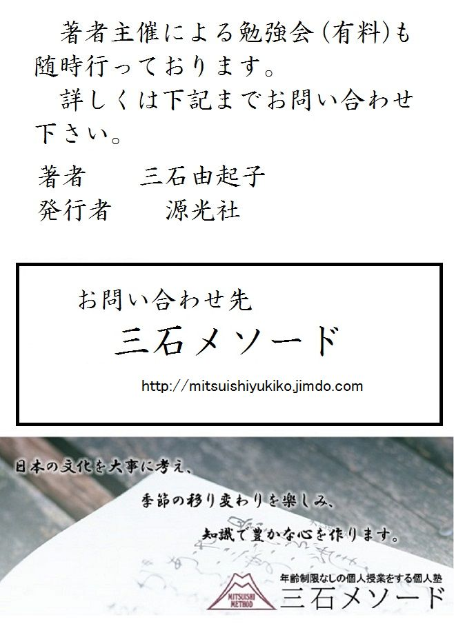

| これで読破！ 世間胸算用 | |
| 三石由起子 | |
| genkosha (2014) | |
井原西鶴は『世間胸算用』を最後の刊行として、元禄六年八月十日、五十二歳の生涯を閉じた。辞世の句は「憂き世の月見過しにけり末二年」である。
寛永十九年（１６４２年）大阪・難波に生まれ、十五歳頃から俳諧師を志して談林派の猛将として名を馳せる。その奇抜な歌風から「阿蘭陀西鶴」と罵られ、阿蘭陀流と腐された。
延宝五年五月二十五日、生玉本覚寺では千六百句を独吟し、同八年五月七日には同所において四千句の独吟興業を行ない、貞享元年六月五日の住吉神社では、一昼夜に二万三千五百句を詠んだ。矢数俳諧の創始を誇り、放埓抜群であった。
最後まで人間生活「世間」から抜け出さずに達する所に達した彼の辞世の句には戯作者的な茶化しは全くない。
『好色一代男』で浮世草子の第一声をあげた西鶴は、世評に気を良くしてただ書きに書いた。書きながら冷静な観察力と、俳諧特有の簡潔な文体は冴えに冴えていく。一作ごとに新境地を開いた筆力は、新奇を求める読者を念頭に置いて、その期待に大いに応えたのである。
国文学者・藤倉光一（大正八年生）は、西鶴を次のように評している。
「酒の飲めない俳諧の点者（＝添削者）、一寸取っつきは悪いような感じを与えるが、話せば物の分かった男。浮世の事に溺れはしないが、そうかといって浮世を捨てる事もできない男。一度は色に溺れた事もあり、矢数興業に狂気の如く猛った事もあった。一時の気まぐれから自信いっぱいに『好色一代男』を書いて、浮世草子を創造し、次から次へと書きまくっているうちに、諦観の境地にまで至ってしまった男。その日常は、俳諧の点者としての生活で、「浮世草子を書く筆のたつ俳諧師」であった。だが、浮世草子作家としての姿の方が俳諧師としての姿を圧していた。評判記や浄瑠璃にまで手を出さねば気のすまない男であった。旅にはよく出掛けるが、それは浮世の息苦しい人間関係を逃れて大自然の懐に抱かれたいという思いからではなかった。心は諸国の人情や風俗に強く惹かれて、何か珍しいことはないかと逸っていた。旅では諸国の遊里を思わずにはいられない男であって、どこまでも人間臭さから離れきれない男であった。
元禄五年の正月に刊行された『世間胸算用』は三年ぶりの刊行であったことから、西鶴の晩年の病気説がある。人間の儚さや浅ましさを見抜いた男だったとしても、無常観に囚われて筆を折ったとは考えられないからである。町人物を主題とすることに目をつけた西鶴には書く事はいくらでもあったはずであった。
『世間胸算用』は、京の上村平左衛門、江戸の万屋清兵衛、大阪の伊丹屋太郎右衛門の三書肆合板で刊行された。題簽（＝和漢書の表紙に貼り付けた細長い紙片）には「絵入 世間胸算用」とあり下に小書で「大晦日は一日千金」とある。大晦日の一日で展開する町人生活を書いたものである。この大晦日に着眼した西鶴は、そこに町人生活のぎりぎり一杯の生き方をはっきりと見ることができた。その種々相を描きつつ、金に支配される人間の悲喜劇を展開させている。この息の詰まるような、笑ってよいのか泣いてよいのか分からない人生の真実を写しながら、西鶴の眼は少しも曇ることなく、その筆は少しも渋滞する事なく、人生の機微をうがち、泣き笑いの人生を静かに語りつくす。ここにはもはや『日本永代蔵』に見られた教訓的な口吻はない。悲惨さの中にある一抹の笑いを見逃さずに写し取り、胸に迫るものを表現した。これは西鶴の現実を見る眼がいよいよ澄んで鋭くなったことを示すに違いないが、何より時を大晦日に限定した着眼が、この作品を成功させた理由であろう。」
これは三石由起子の「これで読破！ 古典シリーズ」の一環として、原文、現代語訳、解説の順序で完訳するものである。解説には昭和五十七年当時の龍谷大学教授・宗政五十緒の講義を引くが、三石の補足と割愛を含む。また、国文学者・藤倉光一の感想を『世間胸算用要解（有精堂）』から引くが、昭和四十九年当時の三石の直接取材をも含んでいる。また、翻訳の会話部分の表現については、昭和十六年の織田作之助の翻訳を参照した箇所もある。
初めに宗政五十緒の講義を引く。
「『世間胸算用』の「世間」は「現在のこの世」であり「胸算用」は「心の中で見積もること」すなわち「経済予想」である。その予想が正しいか否かは、江戸時代には簡単に分かった。それは大晦日が決済日だったからである。それが正しければ、明るく新年を迎えることができた。間違っていれば大晦日は越すに越されぬ状況となったのである。この作品は西鶴最晩年の作であり、非常に円熟した第一級の書である。この作品は全五巻、一巻に四話ずつ、合計二十話の短編から成っている。その二十編は全て大晦日の一日を扱って、それまでの作品とは全く違う構成となった。大阪のみならず、京都、江戸の三都、その他には奈良、長崎、伏見、堺といった地方をも舞台としている。最初の作品は大阪が舞台である。」
松の風静かに、初曙の若えびす〳〵、諸商人、買うての幸ひ売つての仕合せ。さて帳綴、棚おろし、納め銀の蔵びらき、春のはじめの天秤、大黒の打出の小槌、何なりともほしき物、それ〳〵の智恵袋より取出す事ぞ。元日より胸算用油断なく、一日千金の大晦日をしるべし。
元禄五年申歳初春
難波
西鶴
宗政五十緒の解説を引く。
「徳川家は「松平」の姓を名乗ったので、その幕府の時代が平和であるという意味が「松の風静かに」である。元日の曙に「若恵比寿、若恵比寿」と恵比寿様を印刷した御札を売りに来る。それを商人達が買って、その年の商売を始める。その初売りの売り言葉が「買うての幸ひ売つての仕合せ」である。町家は毎年、新しい帳簿を作り、紙を綴じてそれに上書きをする。「大福帳」と書き、年号や名前を入れるのである。それぞれの家の吉例によってそれをする日は決められている。それから在庫調査、金銭の入った内蔵を新年に初めて開く。春の初めに銀を量る天秤を扱う。銀には大黒の刻印が打たれている。銀と大黒は付き物であった。天秤の中央は小さな槌で叩いてある。チャンとかチンとか音がするので「銀十匁チャンと渡す」などという。「ちゃんと」の語源である。「天秤」と「小槌」も付き物である。商人は打出の小槌や大黒の袋からでなく、欲しい物は、小槌を打たれた天秤や智恵の袋から取り出せと西鶴は言う。そのためには元日から計算をして、一日千金に当たる大晦日を忘れてはならない。江戸時代の寺子屋の教科書『童子教』には「一日一字を学ぶ。三百六十字。一字千金に当たる。」とあった。この『世間胸算用』は寺子屋の教科書である、と西鶴は言ったのかもしれない。庶民の基本という意味である。」
一
世の定めとて大晦日は闇なる事、天の岩戸の神代このかたしれたる事なるに、人みな常に渡世を油断して、毎年ひとつの胸算用ちがひ、節季を仕回ひかね迷惑するは、面々覚悟あしき故なり。一日千金に替へがたし。銭銀なくては越されざる冬と春との峠、これ、借銭の山高うしてのぼり兼ねたるほだし。それ〳〵に子といふものに身代相応の費、さし当つて目には見えねど、年中につもりて、はきだめの中へすたり行く破魔弓、手まりの糸屑、この外雛の摺鉢われて、菖蒲刀の箔の色替り、踊だいこをうちやぶり、八朔の雀は珠数玉につなぎ捨てられ、中の玄猪を祝ふ餅の米、氏神のおはらひ団子、弟子朔日、厄払ひの包銭、夢違ひの御札を買ふなど、宝舟にも車にも積余るほどの物入り。
世間の決まりごとで、大晦日が闇夜だということは天の岩戸の神代以来、分かり切ったことなのだ。それを世間の人々は皆、平素の渡世に油断して、年に一度の胸算用が合わないで、大晦日の支払いができかねて困っている。それというのも、それぞれの覚悟が悪いからである。この一日は千金にも代えがたい。
お金がなくては越す事ができぬ冬と春との峠である。この山は、借金の山が高くては登りにくいと決まっている。それというのも足手まといとなる子というものに身代相応の費用がかかるからである。普段の生活では目に見えないが、一年の間に積もりに積もっている。いずれは、掃き溜めの中に捨てられてしまう正月の破魔弓、糸屑になるだけの手毬、桃の節句に準備された雛祭の調度の摺鉢は割れるし、端午の節句で遊ぶ菖蒲刀も箔の色が変われば捨てられる。七月七日の踊りに使われた太鼓も破れ、八月一日、数珠玉に付けられた八朔雀は、用が済めば捨てられる。十月に中の亥の日を祝う餅、秋祭りの祓えに供える団子、十二月の弟子朔日（＝末っ子のために餅をついて祝う日）、節分の厄払いでの包み銭、節分と大晦日に悪夢を逃れるために買う獏の絵札、正月の宝舟にも車にも積み切れぬほどの出費である。
宗政の講義を引く。
「「問屋」は、物を仕入れて売り買いする商売だが、必ずしも現金での売り買いではなかった。地方から品物を持ち込むには信用が必要だった。現金で仕入れる時には両替商から借りる。それにも信用が必要であった。金があるという様子を見せなければならなかった。そのためには主人もその妻も派手な暮らしをする。衣食住全てに派手が求められた。題名は「問屋の妻の派手な生活ぶり」である。本文冒頭の「世の定めとて大晦日は闇なる事」は、太陰暦では月末は必ず闇夜になるということに掛けて、胸算用がうまくいかなければ越すに越されぬ年末の「闇夜」を言うものである。子供に金がかかると書き起こし、八朔雀からは子供を離れて祝儀の話になり、さらに進んで妻に費用がかかることに進んで行く。」
二
ことに近年は、いづかたも女房家主奢りて、衣類に事もかかぬ身の、そのときの浮世模様の正月小袖をたくみ、羽二重半疋四十五匁の地絹よりは、千種の細染百色がはりの染賃は高く、金子一両宛出して、これさのみ人の目だたぬ事に、あたら金銀を捨てける。帯とてもむかしわたりの本嬬子、一幅に一丈二尺、一筋につき銀二枚が物を腰にまとひ、小判二両のさし櫛、今の直段の米にしては本俵三石あたまにいただき、襠も本紅の二枚がさね、白絖の足袋はくなど、むかしは大名の御前方にもあそばさぬ事、おもへば町人の女房の分として、冥加おそろしき事ぞかし。せめて金銀我がものに持ちあまりてすればなり。降つても照つても、昼夜油断のならざる利を出す銀かる人の身代にて、かかる女の寛闊、能々分別ふんべつしては、我と我が心の恥づかしき義なり。明日分散にあうても、女の諸道具は遁るるによつて、打ちつぶして又取りつき、世帯の物種にするかと思はれける。
ことに近年は、どの家の女房も贅沢になって、着物には不自由しないばかりか、当世流行の模様の正月小袖に浮き身をやつしている。羽二重一反で銀四十五匁もする絹地を買い、あらゆる種類の染めを求めるが、その染賃が高くて、金子一両も出すのである。それでも人目を引くほどではないのだから、あたら金銀を捨てるも同然なのである。帯にしてからが、古渡り（＝中国からの舶来品）の本嬬子で、一丈二尺の一筋が銀二枚（＝八十六匁）もする物を腰にまとい付け、小判二両の挿し櫛をしている。これは、今の米の値段に換算すれば本俵三石（＝五斗俵六つ）を頭に乗せていることになる。襠（＝湯具、腰巻）も本紅（＝紅花で染めた高級品）の二枚重ねで、白絖（＝光沢のある絹布）の足袋はくなどは、昔であれば大名の奥方でさえなさらぬ贅沢である。思えば、町人の女房の分際で、冥加おそろしき事である。
それも金銀が有り余ってすることならともかくの話だ。降ろうが照ろうが、昼夜油断なく利子が増える身分で、こんな女の派手好きは、よくよく分別すれば、我ながら恥ずかしい筈なのである。明日、自己破産して全てを差し出さねばならぬ事になっても、女の身の廻り品は取り立てを免れるから、これを売ってまた商売でも始めて、世帯を立て直す材料にでもするつもりなのだろうか。
江戸時代は夫婦は別産制であった。夫の商売が潰れても、妻の財産には手を付けられない。金があるうちに高価な着物を作っておけば、破産した後で売却して新しい商売の資金にすることができたのである。
三
惣じて、女は鼻のさきにして、身代たたまるる宵まで、乗物にふたつ挑灯、月夜に無用の外聞、闇に錦の上着、湯わかして水へ入りたるごとく、何の役にも立たざる身の程、死なれたる親仁持仏堂の隅から見て、「うき世の雲を隔てければ、悔みても異見はなりがたし。今の商売の仕かけ、世の偽りの問屋なり。十貫目が物を買うて、八貫目に売りて銀まはしする才覚、つまる所は内証の弱り、来年の暮には、この門の戸に、『売家十八間口、内に蔵三ケ所、戸建具そのまま、畳上中二百四十畳、外に江戸船一艘、五人乗りの御座船、通ひ船付けて売申候。来ル正月十九日に、この町の会所にて札をひらく』と沙汰せられ、皆人の物になれば、仏の目には見えすきて悲しく、定めて仏具も人手に渡るべし。中にも唐金の三ツ具足、代々持ち伝へて惜しければ、行先の七月、魂祭の送り火の時、蓮の葉に包みて、極楽へ取つて帰るべし。とてもこの家来年ばかり、汝が心根もそれゆゑ、丹波に大分田地買置き、引込所拵こしらへけるは、中々無分別なり。我賢ければ、我に銀借すほどの人も又利発にて、ひとつ〳〵吟味仕出し、皆人の物になる事なり。よしなき悪事をたくまんよりは、何とぞ今一たび商売仕返せ。死んでも子はかはゆさのままに、枕神に立つてこの事をしらすぞ」と、見し姿あり〳〵との夢は覚めて、明けければ十二月二十九日の朝、
概して女というものは、「女の知恵は鼻の先」の諺の通りに浅墓であるから、身代が潰れるその宵まで、月夜の乗物に二つ提灯といった見栄を張るのである。まるで闇夜に錦の上着を着てめかし込み、湯を沸かして水になってから入るようなものだ。何の役にも立たぬ身の程なのである。死んだ親仁が仏間の隅から見て、
「幽冥境を異にすれば、残念に思っても意見をすることもかなわない。今のお前の商売の仕方は、まるで偽りの問屋で嘘だらけだ。十貫目の物を買って八貫目で売り、現金を手に入れて金繰りをしている。結局は身代が弱ることになる。今年の暮れはもっても、来年の暮れには、この門の戸に、『売家十八間口、内に蔵三ケ所あり。雨戸と建具はそのままにしておく。上中の畳数は二百四十、他には江戸廻り船が一艘、五人乗りの御座船に通い船を付けて売り申し候。来たる正月十九日に、この町の会所にて競売』という貼り札が貼られて評判になり、全ての財産が他人の物になるだろう。仏の私の目にはそれがはっきりと見えて悲しい。定めし仏具も人手に渡るのであろう。中でも青銅の三ツ具足（＝香炉、燭台、花立て）は、この家に代々伝わる惜しい品である。私が次の七月の盆に来て、送り火で帰る時には、蓮の葉に包んで極楽へ持ち帰ることにする。どう見てもこの家は来年限りであろう。お前の心底にもそれがあって、丹波に大分、田地を買ってあるようだが、そんな場所に隠居所を拵えたのは、かえって無分別なことであった。お前が賢いつもりでいても、お前に金を借す者はもっと抜け目がない。一つ一つを全て調べ出して、結局はみんな取り上げられて他人の物になってしまうだろう。そんな小賢しいことを考えるよりも、何とぞもう一度商売を仕直してくれ。死んでも子は可愛いものだから、こうして枕元に立って知らせるのだよ。」
と、ありし日の姿がありありと見えて夢は覚めた。
明ければ十二月二十九日の朝であった。
四
寝所よりも大笑ひして、「さても〳〵、けふと明日とのいそがしき中に、死んだ親仁の欲の夢見。あの三ツ具足お寺へあげよ。後の世までも欲が止まぬ事ぞ」と、親をそしるうちに、諸方の借銭乞山のごとし。何とか埒を明くる事ぞと思ひしに、近年銀なしの商人ども、手前に金銀あるときは利なしに両替屋へ預け、又入る時は借る為にして、こざかしきもの振手形といふ事を仕出して、手回しのたがひによき事なり。この亭主もその心得にして、霜月の末より、銀二十五貫目念比なる両替屋へ預け置き、大払の時、米屋も呉服屋も、味噌屋・紙屋も肴屋も、観音講の出し前も、揚屋の銀も、乞ひにくるほどの者に、「その両替屋で請けとれ」と、振手形一枚づつ渡して、「万仕回うた」とて年籠りの住吉参、胸には波のたたぬ間もなし。こんな人の初尾は、うけ給うてから気づかひ仕給ふべし。
この商人は寝所を出る前から大笑いして、
「さてもさても。今日明日、二十九日と三十日は忙しいというのに、死んだ親仁の欲深な夢を見たことだ。あの三ツ具足はお寺へ預けてしまえ。死んだ後まで欲の止まらぬ事だ。」
と、親を謗るうちに、あちらこちらから借金取りが山のように現われた。
どうやって始末をつけるのかと思っていると、近頃は金のない商人達が振手形という事を仕出したのである。自分に金がある時に無利子で両替屋へ預けておいて、要り用の時に借りるのである。小賢しい発明で、お互いに手回しが良い。この亭主もその伝で、十一月の末から銀二十五貫目を懇意な両替屋へ預け置いたのだった。大晦日の払いには、米屋であれ呉服屋であれ、味噌屋、紙屋、肴屋、果ては観音講の分担金も、揚屋（＝高級妓を呼んで遊ばせる家）の支払いも、掛け取りに来る者には皆、
「あの両替屋で請けとれ」
と言って、振手形を一枚ずつ渡して、
「これで全て済んだ。」
と、年籠りに住吉に参詣したが、内心は不安で落ち着かないのである。
こんな人の賽銭を受け取っても、神様もお気づかいなさるだろう。
五
さればその振手形は、二十五貫目に八十貫目あまりの手形持ちかくる程に、両替には、「算用指引して後に渡さう。振手形大分あり」と、さま〴〵詮議するうちに、又掛乞もその手形を先へ渡し、又先から先へ渡し、後にはどさくさと入りみだれ、埒の明かぬ振手形を銀の替りに握りて、年を取りける。一夜明くれば、豊かなる春とぞなりける。
さてその振手形といえば、二十五貫目預けてあったところに八十貫目以上の手形が持ち込まれたのであるから、両替屋は、
「差し引き勘定をしてから渡します。振手形が大分ありますから。」
と、色々に調べるうちに、掛取りの方でもその手形を他所へ渡し、又、その先から先へと渡して、やがてはどさくさと入り乱れて不渡りになった。その埒の明かぬ振手形を銀の代わりに握って、年を取ったのである。
一夜明ければ、豊かな春となった。
日本における個人小切手は、元禄時代よりも前、寛文の頃からすでに存在していた。振り手形は大阪で考え出されたものである。換金するのに無期限の振り手形であったが、この信用第一の発明は江戸では発達を見なかった。大阪が経済の中心となった原因の一つである。両替商は初めは両替を商売にしていたが、大きな店では金貸し一本になっていた。ここでの「年籠りの住吉参」は、大晦日に借金取りが来ても不在という体裁を取るためのものであった。住吉は海の神であるから、その後の「波のたたぬ間もなし」に縁語として続けられている。振り手形の仕組みの上に問屋が発達し、問屋の発達の上に乗った経済がどれほど危ないものであるかを西鶴は書いている。
西鶴は庶民の出身であるが、俳諧師として上層部の金持ちとの交流があった。『世間胸算用』は、その交流から庶民の上層階級の経済のからくりを書くことができたのである。時々滑稽な筆が走るが、これが俳諧師の特徴でもあった。
一
元朝に日蝕六十九年以前にありて、又元禄五年みづのえ、さる程にこの曙めづらし。暦は持統天皇四年に儀鳳暦より改りて、日月の触をこよみの証拠に、世の人これを疑ふ事なし。口より見尽して末一段の大晦日になりて、浄瑠璃・小うたの声も出ず、けふ一日の暮せはしく、ことさら小家がちなる所は、喧嘩と洗濯と壁下地つづくると、何もかも一度に取りまぜて、春の用意とて、いかな事、餅ひとつ、小鰯一疋もなし。世にある人と見くらべて、浅ましく哀れなり。
元旦は日蝕であった。六十九年前、また元禄五年壬申の年が日蝕であったが、この曙の日蝕は珍しい。持統天皇四年に採用された元嘉暦は、この時には儀鳳暦に改められていた。それ以来、日蝕と月蝕を暦の根拠とし、世間の人々はそれを信じ、生活の中でその暦は生きている。
元日の最初からずっと見て来た暦は、今日は最後の一段の大晦日である。趣味や道楽の浄瑠璃や小唄に費す時間もないので、その声もない。今日は一日が暮れるのにせわしく、特に小家の多い場所では、売掛金をめぐっての喧嘩、正月をゆっくり過ごすための洗濯、壁下地の修繕、それらを何もかも取りまとめて一度に行なうのであるから、とにかく忙しい。正月の準備と言っても、とてもではないが、餅一つ、ごまめ（＝小さな安い魚）一匹の用意もないのだった。世間の人と比べては、あきれるほど哀れである。
長刀は、元々男が使う武具であったが、江戸時代になると女の武具になった。
題名は「昔、手柄を立てた長刀の鞘の話」である。
この作品の出版は元禄五年（１６９２年）の正月であり、元日に日蝕が起きた。前年の十一月には暦が配布され、世間の人はそれを予め知ることができた。西鶴は、それを知って、出版の記述を合わせている。だが、六十九年前の寛永元年（１６２４年）に日蝕があったという記録はない。平安時代の初めから使われた宣明暦は、江戸時代初期まで使われていた。だが、日食と月食の時期がずれ始めて、霊元天皇の貞享元年の甲子（１６８４年）に貞享暦に替えられた。これが渋川春海による初めての「日本人が制作した暦」である。それ以前の暦は中国人の手による中国暦が使用されていたのだった。日本の天文学の発達の証左である。
元禄五年は「壬申」であるが、年号と浄瑠璃の常套文句「さてもそののちさる程に」を掛けて俳諧風の洒落た表現にしたものである。「壁下地」は塗り壁の骨組みで、細く削った竹を縦横に組んで縄でからげたものをいう。
二
この相借屋六七軒、何として年を取るぞと思ひしに、みな質種の心当あれば、少しも世をなげく風情なし。常住身の取置、屋賃その晦日切にすます。その外に万の世帯道具、あるいは米・味噌・焼木・酢・醤油・塩・あぶらまでも、借す人なければ万事当座買にして、朝夕を送れば、節季々々に帳さげて、案内なしにうちへ入るものひとりもなく、誰におそれて侘言をするかたもなく、「楽しみは貧賎にあり」と、古人の詞反古にならず。書出し請けて済まさぬは、世にまぎれて住みける昼盗人に同じ。これを思ふに、人みな年中の高ぐくりばかりして、毎月の胸算用せぬによって、つばめのあはぬ事ぞかし。その日過の身は知れたる世帯なれば、小づかひ帳ひとつ付けるまでもない事なり。さる程に、大晦日の暮方まで不断の体にて、正月の事ども何として埒明くる事ぞと思ひしに、それ〳〵に質を置きける覚悟ありて、身仕回するこそ哀れなれ。
この長屋に住む六、七軒の人々は、どうやって新年を迎えるのだろうと思うが、皆それぞれに質草の当てがあって、憂き世の苦しさを少しも嘆く様子がない。普段の暮らしでは、家賃は半年分をまとめて払う余裕もなく、その月の月末に済ませるので、家賃の滞納もない。その他の所帯道具にしても、または米・味噌・薪・酢・醤油・塩・油などの最低限の食料品に至るまで、誰も掛け売りをしてくれないので、差し当たって必要な物を現金で買う暮らしなのである。そのために、盆と暮れごとに掛け取り帳を提げて、案内も請わずに家に入るような集金人や借金取りは一人もなかった。誰を恐れるでもなく、詫び言を言うでもなく、「貧しい家庭にこそ楽しみが多い」という諺が生きている。請求書を突きつけられて支払わなければ、良民を装って暮らす昼盗人と同じである。
これを思えば、世間の人は皆、大ざっぱな勘定だけをして暮らし、毎月の心づもりをしないために収支が合わないのである。そこへいくと、その日暮らしの身は全てが分かり切った所帯であるから、小遣い帳一つ付けるまでもない。こうして、大晦日の夕方まで普段と変わらぬ生活をし、正月をどうするつもりかと言えば、それぞれが質草を置く覚悟を持って身仕舞いするのだから、気楽とはいえ哀れなことだ。
江戸時代は、掛け売り、掛け買いが主流で、その最も大きな決済日が大晦日であった。次には七月十五日のお盆前である。その他、小さな決済日としては、三月三日の前日、五月五日の前日であり、お盆の後では九月九日の前日であった。五節季の直前である。しかし、現実には、その小さな決算日に払うのは借金の三割、五割程度であった。手持ち金がないという理由もあったが、掛け買いには利子が付かなかった。つまり、たとえお金があったとしても、延ばせば延ばすほど良かったのである。そこで大晦日の取り立てとなる。挨拶をすれば逃げられるので、挨拶をせずに入って来るのが大晦日の集金人の特徴であった。
だが、貧乏人にはその心配がなかった。
「昼盗人」は、えげつなくふてぶてしい者の代名詞である。夜の盗人なら致し方ない。「つばめのあはぬ事ぞかし」の「つばめ」は、「刀の鍔の目」である。これがきちんと合わないと刀の用をなさない。転じて、「金銭を合算し、収支の帳尻を合わせること」である。
三
一軒からは、古き傘一本に綿繰ひとつ、茶釜ひとつ、かれこれ三色にて、銀一匁借りて事済ましける。
またその隣には、嬶が不断帯観世紙縒に仕かへて一筋、男の木綿頭巾ひとつ、蓋なしの小重箱一組、七ツ半の筬一丁、五合桝・一合桝二ツ、湊焼の石皿五枚、釣御前に仏の道具添へて、取集めて二十三色にて、一匁六分借りて年を取りける。その東隣には舞々住みけるが、元日より大黒舞に商売を替へければ、五文の面、張貫の槌ひとつにて、正月中は口過すれば、この烏帽子・ひたたれ・大口はいらぬ物とて、二匁七分の質に置きて、ゆるりと年を越しける。
その一軒では、古い傘一本と綿繰り車一つ、茶釜一つ、あれこれ三品で、銀一匁を借りて事足りたようだ。
またその隣の家では、女房が普段締めている帯を観世紙縒に替えて一本の帯にして、男物の木綿頭巾一つ、蓋のない小重箱一組、七つ半の筬（＝機織りで横糸を織り込むのに使用する道具）一丁、五合桝と一合桝の二つ、湊焼きの陶器の皿五枚、釣御前（＝壁に吊る阿弥陀仏の絵）に仏具を添えた合計二十三品で一匁六分の金を借りて新年を迎えた。その東隣には、幸若舞の太夫が住んでいたが、元日から幸若舞を大黒舞に商売替えした。五文の面と紙で作った打ち出の小槌一つで正月の生計を立てるので、幸若舞で使う烏帽子、直垂、大口袴は不要であるからと二匁七分で質に入れて、ゆっくりと年を越したのであった。
「綿繰」は綿繰車（＝綿の実から繊維を取り出す木製の器具）で、嬶の内職道具であった。正月は内職も休むので、その道具は不要になるのである。古い傘一本と綿繰り車一つ、茶釜一つの三品で、銀一匁を借りる。当時の職人の手間賃が一日で銀六匁五分であった。
嬶の普段の帯は紙製であった。これを裂いて紙縒りにして二本、四本、八本と段々に太くするのである。おそらく六十四本、百二十八本を縒り合わせると、原料は和紙であるから、強くて切れない男用の帯に作り替えるのであった。「七ツ半の筬」は、糸四十本を一紀とし、七紀半すなわち三百本の糸を通すための筬である。「湊焼の石皿」は、和泉国大島湊村で産した廉価な磁器の皿のこと。「幸若舞」は、江戸時代の中頃までは、全国中に広まっていた大道芸である。広場に簡単な筵を掛けて舞台も作ったりもするが、もっと下の者は門付けをして歩いた。手足の動きは少なく、言葉のほうが重要であった。それを正月には大黒舞に代えるのである。めでたい言葉を語る。幸若舞の道具は一月の末までに受け出せばいいので「ゆるりと年を越しける」のであった。
四
その隣はむつかしき紙子牢人、武具・馬具年久しく売喰にして、小刀細工に馬の尾にてしかけたる鯛釣もはやりやめば、今といふ今小尻さしつまりて、一夜を越すべき才覚なく、似せ梨地の長刀の鞘をひとつ、質屋へもたしてつかはしけるに、「こんなものが何の役に立つべし」と、手にしばしももたず、なげ戻しければ、牢人の女房、そのまま気色を替へ、「人の大事の道具を、何とてなげてそこなひけるぞ。質にいやならば、いやですむ事なり。その上、何の役にたたぬとは、ここが聞所ぢや。それはわれらが親、石田治部少輔乱に、ならびなき手がらあそばしたる長刀なれども、男子なき故にわたくしに譲り給はり、世に有る時の嫁入に、対の挟箱のさきへもたせたるに、役にたたぬものとは先祖の恥。女にこそ生れたれ、命はをしまぬ。相手は亭主」と、取付きて泣出せば、あるじ迷惑して、さま〴〵詫びてもきかず。そのうちに近所の者集まりて、「あのつれあひ牢人はねだり者なれば、聞きつけ来ぬうちにこれをあつかへ」と、いづれも亭主にささやき、銭三百と黒米三升にてやう〳〵にすましける。さても時世かな、この女もむかしは千二百石取りたる人の息女、万を花車にてくらせし身なれども、今の貧につれて、無理なる事に人をねだるとは、身に覚えて口惜し。これを見るにも貧にては死なれぬものぞかし。すでに曖ひ済みて三百・三升請取り、「この黒米取つて帰りて、明日の用にたたぬ」といへば、「幸ひこれに碓あり」とて、かして、ふまして、帰しける。これぞ世にいふ「さはり三百」なるべし。
その隣は堅苦しい紙子浪人（＝「紙子」は柿渋を塗って乾かした紙製の衣服を着た貧乏浪人）であった。元は良い暮らしをしていたのだが、落ちぶれて長屋に入って来て、長年、武具や馬具を売り食いして暮らしていた。小刀細工で馬の尾を仕掛けに使った鯛釣りの玩具を作っていたのだが、その流行も過ぎてしまって、今という今は、抜き差しならぬ窮地に追い込まれていた。大晦日の一夜を越す工面がつかず、似せ梨地（＝まがい物の梨地蒔絵）の長刀の鞘だけを女房に持たせて質屋に行かせた。質屋の亭主が、
「こんな物が何の役に立つか。」
と、手に持った途端に投げ戻したので、女房は顔色を変えた。
「人が大事にしている道具を投げて傷をつけるとは。質に取りたくないなら、そう言えばいいじゃないか。その上、何の役にも立たぬとは。ここのところはどのような了見か、よく聞いておきますよ。その長刀の鞘は、私の父が石田治部少輔乱（＝関ヶ原の合戦）で無類の手柄をあげた物なのです。男の子がなかったので私に譲った由緒ある物です。落ちぶれる前の嫁入りの行列では、これと対の挟み箱（＝衣装箱）の前に持って歩かせた物なのです。それを役に立たぬと言われては先祖の恥、女には生まれたが、命は惜しまぬ。相手はお前、ここの亭主だ。」
と言って、組みついて泣き出した。亭主は困って、あれこれと詫びたが承知するものではない。そのうちに近所の者が集まって来て、
「あの女の連れ合いの浪人は、ゆすり者なのだよ。この騒ぎを聞きつけて、やって来ないうちに示談にしなさい。」
と、皆で亭主にささやいた。
これは、銭三百文と玄米三升を詫び料として、ようやく始末がついた。
それにしても時世も変わった。この女房も昔は千二百石取りの侍の娘で、何事にも上品に暮らした身であったのだ。それが今の貧乏のために道理に外れたゆすりを働くのだから、我ながら無念だろう。こんなことを見るにつけても、貧乏で死ぬことはできないのだと知れる。すでに示談も済み、銭三百文と玄米を受け取った女房が、
「こんな玄米は持って帰っても、明日の役には立たない」
と言うので、
「幸いなことに、ここに踏み臼があるから。」
と貸してやって、精米させてから帰したのである。
これが世間で言う「さわり三百」ということであろう。
馬具と武具を売り食いしていたのであれば、少なくとも馬に乗ることのできた三百石以上の侍であった。「小尻さしつまりて」の「小尻」は、刀の鞘の先端である。それより先にはどうしても行けないのである。
「聞きつけ来ぬうちにこれをあつかへ」の「あつかふ」は第三者が仲裁することであるが、この場面では当事者同士が話し合って「示談にする」という意味である。「千二百石取りたる人の息女」の「千二百石」は、家老職程度である。大石内蔵助ランクであった。元禄六年の米一石の値段は、『江戸物価事典』（小野武雄）によると、六万円程度であった。多くの家来や使用人を考えれば誇張した金額とは言えない。「花車にてくらせし身なれども」の「花車」は「華奢」で、「上品で華やかなさま」である。
西鶴は「貧にては死なれぬものぞかし」と、言っている。人間が死ぬ理由は、貧乏以外のものだという断言であった。江戸時代は封建社会であり、苦しい生活を余儀なくされた者は多かったに違いないが、この長屋の人々のように逞しく生き抜いていたのであった。貧乏だけの理由で死ぬのは、現代社会のことなのである。西鶴の時代に貧乏で死ぬ者はなかった。
「碓」は地面に埋めて杵を足で踏む踏み臼。諺の「さはり三百」は、「触れただけで銭三百文の損をする」という意味であり、喧嘩や物言いに口出しして大きな迷惑を被ること。
五
又牢人の隣に、年ごろ三十七八ばかりの女、親類とても、かかるべき子もなく、ひとり身なりしが、五六年跡に男にはなれたるよしにて、髪を切り、紋なしのものは着れども、身のたしなみは目だたぬやうにして昔を捨てず。しかも、すがたもさもしからず。常住は、奈良苧をなぐさみのやうにひねりて日をくらせしが、はや極月初めに、万事を手回しよく仕回ひて、割木も二三月までのたくはえ、肴かけには二番の鰤一本、小鯛五枚、鱈二本、羹箸・塗箸・紀伊国五器、鍋蓋までさらりと新しく仕替へて、家主殿へ目黒一本、娘御に絹緒の小雪踏、お内儀様へうね足袋一足、七軒の相借屋へ餅に牛蒡一把づつ添へて、礼儀正しく年を取りける。人のしらぬ渡世、何をかして、内証の事はしらず。
また、牢人の隣には、三十七、八歳の年老いた女が住んでいる。親類も、世話になれる子もなく、独身であった。実際には分からぬが、五、六年前に夫に死なれたのだという建て前で髪を切り、無紋の着物を着ていた。身だしなみは目立たぬながら昔の色香が残っていた。しかも、器量も貧弱ではない。普段は、奈良苧（＝奈良晒しの繊維の原料となる苧麻）を収入とは関係のない慰みのように紡いで日を送っていた。この女は、十二月の初めには早くも手回し良く、正月の準備をし終えていた。薪も二、三月までの分は蓄えて、肴掛け（＝台所の竈の上に吊る魚や鳥を掛ける鉤）には中くらいの大きさの塩鰤を一本、小鯛を五枚、鱈を二本掛け、雑煮用の箸、塗箸、紀伊国の漆塗りの食器、鍋蓋まで新しくしていた。更に、御祝儀として家主に目黒（＝鮪の小さな物）を一本、その娘には絹緒の付いた小雪踏、妻には畦足袋（＝絹糸で指先を刺した足袋）一足を配った。さらに、長屋の住人、七軒のそれぞれに餅に牛蒡を一把ずつ添えて配って、礼儀正しく年を取った。他人は知らぬ世渡りで、何をして暮らしていることか、内実はわからない。
十二月十三日には「事初め」といって、正月の準備にかかるのが普通であった。女はそれより早く準備を始めたのである。紀伊国は漆器の産地であり、製品は大阪で売られた。西鶴は「人のしらぬ渡世、何をかして、内証の事はしらず。」と書いているが、妾奉公をいうのである。
六
その奥の相住に二人の女ありしが、一人は年も若く、耳も目鼻も世の人に替る事なくて、一生ひとり過して悲しく、鏡見るたびに、我ながら横手うつて、「これでは人も合点せぬはず」と、身の程を観じける。又一人は、東海道関の地蔵に近き旅籠屋の出女せし時、木賃泊りのぬけ参りにつらくあたり、米など盗みし科にや、同じ世に報ひて、米の乏しき鉢ひらき坊主となりて、顔を殊勝らしく作り、心の外の空念仏、思へば心の鬼、狼に衣ぞかし。精進の事は忘れて、鰯の頭も信心からとて、墨染の麻衣を着るゆゑに、この十四五年も仏のお蔭にて、毎朝修行に出しに、一町にてニ所づつの手の中、二十所を集めて漸一合あり。五十丁駆回らねば、米五合はなし。道心も堅固になくては勤めがたし。過ぎにし夏霍乱をわづらひて、せんかたなく衣を一匁八分の質に置きけるが、その後請くる事なりがたく、渡世の種つきける。人の後世信心に替る事はなきに、衣を着たる朝は米五合ももらはれ、衣なしには二合も勧進なし。殊に極月坊主とて、この月はいそがしきに取りまぎれ、親の命日もわすれ、くれねば、是非もなく、銭八文にて年をこしける。
まことに世の中の哀れを見る事、貧家の辺りの小質屋、心よわくてはならぬ事なり。脇から見るさへ悲しきことの数々なる、年のくれにぞありける。
その奥の長屋には、二人の女が相住みをしていた。一人で家賃を払うことができないのである。一人は年も若く、耳も目鼻も普通であったが、一生独身でいるのを悲しがって、鏡を見る度に溜息をついて、
「こんな容貌では誰も嫁には欲しがるまい。」
と、我が身を嘆いていた。
もう一人は、東海道の関宿にある地蔵堂に近い旅籠屋で、客引きと飯盛女をしていた者だった。親や主人に無断で参りに出た木賃泊まりの貧乏旅人に辛く当たって、彼らから米などを盗んだ罰があたったのか、あの世まで待たずにこの世でその報いがあって、貰いの少ない托鉢坊主となっていた。殊勝らしい顔を作って、心にもない空念仏を唱えているが、心は鬼であり、これを「狼に衣」と言うのである。精進潔斎などは念頭になく、鰯の頭も信心からと、墨染の麻衣を着ているのである。その衣のお蔭で、この十四、五年は仏に食わせてもらっている。毎朝、托鉢に出て、一町でニか所ずつ施しの米を貰い、それを二十か所で集めると漸く一合になる。つまり、五十町の距離を駆け回らなければ、米五合にはならなかった。坊主も健康でなければ勤まらない。去る夏、霍乱（＝暑気あたり、日射病）になって、仕方なく僧衣を一匁八分で質に入れたが、その後では請け出す事ができなくなって、渡世の種も尽きてしまった。世の人が、後世を願う信心に変わりはないだろうに、僧衣を着ていれば、一日に米五合も貰えたものが、衣がなくては二合の寄附もないのである。殊に十二月は「師走坊主」という言葉があるように、世間の人は忙しくて親の命日も忘れるほどであるから、是非もなく、銭八文で年を越したのであった。
実に世間の哀れな様子を見る事ができるのは、貧家の辺りにある小さな質屋であって、気が弱くてはできない商売である。傍目から見るのさえ、悲しいことが数々ある年の暮れなのであった。
「木賃宿」は、薪を買う「木賃」を払って泊まり自炊する宿である。貧乏人の利用する最低の宿であった。その貧乏人から米を盗んだ報いで、托鉢坊主になったのだと、西鶴は書いている。
「師走坊主」とは、「やつれたみすぼらしい坊主」のことである。歳末には忙しい世間から相手にされず、布施も少ないところから出た言葉である。また、みすぼらしい身なりをした人を譬えるのにも使われた。
藤倉の感想を引く。
「貧乏所帯には大晦日の借金取りも来ない。「楽しみは貧賎にあり」あたりから筆がすべって教訓的な口吻になっており、これは主題から離れた、なくもがなの箇所であるが、「小づかひ帳ひとつ付けるまでもない事なり」で主題に戻っている。西鶴の早い筆が見えて面白い。貧乏所帯の質種の数々が西鶴一流の克明な計算で説明されて行き、おかしみのそこに哀れさが滲み出る。本編の山たる浪人の女房のねだりは、一見喜劇のごとく書かれているが、この事件の底には、どうにもならぬ悲惨な生活が広がって、泣き笑いの断面図を作っている。昔は千二百石取りの息女であったこの女房は、まことに「身に覚えて口惜し」だったろうが、西鶴はそれを「貧にては死なれぬものぞかし」と冷たく突き放す。それとうって変わって、浪人の隣の後家の話は、悠々と正月の仕度を済ませている。当時のこの階級としての正月の用意の品々が詳細に語られる。しかし、何をしたらこんな暮らしができるのか。西鶴は「人のしらぬ渡世、何をかして、内証の事はしらず。」と書くが、見方によれば、この女があるいは一番悲惨なのかもしれない。最後に書かれる相住みの女は銭八文で年を越す。これがどん底の年越しである。西鶴は「まことに世の中の哀れを見る事、貧家の辺りの小質屋、心よわくてはならぬ事なり。脇から見るさへ悲しきことの数々なる、年のくれにぞありける。」と、静かにその結末を言う。大晦日の質屋は彼の好んで描く材料で、『日本永代蔵』の「世は抜取の観音」でも、伏見の町外れの質屋が描かれて「しばし見るさへ身に応へて涙出でしに、亭主はなかなか心強くてはならぬ商売、これ程いやな事はなし」と結論される。小質屋を中心にした構成で、悲惨な生活をユーモラスな筆致で描く西鶴の眼は冴えている。」
一
神の松、山草、むかしより毎年かざり付けたる蓬莱に、伊勢海老なくては、ありつけたるもの一色にて、春の心ならず。その年によりて、格別ねだんの高き事ありて、貧家又は始末なる宿には、これを買はずに祝儀をすましぬ。この前も代々の年ぎれして、ひとつを四五分づつの売買なれば、この替りに九年母にて埒を明けける。これは大方色かたちも、似たりよつたりの物なりしが、伊勢海老の名代に車海老、いかにしてもかり着のごとく、ない袖ふる人は是非もなし。世間をはつて棟のたかき内には、それほどの風があたつて、北雨吹の壁に筵菰もなりがたし。渋墨の色付板包むなど、これらは奢にあらず。分際相応に、人間衣食住の三つの楽しみの外なし。家業は何にても、親の仕似せたる事を替へて、利を得たるは稀なり。とかく老いたる人のさしづをもるる事なかれ。何ほど利発才覚にしても、若き人には三五の十八、ばらりと違ふ事数々なり。
神棚に飾りつける松、敷き物にする山草もそうであるが、昔から正月の飾り付けの蓬莱には、伊勢海老がなくては、あるはずの物一つがないために正月の気分になれない。だが伊勢海老は、年によって格別に値段が高い事があって、貧乏人や倹約な家では、買わずに祝儀を済ますのであった。以前にも橙が品薄になって、一個が四分、五分という値段だったので、代用品として九年母（＝柚子に似た果物）を使って済ませた。橙と九年母なら、大方の色も形も似ているのだが、伊勢海老の代わりに車海老では、何としても借り着のようである。だが、ない袖を振る人にとっては是非もなかった。
しかし、世間の向こうを張って棟を高くしている大商人の家では、それ相応の費用が必要であった。北風が吹き、雨の飛沫がかかる壁に筵や菰を掛けて済ますわけにはいかない。やはり、渋墨の色付板を使って包むなどするのである。これは奢りではない。分際相応に、人間の衣食住三つを楽しむため以外のものではなかった。何の家業であっても、親のして来た事を変えて利を得るのは稀である。とかく老人の指図に従わざることなかれ。どんなに利発で才覚に優れていても、若い人には「三・五の十八」で、勘定がばらりと違うことも多いのである。
勘定が合わぬことを「三・五の十八」あるいは「三・五の二十五」と言った。
二
さるほどに大坂の大節季、よろづ宝の市ぞかし。商ひ事がない〳〵といふは十年このかた、何が売りあまりて捨たる物なし。ひとつ求むればその身一代、子孫までも譲り伝へる挽碓さへ、日々年々に御影山も切りつくすべし。まして蓮の葉物、五月の甲、正月の祝ひ道具は、わづか朔日、二日、三日坊主。寺から里への礼扇、これらは明けずに捨たりて、世のつひえかまはず、人の気江戸につづいて寛闊なる所なり。たとへ千貫すればとて、伊勢海老なしに蓬莱を餝りがたしと、家々に調へければ、極月二十七八日より所々の魚の棚に買ひあげて、唐物のごとく次第にむつかしく、はや大晦日には、髭もちりもなかりけり。浦の苫屋の紅葉をたづね、「伊勢海老ないか〳〵」といふ声ばかり。
さて、大阪の大節季は、万事に付けてあらゆる商品の山である。売れない、売れないというのは、十年この方のことだが、売れ残って捨てたという話は聞かない。一つ買っておけば、その身一代どころか、子孫までも譲り伝えて使う挽臼でさえ、日々年々に売られ、作られて、御影山も切り尽くすのである。まして使い終われば蓮の葉に包んで川に流すようなお供え物や、五月の兜、正月の祝い道具は、わずか朔日、二日、三日で捨てられる三日坊主品である。寺から檀家に祝儀として配るお年玉の扇などは、箱を開けもせずに捨てたりして、無駄な出費と言うほかないが、そんなことにはお構いなしである。大阪商人の気質は、江戸に続いて大雑把で贅沢なのであった。たとえ千貫の値段であっても、伊勢海老なしには蓬莱が飾れるものかと、どの家でも調えるので、十二月二十七、八日からあちこちの魚屋から買いあげるのである。そのために舶来品同様に次第に入手困難となり、大晦日にはもう海老の髭も塵もなくなっていた。「浦の苫屋の紅葉」ではないが、「なかりけり」で終わるのである。それでも、
「伊勢海老ないか。伊勢海老ないか。」
と、言う声ばかりが聞こえている。
三
備後町の中ほどに永来といへる肴屋に、ただ一つありしを一匁五分より付出し、四匁八分までにのぞめども、「中々当年のきれ物」とて売らざれば、使がはからひにもなりがたく、いそぎ宿に帰りて、海老の高き事を申せば、親父十面つくりて、「われ一代のうちに、高いもの買うたる事なし。薪は六月、綿は八月、米は新酒作らぬ前、奈良晒は毎年盆過ぎて買置き、年中現銀にして勝手のよき事ばかり。この以前父親の相果てられし時、棺桶ひとつ樽屋まかせに買ひかづきて、今に心がかりなり。伊勢海老がなうて、年のとられぬといふ事有るまじ。ひとつ三文する年、ふたつ買うて算用を合はすべし。ないもの喰ふと云ふ年徳の神は、御座らいでもくるしうない事。四匁が四分にても海老は沙汰のない事」と機嫌わるし。されども内儀男子とひとつになつて、「世間はともあれ、聟が初めて礼にわせて、伊勢海老なしの蓬莱が出さるるものか。何ほどにてもそれを買へ」と、重ねて人をつかはしければ、はや今橋筋の問屋の若い者買取りて、尤も五匁八分にねだんは定めたれども、「正月の祝ひの物、はしたがねは心にかかる」と、銭五百やりて海老取つて帰る。その跡にて色々穿鑿すれども、絵にかかうもなかりき。これにつけても、この津のひろき事思ひあたりし。宿に帰りてこの事を語れば、内儀は後悔らしき顔つき、おやぢはこれを笑うて、「その問屋心もとなし。追付、分散にあふべきものなり。内証しらずして、さやうの問屋銀をかしかけたる人の夢見悪かるべし。蓬莱に海老がなうて叶はずば、跡の捨たらぬ分別あり」とて、細工人にあつらへて、物の見事に、紅ぎぬにて張りぬきにして、ニ匁五分にて出来けり。「正月の祝儀仕回うて後、子供がもち遊びにもなるぞかし。人の智恵はこんな事ぞ。四匁八分をニ匁五分で埒をあけ、しかも跡の用に立つ事」と、おやぢ長談義をとかれしに、いづれも道理につまり、「これ程に身代持ちかためたる人の才覚は格別」と、耳をすまして聞く所へ、この親仁の母親、裏に隠居
備後町の中程にある永来という魚屋に、ただ一尾あったのを、一匁五分から始めて四匁八分になるまで買い値を上げて求めたが、
「今年は本当に品薄でして。」
と、なかなか売らない。
使いの者の一存で買う訳にもいかず、急いで家に帰って、海老が高い事を話すと、親父は渋い顔をして、
「わいは一代のうちに高い物を買うた事がない。薪は六月、綿は八月、米は新酒を作らぬ前、奈良晒は毎年盆過ぎに買い置く。年中、安い時期に現金買いをしてうまくやって来たのだ。以前、父親が死んだ時には、棺桶を一つ、樽屋任せにして買ったのが今だに気になっている。伊勢海老がなくては、正月が来ないということもあるまい。一つで三文の年に二つ買って帳尻を合わせたらええ。ない物食いの恵方の神など、来て下さらんでも大事ない。四匁が四分だろうが、伊勢海老なんぞに用はない。」
と、機嫌が悪かった。
しかし、内儀は息子と気を合わせて、
「世間ではともかく、聟が初めて礼に来やはると言うのに、伊勢海老なしの蓬莱が出されますかいな。いくらしても構へんさかい、買うて来て。」
と、重ねて人をやったところ、既に今橋筋の問屋の若い者が買い取っていた。もっとも、値段は五匁八分（＝四百六十四文）だったが、
「正月の縁起物、はした金ではげんが悪い。」
と、銭五百をやって持ち帰った後だった。
その後、色々捜したのだが、もう絵に描いた物さえもなかった。これにつけても、この大阪の広さが思われる。家に帰ってその話をすると、内儀は後悔らしき顔つきになったが、親父はこれを笑って、
「その問屋は危ない。おっつけ破綻するに違いない。内情を知らずに、そんな問屋へ金を貸した人は、夢見の悪いこっちゃろ。蓬莱に海老がのうては叶わぬと言うなら、後からでも使える良え分別がある。」
と、細工人に誂えさせると、物の見事に紅絹で張り抜いた海老がニ匁五分で出来上がった。
「正月の祝儀が済めば、子供の玩具にもなるぞ。人の智恵は生きてるうちに使うもんや。四匁八分をニ匁五分で埒をあけて、おまけに後でも役に立つ。」
と、言う。そんな親父の長説教に誰もが道理につまって、
「これ程の身代を持ち固めた人の才覚は格別だ。」
と、耳をすまして聞いているところへ、裏に隠居している当年九十二歳になる親父の母親がやって来た。
目がよく、足も達者で、母屋まで来て、
「聞けば高い伊勢海老を捜しているとのことだが、今日まで買うて置かなんだとは、気のつかぬ者どもじゃ。そんな事で、ようこの世帯が持たれるこっちゃ。年越しの春には、海老は高いもんやと心得ときなはれ。その訳は、伊勢の宮々、御師（＝神主）の家々、あるいは町中の在所在所に至るまで、この伊勢の国は神国やよって、日本の諸神を家々に祭らはる。海老が何百万と要る道理じゃ。毎年、京、大阪へ来るのは、この神々に供えた後の残りや。この祖母はそれを考えて、この月の中頃に、髭も継がずにある生まれたままのんを四文ずつで二つ買うときました。」
と、出したので、皆々が横手を打って、
「御隠居としたことが、一つで済みまんのに、二つとはえらい奢りだんな。」
と、言うと、
「あてが、何で当てのないこと、しまっかいな。毎年、決まって畑牛蒡を五把、太いのなら三把くれる人がおまんねん。そのお返しにこの海老で、一匁（＝八十文）の牛蒡を四文ですますつもりだす。今だにその歳暮を持って来ぬのが、この家の仕合せ。しかし、なんば親子の仲でもお互いの勘定はきちんとしときまひょ。海老代として、五把持たしてよこしなはれ。どの道、牛蒡に代えるつもりの伊勢海老や。祝いの蓬莱に海老が無うて良いとは言うてられへん。欲で言うのやないけれど、全て五節句のやり取りは、先方から来た物をよう値踏みして、それに釣り合うように見えて、ちょっとずつ徳の行くような物を返すもんだっせ。毎年、御師（＝神主）の太夫殿から、御祓箱に鰹節を一連、白粉一箱、折本の暦、本場の青苔五把、かれこれ細かに値踏みすると、二匁八分がとこを貰い、銀三匁の御初尾を上げれば、銭高で二分余って、お伊勢様も損が行かしめへん。この家は三十年そないして来たのに、お前の代になってからは、銀一枚ずつ上げるということやが、なんば神の信心か知らぬが無駄なことや。大神宮にしても、算用もせずに金を使う人は、嫌いはるやろ。その証拠にお賽銭さえ、六百文で買える鳩の目を拵えて銀一貫。末社めぐりにも随分銭がかからんようにあそばしけるもんやないか。」
四
さる程に欲の世の中、百二十末社の中にも、銭の多きは恵美酒・大黒、「多賀は命神、住吉の船玉、出雲は仲人の神、鏡の宮は娘の顔をうつくしうなさるる神、山王は二十一人下々をつかはさしやる神、稲荷殿は身代の尾が見えぬやうに守らしやる神」と、宮すずめ声々に商ひ口をたたく。皆これさし当つて耳よりなる神なれば、これらにはお初尾上げて、その外の神のまへは殊勝にてさびしき。神さへ銭まうけ只はならぬ世なれば、まして人間油断する事なかれ。伊勢より例年諸国へ旦那回りの祝儀状、大分の事なれば、能筆に手間賃にて書かせけるに、一通一文づつにて、大晦日から大晦日まで書きくらして、同じ事に気をつくし、年中に二百文取る日は一日もなし。「神前長久民安全、御祈念のため」、口過のためなり。
さても欲の世の中である。百二十末社の中でも、賽銭が多いのは恵比寿、大黒である。
「多賀（＝外宮の第一の別宮）は命神、住吉の船霊、出雲は仲人の神、鏡の宮は娘の顔を美しゅうなさる神で、山王は二十一人の下人を使わさっしゃる神、稲荷様は身代の尻尾が出ぬように守らっしゃる神」
などと、宮雀の神職が声々に商売上手な口を叩く。これらは皆、差し当たり有名な神なのでお初尾も上げるが、その外の神前は厳粛にさびれている。神でさえもそのままでは金儲けできぬ世の中であるから、まして人間は油断する事なかれ。伊勢の御師から例年、諸国の旦那達に回される祝儀状は、能筆で手間賃を払って書かせているが、数も多いので、一通一文で大晦日から大晦日までを書き暮らす。単純な根気仕事に精魂尽き果てても、二百文になる日は一日もないのである。「神前長久民安全、御祈念のため」と書くのは、口過ぎ（＝暮らし）のためなのである。
一
毎年煤払は極月十三日に定めて、旦那寺の笹竹を、祝ひ物とて月の数十二本もらひて、煤を払ひての跡を取葺屋根の押へ竹につかひ、枝は箒に結はせて、塵もほこりもすてぬ、随分こまかなる人ありける。過ぎし年は十三日にいそがしく、大晦日に煤はきて、年に一度の水風呂を焼かれしに、五月の粽のから、盆の蓮の葉までも段々にため置き、湯のわくに違ひはなしとて、こまかな事に気をつけて、世のつひえぜんさく人に過ぎて、利発顔する男あり。
毎年、煤払いは十二月十三日に決め、その日は旦那寺から笹竹を祝い物として月の数だけ十二本貰って来る。煤を払った後の竹の幹は、取葺屋根（＝薄く削いだ板を並べて、丸太や石を押さえとした粗末な屋根）の押さえ竹として使い、枝は結って箒にし、塵も埃も無駄にしないという随分と細かな人がいた。
去年は十三日が忙しくて、大晦日に煤払いをし、年に一度の風呂を立てた。五月の粽の殻や、盆で使った蓮の枯れ葉までもため置いて、これでも充分に湯は沸くと、細かく気を使って無駄な出費を何一つしなかった。そうして、それをまた、得意げに自慢する男なのである。
二
同じ屋敷の裏に、隠居たてて母親の住まれしが、この男うまれたる母なれば、そのしわき事かぎりなし。塗下駄片足なるを水風呂の下へ焼く時、つく〴〵むかしを思ひ出し、「まことにこの木履は、われ十八の時この家に嫁入せし時、雑長持に入れて来て、それから雨にも雪にもはきて、羽のちびたるばかり、五十三年になりぬ。我一代は、一足にて埒を明けんとおもひしに、惜しや片足は野ら犬めに喰はへられ、はしたになりて、是非もなく、けふ煙になす事よ」と、四五度もくりごとをいひて、その後釜の中へ投げ捨てられ、今ひとつ、何やら物思ひの風情して、泪をはら〳〵とこぼし、「世に月日のたつは夢ぢや。明日はそのむかはりになるが、惜しい事をしました」と、しばしなげきのやみがたし。折ふし、近所の医者水風呂にいられしが、「まづ以て目出たき年のくれなれば、御なげきをやめさせ給へ。してそれは、元日にどなたの御死去なされた」と尋ねられしに、「いかに愚智なればとて、人の生死をこれ程になげく事ではござらぬ。わたくしの惜しむは、去年の元日に堺の妹が礼に参つて、年玉銀一包くれしを、何ほどかうれしく、元方棚へあげ置きしに、その夜盗まれました。そもや、勝手しらぬ者の取る事ではござらぬ。その後色々の願を諸神にかけますれども、その甲斐もなし。又山伏に祈りを頼みましたれば、『この銀七日のうちに出ますれば、壇の上なる御幣がうごき、御灯が次第に消えますが、大願の成就せししるし』といひける。あんのごとく、祈り最中に御幣ゆるぎ出、ともし火かすかになりて消えける。これは神仏の事末世ならず、ありがたき御事と思ひ、お初尾百二十上げて、七日待てどもこの銀は出ず。さる人に語りければ、『それは盗人に追ひといふ物なり。今時は仕かけ山伏とて、さま〴〵ごまの壇にからくりいたし、白紙人形に土佐踊さすなど、この前松田といふ放下師がしたる事なれども、皆人賢過ぎて、結句近き事にはまりぬ。その御幣のうごき出づるは、立置きたる岩座に壺ありて、その中に鯲を生置きける。珠数さら〳〵と押捫で、東方に西方にと、とつかう・錫杖にて仏壇をあらけなくうてば、鯲がこれにおどろき、上を下へとさわぎ、幣串にあたれば、しばらく動きて、しらぬ目からはおそろし。又灯明は、台に砂時計をしくはし、油をぬき取る事ぞ』と。この物語を聞くから、いよ〳〵損のうへの損をいたした。我この年まで、銭一文落せずくらせしに、今年の大晦日は、この銀の見えぬゆゑ胸算用ちがひて、心がかりの正月をいたせば、よろづの事おもしろからず」と、世の外聞もかまはず、大声あげて泣かれければ、家内の者ども興をさまし、「我々疑はるる事の迷惑」と、心々に諸神に祈誓をかけける。
同じ長屋の裏に隠居所を建てて、その男の母親が住んでいたが、この男を生んだ母親であるから、その吝な事と言ったらこの上ないものだった。片足になった塗下駄を風呂の焚き付けに使う時に、つくづくと昔を思い出して、
「ほんまにこの下駄は、私が十八でこの家に嫁入りした時に、雑長持に入れて来て、それから雨にも雪にも履いて、歯がすり減っただけで五十三年履いた。私一代は、この一足で事足りると思っていたのに、惜しいことだよ。片足が野ら犬めに咥えて行かれて半端になって是非もない。ああ、煙にしてしまうなんて。」
と、四度も五度も愚痴った挙句に、やっと竈の中へ投げ込んだのだが、まだ何やら未練があるらしく、涙をはらはらとこぼした。
「ほんまに月日のたつのは夢のようじゃ。明日でちょうど一周年。惜しい事をしました。」
と、暫くは嘆きも止まない。
ちょうど近所の医者が風呂に入っていたのだが、
「まあ、一年何事もなく過ごして来ためでたい年の暮れではないか。そんなにお嘆きあるな。して、それは、元日にどなたが御死去なされたのかな。」
と、訊くと、
「なんぼ私が愚かじゃ言うて、人の生死ぐらいで、これ程に嘆きますかいな。私が惜しむのは、去年の元日のことです。堺の妹が正月の挨拶に来て、年玉の銀を一包くれたので、何ぼうにも嬉しくて、恵方棚へあげ置きましたに、その夜、それを盗まれました。よもや、勝手の知らぬ者が盗ったのでもありますまい。その後、色々の神様に願をかけましたが、その甲斐もありません。又、山伏に祈りを頼みましたら、『その銀がもし七日以内に出て来るものなら、今から祈る間に壇の上の御幣が動き、御灯明が次第に消えます。それが大願が成就する験』だと言うのです。そうして見ておりますと、言われた通りに祈りの最中に御幣が揺れ始め、灯火も微かになって消えたのです。これは神仏もあることだ、今は末世だというがそうではない、ありがたい事だと思って、お初尾を百二十文も上げて、七日待ちましたが銀は出ませんでした。それを人に話しますと、『それは盗人に追い銭という物じゃ。近頃では仕掛け山伏と言うて、護摩壇に色々なからくりをして、紙人形に土佐踊りをさせたりもする。この前、松田という手品師がやったことだが、人は皆、難しく考え過ぎて、結局簡単な事に騙されるのじゃ。その御幣が動き出したのは、台座に置いた御幣を立てる壺の中に泥鰌を生けて置くのじゃ。数珠をさらさらと押し揉んで、東に西に拝んでから独鈷と錫杖で仏壇を乱暴に打てば、泥鰌が驚いて上を下へと動く。それが幣串に当たって暫く動いているのだから、知らぬ目には畏れをなす。灯明にも仕掛けがある。油皿に穴を開けて、砂を敷いた受け皿に落として油を抜き取るのじゃ。』と。この種を明かされてからは、ますます損の上に損を重ねた気になりました。私はこの年になるまで銭一文をも落とさずに暮らして来たのに、今年の大晦日はこの金を失くしたせいで胸算用が違ってしまいました。気がかりな正月になると思って、何もかもが面白くないのです。」
と、外聞も憚らずに大声をあげて泣くので、家の者達も興覚めして、
「私達が疑われるのは迷惑千万。」
と、めいめいが神に祈誓を掛けた。
宗政の解説を引く。
「老婆は十八歳から五十三年間、七十二歳になるまで同じ下駄を履いたという。女性は、天気の良い日には草履を履く。下駄は雨や雪の日にだけ履くものであったが、雨や雪の時にはあまり外出はしないのである。外出をする場合にも駕籠を使うのが普通であった。外出用の着物が雨や雪で汚れる方が高くつくからである。ケチな婆さんが一代に一足の予定で過ごして来たとしても、大袈裟な表現ではない。近所の医者が風呂に入っていたのは貰い風呂の風習である。風呂を立てた時には、お互いに近所の人達に入ってもらうのである。医者であるから、いざという時には役に立つだろうと計算しての婆さんのサービスである。
堺の妹の寄越した年玉金はそれほどの物ではない。年末の祝儀は比較的重いものであるが、年明けでは僅かの金額である。鼠が簡単に引く重さなのである。
江戸時代の中頃までは山伏が活躍していた。ご祈祷だけではなく、庚申などの夜の会の段取りをしたり、文字が書ければ子供に字を教え、大人には俳諧を教えたりもした。腹痛の薬などは山伏特有の陀羅尼助丸という物があって、それを売った。山伏は町の中にいて便利な者だったのである。「紙人形の土佐踊り」は磁石を使ったからくりである。紙に磁石を付け、台の下で磁石を操るものであった。」
三
大方煤もはき仕回ひて、屋根うらまであらためける時、棟木の間より杉原紙の一包をさがし出し、よく〳〵見れば、隠居の尋ねらるる年玉銀にまぎれなし。「人の盗まぬものは出まするぞ。さるほどに憎い鼠め」といへば、お祖母なか〳〵合点せられず、「これほど遠ありきいたす鼠を見た事なし。あたまの黒いねずみの業、これからは油断のならぬ事」と、畳たたきてわめかれければ、薬師水風呂よりあがり、「かかる事には古代にもためしあり。人皇三十七代孝徳天皇の御時、大化元年十二月晦日に、大和の国岡本の都を難波長柄の豊崎に移させ給へば、和州の鼠もつれて宿替しけるに、それ〳〵の世帯道具をばはこぶこそをかしけれ。穴をくろめし古綿、鳶にかくるる紙ぶすま、猫の見付けぬ守り袋、鼬の道切るとがり杭、桝おとしのかいづめ、油火の消す板ぎれ、鰹節引くてこまくら、その外嫁入の時の熨斗、ごまめのかしら、熊野参りの小米づとまで、二日路ある所をくはへてはこびければ、まして隠居と面屋わづかの所、引くまじき事にあらず」と、年代記を引いて申せど、中々同心いたされず。「口がしこくは仰せらるれども、目前に見ぬ事はまことにならぬ」と申されければ、何ともせんかたなく、やう〳〵案じ出し、長崎水右衛門がしいれたる鼠づかひの藤兵衛をやとひにつかはし、「只今あの鼠が、人のいふ事を聞入れてさま〴〵の芸づくし。若い衆にたのまれ恋の文づかひ」といへば、封じたる文くはへて、跡先を見回し、人の袖口より文を入れける。又銭一文なげて、「これで餅かうてこい」といへば、銭を置いて餅くはへて戻る。「何と〳〵我を折り給へ」といへば、「これを見れば、鼠も包みがねを引くまじきものにあらず。さてはうたがひはれました。さりながら、かかる盗み心のある鼠を宿しられたるふしやうに、まん丸一年、この銀をあそばして置きたる利銀を、急度面屋からすまし給へ」といひがかり、一割半の算用にして、十二月晦日の夜請取り、「本の正月をする」とて、この祖母ひとり寝をせられける。
大方、煤払いも片付いて、屋根裏まで点検したところ、棟木の間から杉原紙の一包が出て来たのだった。それをよく見れば、隠居が捜していた年玉の銀に間違いが無い。
「人が盗んだのでなければ出て来ますぞ。それにしても憎い鼠め。」
と、家の者は口々に言うのだが、婆さんはなかなか納得しなかった。
「これほどまでに遠歩きをする鼠などは見た事もない。大方、頭の黒い鼠の仕業だろう。これからは油断のならぬ事だ。」
と、畳を叩いて喚いたので、風呂から上がった医者が、
「こんな事は昔から例がある。人皇三十七代・孝徳天皇の御時、大化元年十二月の晦日のことだ。大和国の岡本の都から難波・長柄の豊崎に遷都なさると、大和の鼠も一緒に宿替えしたらしく、それぞれが鼠だてらの世帯道具を運んで来たというのだから面白い。通り道を誤魔化すために小穴を塞ぐ古綿や、鳶に狙われないための紙布団、猫よけの守り袋、天敵・鼬を遮るとがり杭、桝落としのつっかえ棒、油の火を消す板切れ、鰹節を引くための梃子の枕、その外には鼠の嫁入りに使う熨斗や、ごまめの頭、熊野参りのための粉米に至るまで、二日路もある距離を咥えて運んだというのだから、ましてこの隠居所と母屋とは僅かの道のり。引いて引けないことはない。」
と、年代記を引いて説明したが、どうしてもまだ納得しないのであった。
「うまいことを仰るが、眼の前で見ないことは信じられません。」
と、言うので、何とも仕方なくて、やっと考え付いて、長崎水右衛門が仕込んだ鼠使いの藤兵衛を雇いにやる。藤兵衛が、
「只今、あの鼠が人の言葉を聞き分けて色々な芸をお見せします。まず初めに若い衆に頼まれた恋文の遣い。」
と、言うと、鼠は封をした手紙を咥えて、前後を見回すと、人の袖口から手紙を入れたのであった。又、銭一文を投げて、
「これで餅買うて来い。」
と、言うと、銭を置いて餅を咥えて戻って来た。
それだけ見せて、婆さんに、
「何と、何と。もうお婆は我を折りなされ。」
と、言うと、
「これを見る限り、鼠が包んだ金を引かぬものでもないということは分かった。もう疑いは晴れました。それはそれとして、こんな盗み心のある鼠に家を貸したのが災難じゃ。まん丸一年、この銀を遊ばせて置いたではないか。利息をきっと母屋から払ってもらいましょう。」
と、言いがかりをつけて、一割半の勘定で、十二月晦日の夜、利息を受け取り、
「これで本当の正月ができることよ。」
と、この婆さんは独り寝をしたのであった。
宗政の解説を引く。
「杉原紙は杉原奉書である。お金は奉書紙に包むのが約束であった。婆さんの言う「これほど遠ありきいたす鼠」とは、どれほどの距離かといえば、この程度の家であれば、表口が三間半、奥行きが十五間か二十間であろうから、五十坪か、七十坪、せいぜい百坪の家であろう。それほどの「遠ありき」ではない。
だが、「頭の黒い鼠（＝人間）」の仕業に違いないと婆さんは譲らなかった。
登場する医者の口上が澱みない。町方には医者は大勢いた。免状の要らない時代であり、文字が読めれば医学書を読んで、医者にでもなろうかと思う者も多かった。「でも医者」「しか医者」と言い、「医者にでもなろうか」「医者にしかなれない」者である。それが町方の知識人として庶民に情報を与える役を担っていた。患者の家を巡るので情報の収集にも長けていたのである。上の方の医者は、学問や技術で身を立てていたが、下の方の医者はそうではない。遊里に出入りして幇間もつとめた。町医者の中には医学の勉強は大雑把で、講釈だけを教えられた者もいた。立て板に水のごとく医学を講釈する。歴史の講釈の口移しもあった。ここで医者が述べる「遷都に伴って鼠が移動した」のは史実だとされているが、細かい世帯道具を引いて云々はフィクションである。聞いているものを楽しませるのが町方の講釈のパターンであった。「桝落とし」は、桝を落とす仕掛けの鼠取りである。
知識人として医者の下に存在するのが山伏である。知識を伴う雑用係であった。知らない事はない、と安直な知識を用いた。山伏が町中で大活躍していたのが江戸の暮らしであった。町のみならず農村部にも存在した。真面目な山伏もいるが、ここに登場するのは仕掛け山伏である。真面目な山伏は天台山伏（＝聖護院系）と真言山伏（＝醍醐寺系）があった。西鶴門下の北条団水は、山伏（＝修験者）であったと考えられている。西鶴は山伏の情報をここから仕入れたものと思われる。真面目な山伏達は、先達となって山に人を連れて行く。関西であれば大峰参り、吉野、北国では白山、もっと上では羽黒山、山陰では大山である。関西では成人式に若者が大峰参りをする。山を案内しながら町中に住む山伏も多かった。北条団水は俳諧の点者であった。
年代記に書いてあることなど信用出来ない、目の前で見るまでは、という婆さんは、元禄の庶民であるが現代的である。長崎水右衛門が仕込んだ鼠使いの藤兵衛は、おそらく繁華街の道頓堀に住んでいた。京都であれば四条河原である。「恋文」は、仲に誰かが入るのが常識であった。本人から本人に直接渡す文化は日本にはなかった。盗み心のある鼠に家を貸した利息を母屋から取るという理屈は、言いがかりではあるが、当時、盗人に家を貸せば、その家主は罪を問われることになっていた。その理屈である。息子であるからと容赦はしない。この頃、隠居すれば息子の所帯とは生活の会計は別であった。隠居金を持って独立するのである。会計を同じにすることから喧嘩は始まるのである。婆さんは一割五分の利息を息子に要求する。当時、小商人は、金を借りる場合には一割五分が相場であった。高い場合は二割である。大商人は年一割であった。江戸時代の金利は月利計算である。西鶴は「月八より高い金は借りるな」と言っている。月に０・８％、十三か月の年もあるので、年におよそ一割である。この婆さんの言う金利は全くの世間相場であった。しっかりした老人であり、これは、老人小説の走りであろう。『世間胸算用』の面白さはこんなところにもある。
巻一はこれで終わる。四話の主人公は第一話が「問屋の寛闊女房」二話が「浪人の女房」三話が「伊勢海老を手配する町方の婆さん」四話が「吝嗇な婆さん」である。全て女性なのである。これだけ女性が活躍しているのであるから、読者の男は女性の活躍を喜び、女はそれを楽しんだのだと思われる。こういう本を「浮世草子」というが、「草子」とは大衆読み物のことであった。日本には寺小屋もあり、文字を読める人が想像以上に多かったのである。貸本屋もあった。」
藤倉の感想を引く。
「十二月の十三日は正月の準備にかかる「事始め」であり、最初の仕事が煤払いであった。年末の祝儀物として旦那寺から竹をもらう。一年に一度の風呂を焚くのでさえ、一年中にためた廃物で沸かすという誇張した筆致で描かれ、これが主人公・老婆の吝嗇ぶりの前書きとしている。老婆の「いかに愚智なればとて、人の生死をこれ程になげく事ではござらぬ。」が効いている。仕掛け山伏の描写は詳細を極め、そこに興味が移って筆が滑り、せっかくの老婆の凄みが弱められた感がある。最後の「「本の正月をする」とて、この祖母ひとり寝をせられける。」は秀逸である。ここまで徹底すると、吝嗇な老婆を誰も憎めない。今後、隠居銀で独居する老人の運命を読者に感じさせて終わるのである。西鶴は「この祖母ひとり寝をせられける。」と、本文を終えている。十二月の晦日は、朝まで寝ないのが日本人の習慣であった。その日に寝れば、魔物が現われて命を奪るからである。この老婆は、もはや七十を過ぎているから命は惜しくないのである。吝嗇な老婆が命を惜しまぬ、というのがこの話の落ちなのである。」
一
人の分限になる事、仕合せといふは言葉、まことは面々の智恵才覚を以てかせぎ出し、その家栄ゆる事ぞかし。これ福の神のえびす殿のままにもならぬ事なり。大黒講を結び、当地の手前よろしき者ども集り、諸国の大名衆への御用銀の借入れの内談を、酒宴遊興よりは増したる世の慰みとおもひ定めて、寄合座敷も色ちかき所をさつて、生玉・下寺町の客庵を借りて、毎月身代僉議にくれて、命の入日かたぶく老体ども、後世の事はわすれて、ただ利銀のかさなり、富貴になる事を楽しみける。
人が分限者（＝金持ち）になるのは幸運によるのだというのは、言葉だけのことである。本当は、それぞれが智恵と才覚で稼ぎ出して、それで家が栄えるのである。金持ちになるのは、福の神である恵比寿様でさえ自由にできることではない。この土地の金持ち達が集まって大黒講という会を作り、諸国の大名衆へ御用銀を貸し付ける内証の相談をした。それを酒宴や遊興にも優った世の慰み事だと思い決めて、寄合の座敷も色里に近い場所を避ける。そうして生玉下寺町の客間を借りて、毎月の会合では貸付先の財産調べの話で日を暮らし、余命いくばくもなかろうと思われる老体どもが、後世も願わずに、ただ金利の金をためて金持ちになる事だけを楽しんでいた。
二
世に金銀の余慶あるほど、万に付けて目出たき事外になけれども、それは二十五の若盛りより油断なく、三十五の男盛りにかせぎ、五十の分別ざかりに家を納め、惣領に万事をわたし、六十の前年より楽隠居して、寺道場へまゐり下向して、世間むきのよき時分なるに、仏とも法ともわきまへず、欲の世の中に住めり。死ねば万貫目持つても、かたびら一つより、皆うき世に残るぞかし。この寄合の親仁ども、二千貫目より内の分限一人もなし。
世の中に、あり余る程の金銀を持つことほど、万事に付けて結構なことはないのだが、それは、二十五歳の若盛りから油断なく家業に励み、三十五歳の男盛りには稼ぎためて、五十歳の分別盛りで家を納めて長男に全てを譲り、六十歳の本卦返り（＝還暦）の前年から楽隠居して、寺参りなどする世間体を整えればこそである。そういう時期の良さというものがあるのに、この老人たちは、仏法のことなどは念頭にもなく、ただ欲の世の中に住んでいるのであった。死ねば万貫目の財産を持っていても、経帷子（＝死装束として着せる浄衣）一枚以外は、皆この世に残して行くというのに。この寄合に顔を出す親仁達は、二千貫目以下の財産を持つ者はいないのである。もういい加減にして良い頃なのである。
三
又近年、我々がはたらきにて、わづかなる身代の者ども、金銀を仕出し、二百貫目、三百貫目、あるいは五百貫目までの銀持二十八人かたらひ、一匁講といふ事をむすび、毎月宿も定めず、一匁の仕出し食をあつらへ、下戸も上戸も酒なしに、あそび事にも始末第一、気のつまるせんさくなり。朝から日のくるるまで、よの事なしに身過の沙汰、中にも借銀の慥かなる借手を吟味して、一日も銀をあそばさぬ思案をめぐらしける。
また、近年では、各自の働きによって、わずかな身代から金銀をためた者達がいた。二百貫目、三百貫目、あるいは五百貫目までの金持ちになって、それが二十八人で相談して、ここに一匁講という会を作った。毎月の会場も決めずに、一匁の仕出し飯を誂えて、下戸も上戸も酒なしで集まるのである。遊び事にも倹約第一というのだから、どうにも気づまりなことだった。他の事は抜きにして、朝から暮れまで商売の話ばかりをする。中でも貸した金を確実に返す借り手を吟味して、一日も金をあそんでおかせない思案をめぐらしたのだった。
四
この者どもが手前よろしくなりけるはじめ、利銀取込みての分限なれば、「今の世の商売に、銀かし屋より外によき事はなし。然れども今程は、見せかけのよき内証の不埒なる商人、大分かりこみこしらへてたふれければ、思ひもよらぬ損をする事たび〳〵なり。されども人を気つかひして、金銀借さずにも置かれず。随分内証を聞合はせ、この仲間はたがひに様子をしらせ、向後は借入れをいたすべし。いづれも、かく云合はすからは、出しぬきにあはし給ふな。さあらば各心得のために、当地で定まつて銀かる人をひとり〳〵書出し、こまかに僉議して見るべし」、「これ尤もなり」、「まづ北浜で何屋の誰、財宝諸色かけて七百貫目の身代」といひ出づれば、「その見立は格別、八百五十貫目の借銀」といふ。この有りなしの相違に、一座の衆中肝をつぶし、「ここが大事のせんさく、両方のおぼしめし入れとくと承り、人々の心得のため」とぞ聞きける。
この連中が金持ちになったそもそもの初めは、貸金の利息を取ってのことであったので、
「今の世の商売に、金貸し商売ほど良い商売はない。しかし、近頃では表面だけは取り繕っていても、その内実が無理な遣り繰りで、大分借入を拵えている商人がいる。それが破産して思いがけぬ損をさせられることも度々だ。だからと言って、相手の懐を心配して金銀を貸さずにもいられない。今後はできるだけ内情を聞き合わせて、この会の仲間にはお互いに様子を知らせてから貸付けることにしようではないか。こう決めた以上は、どなた様も抜け駆けはなりませんぞ。それでは早速参考のために、この大阪で決まって金を借りる人々を一人一人書き出して、詳細に吟味してみましょう。」
「ごもっともなご意見です。」
と、いうことになったのである。
「まずは、北浜では何屋の誰は、財宝諸道具を一切合財あわせて七百貫目の財産です。」
と、言い出す者がいたが、
「その見立ては大違いですな。むしろ八百五十貫目の借財があります。」
と、反対意見が出た。
この財産があるかないかの議論の食い違いに、一座の連中は大いに肝をつぶして、
「これが大事な調べどころです。両方の御意見をよくよく承って、それぞれが参考にすると致しましょう。」
と、耳を傾けた。
五
「まづ分限と見たる所は、去々年の霜月に娘を堺へ縁組せしに、諸道具今宮から長町の藤の丸のかうやく屋の門までつづきし跡から、十貫目入五つ、青竹にて揃への大男にさし荷はせ、そのまま御祓ひの渡るごとし。外にもあまたの男子あれば、余慶なくて娘に五十貫目は付けまいと思ひまして、いやといふものを無理に、この三月過ぎに二十貫目預けました」といはるる。「さて〳〵お笑止や、その二十貫目が一貫六百目ばかりで戻るで御座ろ」といへば、この親仁顔色かはつて、箸もちながら集め汁喉を通らず。「今日の寄合に、口をしき事を聞きける」と、様子をきかぬ内から泪をこぼされける。「とてもの事に、その内証が聞きたし」、「さればその聟どのかたも、よく〳〵せはしければこそ、芝居並の利銀にて、何程でも借らるるなり。この利をかきて、芝居の外何商売して、胸算用があふとおぼしめすぞ。十貫目箱一つは、かなものまでうつて三匁五分づつ、十七匁五分で箱五つ。中には世間にたくさんなる石瓦。人の心ほどおそろしきものは御座らぬ。両方の外聞、見せかけばかりに内談と存ずる。われらはその箱を明けて、正真の丁銀にしてから、まことにはいたさぬ。あの身代の敷銀は二百枚も過ぎもの、こしらへなしに五貫目。何と各、われらが沙汰する所が違うたか。まづあれには、一両年二貫目ばかり預けて見て、それに別の事なくば、又四貫目程五六年もかして、慥かなる事を見とどけての二十貫目」といへば、一座、「これもつとも」と同音に申す。
「まずは財産があると踏んだ理由は、一昨年の十一月のことです。娘を堺へ嫁入りさせたのですが、その嫁入り道具の列は、今宮から長町・藤の丸の膏薬屋の門まで続いていました。その後からは十貫目入りの銀箱五つを青竹に結んで、身長を六尺に揃えた大男達に荷わせて、それはもう夏祭りのお神輿の行列さながらでした。外にも大勢の男子がいる家ですから、余程の金がなければ、娘に五十貫目をつけてやることはないと思います。嫌だというものを無理に、この三月過ぎに二十貫目預けました。」
と、言うのであった。
「さてさて、お気の毒なことじゃ。その二十貫目は一貫六百目ばかりになって戻って来るでござろ。」
と、別の者が言うと、この親仁の顔色が変わった。箸を持ったまま、集め汁も喉を通らない様子で、
「今日の寄合いで、残念なことを聞きました。」
と、訳も聞かぬうちに涙をこぼすのであった。
「せめて、その内証が聞きとおます。」
聞いたいと言われた男が、
「では、その娘の聟についてだ。よくよく困っていればこそ、芝居興業並の高利で、いくらでも借りておられるのだ。そんな利息を払って、芝居を打つ以外に、何商売をして胸算用が合うと考えなはる。十貫目箱一つは、金物まで打っても三匁五分ずつの値打ち、十七匁五分で箱五つだ。中にはそこらにざらにある石瓦。人の心ほど恐ろしいものはござらぬ。あれは両方の外聞のために、見せかけだけはという内々の相談があったと存ずる。たとえその箱を明けて、正真正銘の丁銀が入っていても、わしは真には受けぬ。あの身代の持参金なら銀二百枚でも多過ぎというもの。嫁入り仕度なしで五貫目というところだ。何と各々、わしの申す所が違うたか。まず、あれには、一、二年で二貫目ばかり預けてみて、それで別条なければ、また四貫目程を五、六年も貸してみて、それでも確かだと見届けてから二十貫目というところだ。」
と、言うと、一座の者達は、
「その通り、その通り。」
と、異口同音に応じた。
六
段々利につまつて、この親仁帰りには足腰立たずしてなげき、「我この年まで人の身代見違へし事のなきに、このたびはふかくなる事をいたしました」と男泣にして、「何とぞ御分別はないか〳〵」とあれば、時に最前のせちがしこき人のいふは、「千日千夜御思案なされても、この銀子無事に取りかへす工夫は、ただひとつより外になし。この伝授、上々の紬一疋ならば、慥かに取りかへして進上申す」といへば、「それは〳〵、中綿まで添へまして御礼申さう。何とぞ頼む」といふ。「然らば、只今までより念比に仕かけ、天満の舟祭が見ゆるこそ幸ひなれ。浜にかけたる桟敷へ女房どもをおこして見せたしと、二十五日にお内儀をやりて、さきの嚊としみ〴〵と内証をかたらせ、一日あそぶうちに、男子どもが馳走に出るはしれた事ぢや。時に二番目のむすこが生れつきをほめ出し、『かしこさうなる眼ざし、こなたの御子息にしては、お心に掛けさしやるな、鳶が孔雀を産んだとはこの子の事、玉のやうなる美人。ちかごろ押付けたる所望なれども、わたくしもらひまして聟にいたします。酒ひとつ過ごしましていふでは御座らぬ。われらが子ながら、これ娘も十人並よ。そのうへ、親仁のひとり子なれば、五十貫目付けてやるとはつね〴〵の覚悟。又われらがわたくしがね三百五十両、長堀の角屋敷、捨てうりにしても二十五貫目がもの、仕てから袖も通さぬ衣装六十五、ひとりの娘より外にやるものがござらぬ。これがこちの聟殿』と、思ひ入りたる顔つきして、これを言葉のはじめにして、その後、折ふし、すこしづつ物をやれば返しを請け、これ以て損のいかぬ事。それよりよいほどを見合はせ、やとひにつかはし、銀掛くるそばに置きて数をよませ、極印をうたせ、内蔵へはこばせなどして、一日つかうて帰し、そののち先の身になる人を見たて、ひそかによびにつかはし、『その人の二番目の子を、女房どもが何と思ひ入りましたやら、是非にと望みます。いそがぬ事ながら、次而もあらば、此方の娘を貰うてくださるか、たづねてくだされ。こなたへ取りつくらうて申す事もござらぬ。銀千枚は、いづかたへやりますとても、その心得』と云ひわたし、先へ通じたと思ふ時分に、『内々の預け銀入用』と申しつかはせば、欲から才覚して済ます事、手にとつたやうなり。この仕掛の外あるまじ」と、いひをしへてわかれける。その年の大晦日に、かの親仁門口より笑ひ込み、「御影々々、御かげにて右の銀子、元利ともに二三日前に請取りました。こなたのやうなる智恵袋は、銀かし仲間の重宝々々」と、あたまをたたき、「さてその時は紬一疋とは申せしが、これにて御堪忍あれ」と、白石の紙子二反さし出して、「中綿は春の事」といひ捨てて帰りける。
言われてみればその通りで、この親仁は帰りには足腰も立たぬほどの嘆きであった。
「わしはこの年まで人の身代を見違えた事はなかったのに、この度は不覚なことを致しました。」
と、男泣きして、
「何とか御分別はありませんか。」
と、言うので、先程の世知辛い人が口を開く。
「千日千夜御思案なされても、その金を無事に取り戻す方法は、一つしかありません。この伝授料として上等の紬を一疋頂けるなら、確かに取り返して進ぜよう。」
「それは、それは。中綿まで添えて御礼申そう。何とぞ頼む」
「しからば、今までよりも懇意に交際を仕かけて、その家がちょうど天満の舟祭が見物できるのを幸いに、浜にかけた桟敷へ女房達をやって見せてやりたいと言う。二十五日にはお内儀をやって、先方の嚊と、しみじみと内輪の話をさせる。一日遊んでいるうちには、あちらの息子達が取り持ちの座に出て来るのは決まったことじゃ。その時、二番目の息子の器量を褒めちぎって、『賢そうな眼ざし、こなたの御子息にしては、あら失礼、お気にならないでくださいね、鳶が孔雀を産んだとはこの子の事、玉のような美男子じゃ。近頃、押し付けがましい所望ですが、うちで貰って聟に致します。酒の上の話で言うのではありません。こちらも我が子ながら十人並に美しい娘があります。その上、主人の一人娘ですから、五十貫目持たせてやろうとはかねてからの覚悟です。私のへそくりも三百五十両、それから長堀の角屋敷は捨て値で叩き売っても二十五貫目にはなりましょう。仕立てただけで袖も通さぬ衣装が六十五枚、これも一人娘の外にはやる者もありません。これはうちの聟殿です』と、思い詰めた顔で言わせる。これをきっかけにして、その後は折節、少しずつ物をやれば返しがある。それだって別に損になる事でもない。それから時期を見て、その聟殿に手伝いに来てもらう。銀を天秤に掛ける傍に置いて勘定をさせたり、極印を打たせたり、内蔵へ運ばせたりして、一日使って帰すのじゃ。それから先方の身内を見立てて密かに呼びにやって、『その人の二番目の子を、女房がどう気に入りましたやら、是非にと望みます。急がぬ事ながら、おついでの時にこちらの娘を貰うて下さるかどうか、尋ねて下され。あなたに体裁ぶってお話することでもありませんから開けっぱなしの話をしますが、銀千枚は、どこに嫁にやるにしても、持たせてやるつもりです。』と言い渡して、その言葉が先方へ通じたと思う頃、『内々、お預けしておいた銀が入用になりましたからお返し願いたい。』と申し使わせば、先方は欲の算段から何としてでも工面して返して来る。手に取るように明らかなこと。この方法以外はありますまい。」
と、言い終えて別れた。
その年の大晦日に、かの親仁は門口から笑って入って来て、
「お蔭、お蔭。お蔭さまであの金は、元利ともに二三日前に請け取りました。あなたのような智恵袋は、金貸し仲間の重宝、重宝。」
と、頭を叩いて、
「さて、あの時は紬一疋とお約束しましたが、これで御堪忍あれ。」
と、白石の紙子を二反差し出して、
「中綿はいずれ春になってから。」
と、言い捨てて帰ってしまった。
藤倉の感想を引く。
「世知賢い人の金の回収法は、西鶴の興味を誘ったものらしく、真実味のある力強い筆致に引きこまれて、読者はそれを承認せざるを得ない。女房を先方にやって次男を婿にしたいと仄めかす。第二には、自分の家に手伝いに来てもらって、内情が裕福であることを見せて信用させるのである。第三に親仁から直接、先方の身内に娘の縁談の仲人を頼む。最後には「銀入用」と、二十貫を回収するのである。それに成功した親父は、大晦日に喜色満面でやって来る。世知辛い男は、紬を一疋せしめたと思うが、お礼に出されたのは紙子二反であった。「中綿は春の事」には、さすがに世知賢い人も茫然としたことだろう。この一句には千金の重みがある。この中綿は、永久に彼の手には入らない。この場面で大晦日と縁のないと思われたこの話が、無理なく大晦日に関係づけられていて、この落ちが一段と物語に精彩を加えている。」
一
万人ともに、月額剃つて髪結うて、衣装着替へて出た所は、皆正月の気色ぞかし。人こそしらね、年のとりやうこそさま〴〵なれ。内証のとても埒の明かざる人は、買ひがかり万事一軒へも払はぬ胸算用を極め、大晦日の朝めし過ぎるといなや、羽織・脇指さして、きげんのわるい内儀に、「物には堪忍といふ事がある。すこし手前取直したらば、駕籠にのせる時節もまたあるものぞ。夕べの鴨の残りを酒煎にして喰やれ。掛どもをあつめて来たらば、まづそなたの宝引銭一貫のけて置いて、あり次第に払うて、ない所はままにして、掛乞の顔を見ぬやうに、こちらむきて寝てゐやれ」と、口ばやにいひ捨てて出て行く商人、何として身代つづくべし。一日々々物のたらぬこしらへ、おのれも合点ながら、俄に分別もなりがたし。こんな者の女房になる事、世の因果にて、子をもたぬうちに年をよらしける。
誰も彼もが月代を剃って、髪を結い、衣装を着替えて外出した様子は、全て正月の風情である。人は気づいていないが、年越しの仕方は実にさまざまである。とてもではないが遣り繰りのつかぬ人は、掛け買いした借金の一切を一軒たりとも支払わぬ胸算用を決め込んだ。大晦日の朝飯を済ませた途端に羽織を着、脇指を差して、機嫌の悪い女房に、
「物には堪忍という事がある。暮らしがもう少し楽になれば、駕籠に乗せてやれる日も来ようぞ。夕べの鴨の残りを酒煎にして食べよ。掛け取りの者どもが来たら、まずお前の正月の小遣いの銭、一貫を残して、あとはあるだけ払って、ない所は放っておけ。掛乞（＝集金人）の顔を見ぬように、こちら向きで寝ていよ。」
と、口早に言い捨てて出て行く。
こんな商人の身代がどうして続くものか。一日一日、物が足りない生活を知っていながら、俄かには良い考えも浮かばないのである。こういう者の女房になるのは世の因果で、子を持たぬうちに老けてしまうというものだ。
二
一銭も大事の日、鼻紙入に一歩二つ三つ、豆板三十目ばかりも入れて、かかりのない茶屋に行きて、「ここにはまだ得しまはぬかして、取りみだしたる書出し千束のごとし。これ皆ひとつにしてから、高で二貫目か三貫目。人の家にはそれ〴〵の物入り。われらが所は、呉服屋へばかり六貫五百目、物好過ぎたる奥様に迷惑いたす。さらりと隙あけて、この入目を女郎ぐるひいたすで御座る。さりながら、さられぬ事は、三月からお中にありて、日もあるに今朝からけがつきて、けふ生るるとて、うまれぬさきの裼さだめ。乳母をつれてくるやら、三人四人の取りあげ祖母、旦那山伏が来て変生男子の行ひ。千代の腹帯、子安貝、左の手に握るといふ海馬をさいかくするやら。不断医者は次の間に鍋を仕かけ、はやめ薬の用意。何に入る事ぢややら、松茸の石づきまで取りよせて、姑が来てせわをやく。さても〳〵やかましい事かな。されども、『こなたは内にござらぬもの』といふを幸ひに、ふら〳〵とここへ御見回申した。われらが身代しらぬ人は、もしは借銭こはれて出違ふかとおもふもあれば、気味がわるい。この嶋中に一銭も指引なしの男、ことに現銀にて、子のできるまでの宿をかし給ふか。ここのさかなかけの鰤がちひさくて、われら気にいらぬ。早々買ひ給へ」と、一角なげ出せば、「これはうれしや、亭主に隠しまして、ほしき帯よ〳〵」と笑ひ、「この年のくれには心よきお客の御出で、来年中の仕合せはしれた事。さて、台所はあまりしやれ過ぎました。ちと奥へ」と申す。「馳走も常に替りてすき、合点か」といふ。樽の酒のかんするもをかし。その後嚊は畳占おきて、「三度までいたして同じ事、御男子さまに極まりました」と、嚊が推量と客の跡かたもなきうそと、ひとつになりける。
一銭でも大事な日だというのに、鼻紙入れに一分金を二つ、三つ。豆板銀を三十目ばかりも入れて、借りのない茶屋へ行き、
「この家はまだ年末の支払いが済まぬと見えて、取り散らかした請求書が随分とあるじゃないか。これを皆まとめても、合計で二貫目か三貫目。人の家にはそれぞれ物入りがあるものだが、私の家では呉服屋だけで六貫五百目の支払いだ。好みの煩い贅沢な奥様に困っているところだ。さっぱりと離縁して、その費用で女郎狂いでもしたいものでござる。さりながら、それができぬは、三月から懐妊して、日もあろうに今朝から産気づいて、今日生まれるというのだ。「生れぬ先の裼（＝おむつ）定め」という訳で、早手回しに準備をする。乳母を連れて来るやら、三人四人の取りあげ婆（＝産婆）、出入りの山伏が来て「変生男子（＝腹の子を男に変える）」の祈祷。千代の腹帯、子安貝、果ては左の手に握らせる竜の落とし子を用意するやら。掛かり付けの医者は、次の間に鍋をかけて、お産を早める薬の用意。何に要ることやら、松茸の石突きまで取り寄せて、姑が来て世話を焼いている。さてもさても喧しいことかな。されども、『男は家にはいないもの』と言うのを幸い、ふらふらとここまでやって来た。俺の身代を知らぬ者が、もしや掛け取りから逃げて来たのかと思うかもしれぬので、気色が悪い。この土地で一銭の借りもない男だ。無論、現金で、子が生まれるまでの部屋を貸してくれぬか。おっと、ここの魚掛けの鰤が小さくて気に入らぬ。早速、買うて来て貰おう。」
と、一分を投げ出すと、
「何と嬉しい事。亭主に内緒で欲しい帯を買います。帯よ、帯よ。」
と、笑って、
「この暮れにはこんなに気前の良いお客のお越し。来年一年の幸せは決まったも同然。さて、台所とは余りの御酔狂です。ちと奥へ。」
と、案内する。
「料理の好みもちと風変わりだが、合点か。」
と、訊く。樽の酒の燗をするのもおかしかった。
やがて、茶屋の女将は畳占いをして、
「三度まで占いましたが同じ事。御男子さまに決まりました。」
と、女将の推量と客の嘘八百が一つになった。
三
あそび所の気さんじは、大晦日の色三絃、誰はばからぬなげぶし、なげきながらも月日を送り、けふ一日にながい事、心にものおもふゆゑなり。常はくるるを惜しみしに、格別の事ぞかし。女は勤とて、心を春のごとくにして、をかしうないを笑ひがほして、「ひとつ〳〵行く年のかなしや。この前は正月のくるを、はねつく事にうれしかりしに、はや十九になりける。追付け脇ふたぎて、嚊といはるべし。ふり袖の名残も、ことしばかり」といふ。この客、わるい事には覚えつよく、「汝この前花屋に居し時は、丸袖にてつとめ、京で十九というた事、大方二十年にあまる。せんさくすれば、三十九のふりそで、うき世に何か名残あるべし。小作りにうまれ付きたる徳」と、あたまおさへてむかしをかたれば、この女、「ゆるし給へ」と手を合はせ、気のつまる年ぜんさくやめて、うちとけて夢むすぶうちに、この女の母親らしきものの来て、ひそかによび出し、ひとつふたつ物いひしが、「何の事はない。これが顔の見をさめ、十四五匁の事に身をなげる」といふ。この女泪ぐみて、今までうへに着たるぐんない嶋の小袖を、ふろしきづつみに手まはしはやくして、親にわたすありさま、いかにしても見かねて、又一角とらせて戻し、心おもしろう声高に物いふを聞付け、若衆のざうり取めきたる者二人つけこみて、「旦那これにござります。御宿へけさから四五度もまゐれど、御留守は是非なし。御目にかかるこそ幸ひ」と、何やらつめひらきしてのち、銀あり次第、羽織・わきざし、きるものひとつ預かり、「跡は正月五月までに」といひ捨てて帰る。このお客しゆびあしく、「人にいひかけられて、合力せねばならず。とかく節季に出ありくがわるい」と、これにも分別がほして、夜の明けがたにここを帰る。「たはけといふは、すこし脈がある人の事」と、笑うて果しける。
遊び場所の気散じは、大晦日の色三絃（＝遊女が引く三味線）、誰憚ることない投節（＝江戸時代の流行歌謡）。「嘆きながらも月日を送」り、今日一日を長いと思うのも、心に掛かることがあるからである。普段は暮れになるのを惜しんでいたのに、今日は格別の事である。こちらの女は、商売柄、正月のような気分になって、おかしくもないのに笑顔を作り、
「一年一年、年をとるのが悲しい事。前までは正月が来るのを羽根つきができると嬉しがっていたのに、もう十九になってしまいました。追っつけ脇をふさいで詰め袖にして、人の女房になって嚊と言われるのです。振り袖の名残も今年ばかりのこと。」
と、言うのであった。
この客は、悪いことに物覚えが良かった。
「お前はこの前花屋にいた時に、丸袖で勤めて、京で十九歳と言ったではないか。かれこれ二十年にはなる。穿鑿すると三十九の振り袖、この世に名残もあるまいよ。小柄に生まれついたがもっけの幸い。」
と、頭ごなしに昔の話をすると、この女、
「お許しを。」
と、手を合わせた。
さて、気詰まりな年齢の穿鑿などは止めようと、二人で打ち解けて夢を結んでいると、この女の母親らしき者が来て、密かに娘を呼び出してから一言、二言、物を言うのが聞こえた。
「何の事はない。これが顔の見納めだよ。十四、五匁の事で身投げをすることになった。」
と、言うのである。
女は涙ぐんで、今まで上に着ていた群内縞の小袖を風呂敷に手早く包んだ。それを親に渡す有様を見ては、いかにしても見かねて、さらに一歩金をやって母親を帰す。それから娘と浮き浮きと声高にしゃべっていたところへ、声を聞きつけた草履取りめいた若衆が二人、突き止めて入って来て、
「旦那、こちらにおられましたか。今朝から四、五度もお宅に伺いましたが、お留守では仕方がおまへなんだ。よい所でお目にかかりました。」
と、何やら談判した挙句、あり金全部と羽織、脇差、着物類まで預かり取って、
「残りは正月五月までに。」
と、言い捨てて帰った。
この客は体裁の悪いことだったが、
「人に頼まれれば、合力（＝協力）もせねばならず。とかく大晦日に出歩くのが悪いのだ。」と、まだ分別顔をして、夜の明け方にここから帰って行った。
「たわけ、というのは、もう少し利口な人のことだよ。」
と、茶屋は笑って済ます。
地の文にある「嘆きながらも月日を送」は、投節の文句「嘆きながらも月日を送る、さても命はあるものを」を引いたもので、色茶屋の女郎は、投節を好んで歌った事が『茶屋諸調方記』には見える。
一
所務わけの大法は、たとへば千貫目の身代なれば、惣領に四百貫目、居宅に付けて渡し、二男に三百貫目、外に家屋敷を調へゆづり、三男は百貫目付け、他家へ養子につかはし、もし又娘あれば、三十貫目の敷銀に、二十貫目の諸道具こしらへて、我が相応よりかるき縁組よし。むかしは四十貫目が仕入れして、十貫目の敷銀せしが、当代は銀をよぶ人心なれば、ぬり長持に丁銀と、雑長持に銭を入れて送るべし。
遺産分配の慣習は、たとえば千貫目の身代なら、惣領に四百貫目を住居に付けて渡し、二男に三百貫目を他に家屋敷を買い与えて譲り、三男は百貫目を付けて他家へ養子に出し、もし、さらに娘がいれば三十貫目の持参金に二十貫目分の花嫁道具を拵えて嫁にやる。その場合は、こちらの家と相応の家よりも、もっと軽い身分の家との縁組が良い。昔は四十貫目の仕度をして、十貫目を持参金としたが、当代では嫁よりも銀を迎えようという人心であるから、塗長持に丁銀を、雑長持に銭を入れて送るのが良いのである。
この頃の町人の遺産相続の慣習である。長男に五割、次男に三割五分、三男に一割、娘に五分である。長男と次男の二人の場合は、長男に六割、次男に四割であった。西鶴は、嫁にやるには自分よりも格下の家にやるのが良いと言う持論であった。「塗長持」は衣服を入れる長持である。そこには丁銀を、雑長持には銭を入れよ、というのは、何でもかでも金が良いという西鶴の皮肉である。
二
すこし娘子はらうそくの火にては見せにくい顔にても、三十貫目が花に咲きて、花よめさまともてはやし、「何が手前者の子にて、ちひさい時からうまいものばかりでそだてられ、頬さきの握り出したる丸顔も見よし。又額のひよつと出たも、かづきの着ぶりがよいものなり。鼻の穴のひろきは、息づかひのせはしき事なし。髪のすくなきは夏涼しく、腰のふときは、うちかけ小袖を不断めせば、これもよし。爪はづれのたくましきは、とりあげばばが首すぢへ取りつくためによし」と、十難をひとつ〳〵よしなにいひなし、
娘が蝋燭の火では少々見せにくい顔だったとしても、三十貫目に花が咲いて、花嫁様と持て囃される。仲人は、仲人口で、
「何せ金持ちの子ゆえ、小さい時から旨い物ばかりで育てられて、丸々としたお多福顔も愛くるしいやおへんか。又、額のひょっと出たのも、被衣の着振りがようなります。鼻の穴の広いのは、息づかいがゆったりできてよろしおす。髪の毛が少ないのは夏、涼しいし、腰が太いのは、打ち掛けの小袖を普段着にすれば、これも良い。手足の先が太いのもお産の時に産婆の首筋にかじりつくのにもってこいどす。」
などと、十難を一つ一つ、良いように言い繕う。
三
「ここが大事の胸算用。三十貫目の銀を慥かに六にして預けて、毎月百八十目づつをさまれば、これで四人の口過はゆるり。内儀に腰元、中居女、物師を添へて、我物喰ひながら人の機嫌を取る嫁子、みぢんも心に如在も欲もなきお留守人。うつくしきが見たくば、その色里に、それにばかりこしらへて、夜でも夜中でも、『ござりませい』。それは〳〵おもしろうて、起別るると七十一匁のかね声。これは〳〵おもしろからず。
「ここが大事の胸算用だ。不美人であっても金持ちの娘が良い。持参金・三十貫目の銀を確かに月に六厘の利子で預けても、毎月銀百八十匁ずつ入ってくれば、これで四人の暮らしは立つ。内儀に腰元、中居女（＝台所と座敷の間の使い）、御物師（＝裁縫女、外の使い）を揃えて、内儀は自分の金で生活しながら夫の機嫌を取る嫁という訳だ。心には悪意も欲もないお留守番や。美しい女が見たければ色里にいけば良い。色香を拵えた女がいて、夜でも夜中でも、「ござりませ。」と言うてくれる。それはそれは面白うて。起きて別れる時には七十一匁を勘定するかねの声。これはこれは面白くない。
「かねの声」には、時別れを知らせる「鐘の音」と、支払いのための「金の音」とが掛けられている。
四
つら〳〵おもんみるに、揚屋の酒、小盃に一盃四分づつにつもり、若衆宿のならちや、一盃八分づつにあたるといへり。これを気を付けて見れば、格別高いものながら、これ土鍋の一盃とて何のやうなし。義理もかきて、恋もやめて、喰ひにげ大尽にあふ事多し。さながらそれとて乞ひがたく、その客死に分にして、さらりと帳を消し置きて、『おのれ、後の世に餓鬼となり、料理ごのみして食うた煎鳥も、杉焼も、くわつ〳〵と燃えあがりて、目におそろしく、食代すまさぬ事おもひしるべし』と、亭主は火箸にて火鉢たたきてうらみけるありさま、飛彈嶋の羽織もらうた時の顔つきに引きかへておそろし。惣じて遊興もよいほどにやむべし。仕舞の見事なるは稀なり。
つらつら考えてみると、揚屋の酒は小盃一杯が四分ずつの計算、陰間茶屋で奈良茶飯を食べれば一盃が八分ずつに当たる。思えば随分と高くつくが、これは「土鍋の一盃」と言って仕方のないことである。義理も欠き、恋もやめて、喰い逃げする大尽も多いのだ。かと言って、その分まで勘定に入れては取れず、結局はその客が死んだと見做して、あっさりと帳面に棒を引いて消し、
「おのれ、後の世には餓鬼となり、料理好みして食うた煎り鳥も、杉焼も、かっかっと燃えあがって見る眼にも恐ろしいぞ。食い逃げの報いを思い知れ。」
と、亭主が火箸で火鉢を叩いて怨む様子は、飛彈縞の羽織を貰った時の顔つきとは打って変わって恐ろしい。総じて遊興も程良い時に止めるべきものである。最後まで見事な人は滅多にはいない。
宗政の講義を引く。
「本文の「つらつらおもんみるに」は、改まった表現であり、浮世草子などではかえっておかし味がある。安宅の『勧進帳』での弁慶の台詞が「それ、つらつらおもんみれば大恩教主の秋の月は涅槃の雲に隠れ、生死長夜の長き夢、驚かすべき人もなし」である。改まって何を言うかと言えば遊郭の遊興費なのである。酒一杯が四百円、茶漬けが八百円であるが「土鍋の一盃」なのである。土鍋は焙烙であり、原価の倍を掛ける。「薬九層倍」というが焙烙は素焼きで割れ易いので倍の値段を掛ける。だが、色里の飲食がなぜ高いかと言えば食い逃げする人の分が入るからである。江戸時代は、回収できなかった金銭は「死に分」として、相手が死んだと見做して終わった。「亭主が火箸で火鉢を叩いて怨む」という表現は「絵解き」のポーズである。絵を見せながら色々と説明をする「絵解き」というものがあった。」
五
これをおもへば、おもしろからずとも堪忍をして、我が内の心やすく、夜食は冷食に湯豆腐、干魚ありあひに、借家の親仁に板倉殿の瓢箪公事の咄をさせ、ことわりなしに高枕して、腰元に足のゆびをひかせ、茶は寝ながら内儀にもたせ置きて、手も出さずに飲みけれども、面々の竈将軍、この内につづく兵なければ、たれか外よりとがむる人なく、楽しみはこれで済む事なり。『旦那うちにゐらるる』とて、表の若い者どもも、八坂へ出かくる無分別をやめ、又御池あたりの奉公人宿へ忍びの約束も、おのづからとまりて、只はゐられず、江戸状どもをさらへ、失念したる事どもを見出だし、主人の徳のゆく事あり。捨たる反古こよりにひねるでつちは、又内かたへきこゆる程手本よみて、手ならひするは、その身の徳なり。宵寝の久七も、鰤つつみたる菰をほどきて、銭さしをなへば、たけは、朝手まはしあしきとて、蕪菜そろへける。お物師は日野絹のふしを、一日仕事程取りける。猫さへ、眼三寸まないたを見ぬき、さかなかけごとりとしても、声を出して守りける。旦那一人宿にゐらるる徳、一夜にさへ何程か、まして年中につもりては大分の事ぞかし。すこしお内儀気にいらぬ所あらうとも、そこを了簡し給ひて、分里は習うそとさへおもへばやむもの、ここ見付くる、若世のをさまる所」と、京都の物になれたる仲人口にて、節季の果に長物語、耳の役にて聞きてもあしからぬ事なり。
これを思えば、面白くなくても我慢して、我が家で気楽にしているのが良い。夕食は料理好みにせず、冷飯と湯豆腐、あり合わせの干魚をおかずにする。借家させている親仁に板倉殿の瓢箪公事の話をさせる。そうして誰に断りを入れるわけでもなく高枕して、腰元に足の指を引っ張らせ、茶は寝ながら内儀に運ばせて手も出さずに飲む。一家の主は将軍で、この後に続く二番目、三番目などの兵はない。誰にも咎められず、楽しみはこれで済むではないか。何も外の揚屋に足を運ぶ必要などはない。旦那が家にいれば、表で働く若者どもも、八坂の色里へ出かける無分別をやめ、御池通りの奉公人宿（＝奉公人達が待ち合わせをして遊ぶ宿）での忍び逢いの約束も、自然に止まるのである。主人を家に置いて、使用人が遊びに行くことはない。そうして家の中にいることになれば、手代はただぼんやりとしてもおられず、江戸の店から来た手紙を読み直し、失念していた商売の注文を思い出す。これは主人の徳になる。丁稚は丁稚で、捨てた反古紙を紙縒りに縒ったり、又、内にまで聞こえるような声を出して本を読んだり、手習いをする。その身も徳になる。宵になれば寝てしまう下男も、寝る訳にもいかず、鰤を包んでいた菰をほどいて、銭さし（＝銭の穴に通して銭を束ねるのに用いる細い紐）を綯う。下女は、朝のことを考えて手廻し良く蕪菜を揃える。裁縫担当の女は日野絹の織物の太くなった糸の部分を一日仕事程度は取り除いてしまう。そうなれば猫さえも、眼を爛々と光らせて、肴掛けがごとりと動いても、声を出して鼠から守るのである。旦那一人が家にいる徳は、一夜で計算してもこれほどのものになる。まして一年となれば大分の事になる。多少お内儀が不細工で気に入らなくても、そこを考えて我慢して、色里などは嘘の塊なのだと思えばそれで止められるのだ。ここを見極めるのが、若主人が家を治める肝腎な所なのだ。」
と、京都の世馴れた仲人口で、大晦日に長物語をした。
他人事として聞いても悪くない話である。
宗政の講義を引く。
「「借家の親仁に板倉殿の瓢箪公事の咄をさせ」は、揚屋の亭主に面白い話をさせる代わりに、という意味である。「板倉殿」は、京都所司代の板倉父子のことを言う。父は勝重、子は重宗であるが、「瓢箪公事」は父・勝重の話である。京都の金持ちに子供が三人いた。江戸時代は、原則として遺言状で相続を決定したのだが、彼は死ぬ際に遺言状を書かず、それぞれの子供に瓢箪を一つずつ与えた。これでは誰に家邸その他を相続させたらよいかが分からない。その際に発言力があるのは、親戚一門と、町の町年寄、五人組、十人組であった。これらが集まって相談をするが決定できない。そこで当時の京都所司代で、知恵者として評判であった板倉伊賀守・勝重に訴え出た。この頃にはまだ町奉行がないので民事訴訟も所司代の担当であった。勝重はそれらの瓢箪を取り寄せて立たせてみた。瓢箪には、立つ物とそうでない物がある。最初にできる本成りの瓢箪は、尻が安定して立つが、後から出来た瓢箪は、安定が悪く、他の物に寄りかからなければ立たないと言われる。長男と次男の瓢箪は立たず、末子の物だけが立った。板倉はこれを見て、末子に相続させるのが良かろうと答えた。それによって、一門と町の衆は、末子に八割、長男に一割、次男に一割を相続させることに決めて板倉に報告したのであった。その後、末子は父の財産を守り増やして行ったが、一割ずつもらった長男と次男は三年のうちに全てを失くしてしまったのである。これを見て世間は板倉の先見の明を褒めた。それが「板倉殿の瓢箪公事の咄」である。これは『板倉政要』という書物に記されていて、卓越した政治手腕と裁判官としての能力がうかがえる。「竈将軍」は「一家の主」のことである。「久七」という名は、下男である。「たけ」は下女の総称である。家によっては「まつ」「うめ」という名がつけられた。「眼三寸まないたを見ぬき」は、目を爛々と光らせる様子である。「耳の役にて聞きてもあしからぬ事なり。」は、「耳役」を踏まえた表現である。人と契約をする時、耳役を置いて証人とした。「当事者でない第三者として聞いても悪くない」である。」
六
さるほどに今時の女、見るを見まねに、よき色姿に風俗をうつしける。都の呉服棚の奥さまといはるる程の人、皆遊女に取違へる仕出しなり。又手代あがりの内儀は、おしなべて風呂屋ものに生移し、それより横町の仕立物屋・縫箔屋の女房は、そのまま茶屋者の風儀にて、それ〳〵に身代ほどの色を作りてをかし。せんぎして見るに、傾城と地女に、別に替つた事もなけれども、第一気がどんで、物がくどうて、いやしい所があつて、文の書きやうが違うて、酒の呑みぶりが下手で、歌うたふ事がならいで、衣装付きが取りひろげて、立居があぶなうて、道中が腰がふら〳〵として、床で味噌・塩の事をいひ出して、始末で鼻紙一枚づつつかうて、伽羅は飲みぐすりと覚えて、万に気のつまるばかり。髪かしらは大方似たものといへば、同じ事にいふも愚かなり。
さて、近頃の女は、見様見真似で色っぽい姿になろうと流行を追う。都の呉服屋の奥様と言われる程の人が、皆、遊女に間違えられるようななりをしている。また、手代あがりの内儀は、大体が風呂屋の湯女と生き移しの有様、それより下の横町の仕立物屋、縫箔屋の女房は、そのまま茶屋者の風情があって、それぞれが身分相応に色姿になりたがるのがおかしいことだ。
よく見ると、遊郭の傾城と素人女とは、別に違うところもないのだが、その第一の相違は素人女は気が鈍であり、くどくて、賤しいところがある。また、手紙の書き方も違っていて情がない。酒の飲み方が下手で、歌が歌えず、衣装の着方もぞろっとして下手で、立居が安定しない。道を歩くにも腰がふらふらとしている。床の中で味噌や塩の話をし出して、そこでも倹約して鼻紙を一枚ずつ使うのだ。香木の伽羅の名を聞いて、飲み薬だと思っている。何につけても情趣に欠き、話が通じず、気の詰まることである。髪型は大方似たものだと言うかも知れないが、それは遊郭の大夫を知らない者が言うことで、同列に並べるのも馬鹿馬鹿しいほど違っている。
奥様、内儀、女房は、それぞれのランクでの言い換えである。奥様はアッパー・ミドルである。西鶴の時代は身分社会であった。傾城は、遊郭の最高ランクの女である。
七
女郎くるひする程のものに、うときはひとりもなし。その賢きやつがこの儲けにくい金銀を、乞ひつめらるる借銀、目安付けられし預り銀のかたへは済さずして、大分物入りの正月を請けあひ、万事の入用を、はや極月十三日にことはじめとてつかはしける。よく〳〵おもしろければこそなれ。ここは分別の外ぞかし。
女郎狂いをする程の者で、疎い者は一人もない。その賢い奴がこの儲けになりにくい金銀を借りて、借金取りに追い詰められているのである。訴訟を起こされた借金を返さずに、随分と物要りな女郎の正月、松の内のあれこれを請け合って、その費用を早くも十二月十三日の「事始め」に渡してやるのである。遊里が、よくよく面白いからである。これは思案の外なのである。
「目安付けられし」は、民事で訴訟を起こされることである。大晦日に借金を取り立てられて苦労するのを分かっていながら、十二月十三日には遊女に金を渡す。恋は思案の外、素人女にはない魅力が遊郭にはあるのだ。ここまでがこの話の枕である。本論は短い。
八
烏丸通り歴々、兄弟に有銀五百貫目づつ譲りわたされけるに、弟は次第に仕出し、程なく二千貫目と、一門のうちからさす程なるに、兄は譲りうけて四年目の大晦日に、「天道は人を殺し給はず、今宵月夜ならば、むかしを思ひ出して、これが売りにあるかるるものか。闇で手くだがなる事」と、紙子頭巾ふか〴〵とかぶり、山椒の粉、胡椒の粉を売りまはりて、かなしき年を取り、心うか〳〵と丹波口まで行くうちに、夜は明けがたになりぬ。世にある時の朝ごみ、思ひ出してぞ帰りし。
烏丸通りに先祖代々の商人があって、二人の息子達に銀五百貫目ずつを譲り渡した。弟は次第に商売を発展させて、程なく財産を四倍の銀二千貫目に増やした。一門の中でも噂されるほどであった。兄は譲り受けてから四年目の大晦日に、全財産を失くしてしまった。そうして、
「お天道様は人を殺したりなさらない。大晦日は闇夜と決まった事だ。今宵が月夜なら、昔を思い出して、こんな風に物売りに歩けるものか。闇夜であるが幸いな事。」
と、紙子頭巾を深々と被って顔を隠し、
「山椒の粉、胡椒の粉」
と、売り廻った。
それから貧しく年を越して、心うかうかと遊郭・島原に近い丹波口まで行くうちに、夜は明け方となった。そこで威勢が良かった頃の「朝ごみ（＝遊郭に朝一番で乗り込むこと）」を思い出して、しょんぼりと帰って行った。
宗政の講義を引く。
「冒頭の「所務わけの大法」では、この場合、兄が六割、弟が四割の筈である。この歴々の商人は、それから見ると弟に余分に遺産を分配したことになる。これは父親が、弟の商才を知っていたからである。落ちぶれた兄は、いつの間にか遊郭に向かっている。「心うかうかと」と西鶴は書く。通い慣れた道なのであった。」
一
惣じて物に馴れては物おじをせぬ物ぞかし。都の遊び所島原の入口を、小うたにうたふ朱雀の細道といふ野辺なり。秋の田の熟る折節諸鳥をおどす為めに案山子を拵へ、古き編笠を着せ、竹杖をつかせ置きしに、鳶・烏も不断焼印の大編笠を見つけて、これも供なしの大尽と思ひ、少しも驚かず。後は笠の上にも止り、案山子を帥ごかしに合はせける。
さてさて、物というものは、馴れれば物怖じしなくなるものだよ。京都の遊び所である島原の入口は、小唄に歌われる朱雀の細道という野辺である。秋の稲田の実る時分には、諸鳥をおどすために案山子を拵えて立てる。古い編笠を被らせて、竹杖をつかせておくのだが、鳶や烏は、いつも島原通いの客達の焼印の付いた大編笠を見馴れているので、これもお供のいない大尽だと思って少しも驚かないのである。果ては、その笠の上にも止まって、案山子を粋人扱いして文句を言わせない。
宗政五十緒の講義を引く。
「題名の「門柱も皆かりの世」の「かりの世」は、仏教の「仮りの世」と、借金の「借りの世」の掛け言葉になっている。この家ばかりではなく、全ての人が借金で世帯を維持している。門柱は人目に晒される表の柱である。まして、他人の眼には見えない内側は火の車であろうという意味である。島原は都の西南の町外れにあった遊び場で、江戸時代初期・寛永年間に京都の遊郭を移したものである。時代は島原の乱の直後であり、遊郭の形が島原の原城に似ていたことからその名が付いた。周囲は田や畑であり、入口は野道であった。京都には道幅が八十メートルを越える都大路がある。それに対する細道である。島原に入るには身分のある者は顔を笠で隠した。「焼印」は茶屋の屋号である。「粋人」の反対が「野暮」であるが、遊女たちは野暮を粋人扱いして金を払わせた。それを鳶や烏が真似している様子が「案山子を帥ごかしに合はせける」である。ここまでが話の枕である。」
二
されば世の中に、借銭乞に出あふほどおそろしきものはまたもなきに、数年負ひつけたるものは大晦日にも出違はず。「むかしが今に、借銭にて首切られたるためしもなし。あるものやらで置くではなし。やりたけれども、ないものはなし。おもふままなら今の間に、銀のなる木をほしや。さても、まかぬ種ははえぬものかな」と、庭木の片隅の、日のあたる所に古むしろを敷き、包丁・真魚箸の切り刃を磨付けて、「せつかく渋おとしてから、小鰯一疋切る事にはあらねども、人の気はしれぬもの、今にも俄に腹のたつ事が出来て、自害する用にも立つ事もあるべし。我年つもつて五十六、命のをしき事はなきに、中京の分限者の腹はれどもが因果と若死しけるに、われらが買ひがかりさらりと済ましてくれるならば、氏神稲荷大明神も照覧あれ、偽りなしに腹かき切つて身がはりに立つ」と、そのまま狐憑きの眼して包丁取りまはす所へ、唐丸嘴ならして来る。「おのれ死出のかどでに」と、細首うちおとせば、これを見て掛乞ども肝をつぶし、「無分別ものに言葉質とられてはむつかし」と、ひとり〳〵帰りさまに、茶釜のさきに立ちながら、「あんな気の短い男に添はしやるお内儀が、縁とは申しながらいとしい事ぢや」と、おの〳〵いひ捨てて帰りける。これある手ながら、手のわるい節季仕回なり。何の詫言もせずに、さらりと埒を明けける。
そんなわけで、世の中に借金取りに出会うことほど恐ろしいことはないのだが、何年も借金の負債に馴れた者は、大晦日にも逃げ出したりしないのである。
「昔も今も借金で首を切られたためしはない。あるものをやらずに置くのではない。やりたくても、ないものはないのだ。叶うことなら今、目の前に金の成る木が欲しいものだ。そうは言っても蒔かぬ種は生えぬものかな。」
と、庭木の片隅の、日のあたる所に古筵を敷いて、包丁だの真魚箸だのの刃を磨ぎながら、
「せっかく錆を落としたところで、小鰯一匹切るではないが、人の気は知れぬものだ。今にも俄かに腹の立つ事が出来て、自害する事にでもなれば、その時の役には立つだろう。俺ももう五十六歳、命の惜しい年ではない。あの中京の金持ちの腹ふくれ共が因果なことで若死にをするが、俺の掛買い分をすっかり済ましてくれるというなら、氏神、稲荷大明神もご照覧あれ、その時は偽りなしに腹かき切って身代わりに立ってやる。」
と、そのまま狐憑きそっくりの眼つきで包丁を振り回していた。
そこへ、唐丸（＝鶏）が嘴を鳴らしてやって来た。
「おのれ、死出の門出後祭りだ。」
と、その細首を打ち落としたので、これを見て掛乞達は肝をつぶした。こんな無分別者に言葉尻でも取られては面倒な事になると、一人一人帰って行ったが、その帰り際に茶釜の前（＝台所の土間）に立って、
「あんな気の短い男に添わっしゃるお内儀が、縁とは申しながらお気の毒なことじゃ。」
と、各々言い捨てて帰った。
よくある手であるが、たちの悪い節季始末である。何の詫び言も言わずにさっぱりと埒を明けてしまった。
宗政の講義を引く。
「「金の成る木」に対して「蒔かぬ種は生えぬ」と言い、その木に関係づけて「庭木の片隅の」と地の文に続ける西鶴の筆である。「真魚箸」は、魚を料理する時に使った長い箸で、竹製、木製、金属製などがあった。魚を直接手で触れることはなかった。食べ物が汚れるからである。小鰯に包丁を入れることはないが、それは正月に食べる最低限の魚であった。「中京」は新興の町である。江戸時代の初め、京都は上京と下京に分かれて発達をして行ったが、暫くすると上と下の間に中が出来て、金持ちが住むようになった。古くからの金持ちは上京に住んでいたが、新興の金持ちは中京に住んだのである。この男が住んでいたのは本文の最後にあるが大宮通りであり、その場所の神は稲荷大明神であった。「稲荷大明神」に関連して「狐憑きの顔」が書かれる。頭が狂ったような様子を見せたのであった。この男は唐丸を飼っている。唐丸は、闘鶏用の鶏であった。男は闘鶏で何程でもない小金を稼いでいたのだろう。気が荒い男であった。」
三
その掛乞の中に、堀川の材木屋の小者、いまだ十八九の角前髪、しかもよわ〳〵として女のやうなる生まれ付きにて、心のつよき所ある若いものなりしが、亭主がおどし仕掛けのうちは、かまはず竹縁に腰かけて、袂より数珠取出して、一粒づつくりて、口の中にて称名となへて居しが、人もなく事しづまつて後、「さて狂言は果てたさうにござる。わたくしかたの請取つて帰りましよ」と申せば、「男盛りの者どもでさへ了簡して帰るに、おのれ一人跡に残り、物を子細らしく、人のする事を狂言とは」、「この忙しき中に、無用の死にてんがうと存じた」、「その僉議いらぬ事」、「とかくとらねば帰らぬ」、「何を」、「銀子を」、「何ものがとる」、「何もの。取るが我等が得もの。傍輩あまたの中に、人の手にあまつてとりにくい掛ばかりを、二十七軒わたくし請取り、この帳面見給へ、二十六軒取済まして、ここばかりとらでは帰らぬ所。この銀済まさぬうちは、内普請なされた材木はこちのもの。さらば取つて帰らん」と、門口の柱から大槌にて打ちはづせば、亭主かけ出で、「堪忍ならぬ」といふ。「これ〳〵そなたの虎落、今時は古し。当流が合点まゐらぬさうな。この柱はづして取るが、当世の掛けの乞ひやう」と、すこしもおどろくけしきなければ、亭主何ともならず、詫言して、残らず代銀済ましぬ。
その借金取りの中に、堀川の材木屋の若い者がいた。まだ十八、九歳の角前髪（＝元服前の少年が額の隅の生え際を剃ったもの）で、しかも弱々とした女のような生まれ付きだった。心の強い若者だったが、亭主が脅しを掛けている間は知らぬ顔でいる。竹縁に腰をかけ、袂から数珠を取り出して一粒ずつまさぐっては、口の中で南無阿弥陀仏と唱えていたが、人が帰って事が一段落すると、
「さて、狂言は終わったそうでござる。うちの代金をいただいて帰るとしましょ。」
と、言うのであった。
「男盛りの者どもでさえ聞き分けて帰って行ったのに、お前一人が後に残って、聞いたふうな口を叩き、人のする事を狂言とは何事だ。」
「この大晦日の忙しい最中に、無用の狂言自殺と見ましたが。」
「そんな推測は用のないことだ。」
「どうでも頂かないうちは帰りません。」
「何を。」
「銀子を。」
「誰が取れるんだ。」
「誰がって、取るのが私の得意。大勢の傍輩達が手に余って取れない掛売りの代金ばかりを二十七軒、私が受け持つのです。この帳面を御覧なさい。すでに二十六軒を取り終えて、ここだけが残りました。頂かずには帰れません。これを頂けないというのであれば、内普請なさった材木は私どもの物ですから、それを頂いて帰りましょう。」
と、門口の柱から大槌で打って外しにかかったので、亭主は駆け出て、
「堪忍ならぬ。」
と、言った。
「これこれ、あなたの虎落（＝脅し）は、今時は古くて通用しませんよ。当世風がお分かりにならぬと見える。この柱を外して持ち帰るのが当世の掛売り集金の仕方なのですよ。」
と、少しも驚く様子もない。亭主は何ともならず、詫びを言って残らず代金を払う。
宗政の講義を引く。
「「小者」は手代にまでは上がらぬが、丁稚でもない。手代の見習いである。当時は、十三、四歳から丁稚に入って十年ほど奉公する。堀川の材木屋は、堀川の下流から材木を運んで来て売る。小者の言う「無用の死にてんがう」の「てんがう」は、「冗談」「いたずら」「ふざけること」である。「癲狂」が語源だとも言われるが未詳である。小者は大槌を持ち歩いていたのであろう。男は最後に金を全額払う。これから見れば、なくて払わないのではない。あるのに払わないで済ませるつもりだったのだ。買掛金には利子は付かなかったので、そのままにするのである。また、借金取りに全額支払うというのは、元禄時代では異例といっても良かった。小者の腕がどんなに良かったかが分かる。」
四
「銀子請取つて申し分はなけれども、如何にしても此方の横に出やうが古い。随分物にかかりぢやが、それでは御座らぬ。お内儀によく〳〵言ひ含めて、大晦日の昼時分から夫婦いさかひ仕出し、お内儀は着物を着かへ、『此家を出て行くまいではござらぬ、出て行くからは人死が二三人もあるが、合点か。大事ぢやぞ。そこな人。是非いねか。いなずに。いんで見しよ』といはるゝ時、『何とぞ借銭もなして、跡々にて人にも云出さるるやうに。人は一代名は末代。是非もない事。今月今日百年目。さて〳〵口惜しい事かな』と、何でもいらぬ反古を、大事の物の様な顔つきして、一枚々々引裂いて捨つるを見ては、如何なる掛乞も少時は居ぬものでござる」といへば、「今までこの手は出しませなんだ。お蔭によつて、来年の大晦日は、女房ども、これで済ます事ぢや。さても〳〵、こなたは若いが、思案は一越しこした年の暮。互の身祝なれば」とて、最前の鶏の毛を引きて、これを吸物にして、酒盛りてかへして後、「来年の事までもなし。毎年夜更けてから、むつかしい掛乞ども来るぞ」とて、俄にいさかひを拵へ置き、万の事をすましける。誰がいふとなく、後には「大宮通の喧嘩屋」とぞいへり。
「代金を受け取ったからには、何の文句もございませんが、如何にしてもあなたの横車の押し方は古過ぎます。随分言いがかりをつけるのがお上手ですが、それではいけません。借金取りを逃れるには、前もってお内儀によくよく言い含めておくのです。そうして、大晦日の昼時分から夫婦喧嘩をし出して、お内儀は着物を着替えて、「この家を出て行かないものでもありませんが、出て行くからには人が二、三人も死にますが承知ですか、大事ですよ、そこのお人（＝夫）、どうしても出て行けと言うのですね、ええ、出て行かないで、死んでみせましょ。」と言うのです。その時にあなたは、「何とか借金も返済して、後で人にも褒められるような死に方をしたいと思ったのだ。人は一代、名は末代というではないか、だが是非もない事だ、今月の今日が運命の日だ、さてもさても口惜しい事かな」と言って、何でもいいから不要な紙を大事な書きつけの様な顔をして一枚一枚引き裂いて捨てるのですよ。それを見ては、どんな借金取りでも暫くの間もいられるものではございませんよ。」
と、若者は言うのであった。亭主は、
「今の今までその手は使ったことがなかった。お蔭で来年の大晦日は、女房と二人でこの手で済ますことができる。あなたはお若いが、智恵は俺より一枚上手だ。さあ、一年を越した年の暮れだ、お互いの内祝いだから。」
と、先程の鶏の毛をむしって吸物にし、酒盛りをして帰した。その後で、
「来年を待つまでもない。毎年、一番面倒な掛け取りは夜が更けてから来るのだぞ。」
と、俄かに妻との諍いを拵えて全ての事を済ましたのであった。
誰が言うともなく、後には大宮通りの喧嘩屋と異名を取った。
宗政の講義を引く。
「西鶴の話には女が活躍するが、この小者が教える借金取りを撃退する方法も妻を使えというものであった。若い男は二十六軒の集金を終えて、これが二十七軒目であるが、ここではまだ夜になっていない。いかに腕の良い集金人かがまた思われるのである。西鶴は別の箇所に「昔は年末には借財の八割を支払うことになっていた。だが二十年前にはそれが五割になった。十年前は四割であった。近年は三割以下である」という記述がある。繰り返すが金がないから払わないのではない。払わない方が得であるから、あっても払わないのである。来年は来年で借金があるので、だんだんに借金は増えて行き、何が何やら分からない状態にまでなる。だが、これが京、大阪の風俗なのである。こうした世間の人情、風俗が分かるのが『世間胸算用』の面白味の一つだと言えよう。」
藤倉光一の感想を引く。
「借金を屁とも思わぬ図々しい男の借金取り撃退法が述べられる。狂言自殺をするにも日の当たる温かい場所を選ぶ図太さを描く。唐丸の首を切り落とす狐憑きのような男を見ては退散せざるを得ない借金取り達は、せめてもの腹立ち紛れに「あんな気の短い男に添はしやるお内儀が、縁とは申しながらいとしい事ぢや」と捨て台詞を残すのである。男の作戦は成功するが、西鶴はこれを「これある手ながら、手のわるい節季仕回なり。」と書く。一人残った若者は、女のような生まれ付きで、ここに剛と柔の対照の妙が描かれる。若者のしたたかさについに男は負ける。さらに若者は、当世風の借金取り撃退法を男に伝授するのであった。暴力に訴えるのは古過ぎる手であるから、それよりも情に訴えよというのである。首を切った唐丸を肴に酒盛りをする場面は道具が揃い過ぎていて面白味の押し売りが否めない。この結末は描写せず、ただ「誰がいふとなく、後には大宮通りの喧嘩屋とぞいへり。」と書かれる。これによって、何年もこの方法を夫婦で繰り返したことが察せられて、苦笑を誘う。この一遍は主題が集中しているので、西鶴としてはよくまとまっている作品である。だが、題材の面白味に作者の奔放な筆力が抑えられてしまった。」
一
今日の三番三所繁昌と舞ひをさめ、天下の町人なれば、京の人心、何ぞといふ時は大気なる事、これまことなり。これ常に胸算用して、随分始末のよき故ぞかし。過ぎし秋、京都に於いて、加賀の金春勧進能を仕りけるに、四日の桟敷、一軒を銀十枚づつと定めしに、皆借切りて明所なく、しかも能より前に銀子渡しける。この度大事ある関寺小町するといへば、これ一番の見物と、諸人勇みて鼻笛を吹きけるに、鼓に障る事ありて、関寺の能組かはりぬ。それさへ、木戸口は夜のうちに見る人山のごとし。
今日の三番叟は、「所繁昌」と舞い納めて、京も繁盛、民も繁盛と祝う。天下の町人であるから、繁盛する京の人も、何かといえば実に気が大きくなるのであった。これというのも日頃は胸算用して、大いに倹約につとめていればこそであった。
去年の秋に京都で、加賀の金春が『勧進能』を演った際に、四日間の桟敷一軒を銀十枚ずつと決めたところ、全て貸し切りで空席が無く、しかも実際の能興業当日より前に代金を支払った。今回は、大事の秘伝があると伝えられる『関寺小町』を演るというので、これこそ一番の見物だと、誰もが気負って鼻を鳴らして喜んでいたが、鼓の者に差し障りができて、関寺は番組変更となった。それでも木戸口には夜のうちに、見物人が山のように押しかけた。
三番叟は、新春や顔見せ興行の序幕の前に舞う舞である。舞い納めには「所繁盛」という決め台詞があった。
二
中にも江戸の者、われひとり見るために、銀十枚の桟敷を二軒とりて、猩々皮の敷物、道具置の棚をつらせ、腰屏風・枕箱、その後に料理の間、さま〴〵の魚鳥、髭籠に折ふしの水菓子、次の桟敷に風呂釜を仕かけ、割蓋の杉手桶に、宇治橋・音羽川と書付してならべ、医者、呉服屋、儒者、唐物屋、連歌師など入りまじり、その後の方には島原の揚屋、四条の子供宿、都にしれたる末社、按摩取、兵法づかひの牢人までひかへたり。桟敷の下は供駕籠、仮湯殿、仮雪隠、何にても不自由なる事ひとつもなきやうに拵へ、栄花なる見物。この心は何となく豊かなり。この人大名の子にもあらず、ただ金銀にてかくなる事なれば、何に付けても銀まうけして、心任せの慰みすべし。かかる人は、跡のへらぬ分別しての楽しみふかし。
中でも江戸者が、自分一人の見物のために、銀十枚の桟敷を二軒借り切った。そうして猩々皮（＝オランダ舶来の黒みがかった深紅色のラシャ）の敷物を敷いて、道具を置く棚をつらせ、腰屏風に枕箱まで用意した。その後ろには料理の間とて、様々な魚や鳥、髭籠には季節の果物を持ち込んでいた。次の桟敷には風炉釜を仕かけて、割蓋の杉手桶には「宇治橋の水」「音羽川の水」と書き並べて置く。そこには医者、呉服屋、儒者、唐物屋、連歌師などが入りまじっていた。その後ろの方には島原の揚屋、四条の子供宿、都に名高い太鼓持ち、按摩、剣術使いの浪人までが控えていた。桟敷の下にはお供の駕籠が用意され、仮湯殿に仮雪隠（＝簡易トイレ）まであって、何の不自由もないように拵えての贅沢な見物である。見るからに豊かな気分であった。この人とても大名の子というわけではない。ただ金銀でこんなことができるのだから、何にしても金儲けをして、心任せの楽しみをすべきである。こういう人は、自分の財産を分別して遊んでいるのだから、その楽しみも深い。
「都にしれたる末社」の「末社」とは「幇間」のことで、客を大神（＝大尽）に見立てて末社と言う。京都では倹約第一という考えであったが、江戸では「御江戸なれば、何をしたればとて商いの相手はあり」と言われた。消費都市であるから、才覚次第でいくらでも儲けられるのが江戸であった。
三
身代さもなき人、霜先の金銀あだにつかふ事なかれ。九月の節句過ぎより大暮までは遠い事のやうに思ひ、万人渡世に油断をする事ぞかし。十月はじめより、日和定めがたく、時雨凩のはげしく、人の気もこれにつれておのづからさう〴〵しく、諸事を春の事とてのばし、当分のまかなひばかりにくれければ、花車商ひ、諸職人の細工も、思案替りてやめける。次第に朝霜・夕風、人皆冬籠りの火燵に宵寝して、それ〳〵の家業外になり行き、さしつまりて迷惑する事なり。その後法華寺の御影供、浄土宗の十夜談義、東福寺の開山忌参り、一向宗のおとりこし、又は玄猪の祝儀に夜のあそび。稲荷のお火焼の頃、河原の役者入替りて顔見世芝居の時分は、同じ人また珍しく、見る人もまた浮立ち、けふはその座本、明日はこの太夫本、その次は「誰が座に大坂の若衆方が出る」など沙汰して、水茶屋よりかねて桟敷とらせ、内証より近付の芸者に花をとらせ、「旦那お出で」といはるるまでの外聞に、無用の気をはりける。提重酒がとりのぼして、我が宿へはすぐに帰らず、石垣町の二階座敷に切狂言の踊をうつし、王城の辰巳あがりなる声して、叡山へも響きわたる程のさわぎ。京に人も見しる程の者にしてあれば、「たれ様の呉服所」、「どなたの掛屋」などいふさへ、悪所のさわぎは奢りらしく見えける。ましてやはした銀の商売人、たとへ気延しに芝居見るとも、となりに莨菪のまぬ所を見すまし、円座かりて見て、役者若衆の名覚えぬ物か。
大して財産がない人は、霜先（＝十月頃、仕入れに忙しく金融の逼迫する時期）の無駄使いはならぬ。九月の節句過ぎから大晦日までは時間があると思って、誰もが渡世に油断をしがちである。しかし十月初めからは日和が定まらず、時雨が降ったり凩が吹いたりして、人の心もそれに応じて落ち着かない。あらゆる事を来年の事だと思って延ばして、目の前の雑事にかまけてしまうのだ。華奢商い（＝上品優美な品を扱う商売）の品々を買う事や、職人に細工を頼もうと思っていた品も、思案が変わってやめてしまうのだ。だんだんに朝霜が降りて夕風が寒く感じられるようになると、人は皆、冬籠りして火燵に入り、宵から早寝してしまい、それぞれの家業がお留守になって、やりくりに詰まって困惑するのである。その後では、法華寺の御影講（＝日蓮上人の法会）、浄土宗の十夜念仏、東福寺の開山忌、一向宗のお取り越し（＝親鸞上人の忌日）、その上、玄猪の祝儀と夜の遊びが続く。稲荷のお火焼の頃までは、たちまちに日が経つことである。
四条河原の役者が入れ替わる顔見世芝居の時分には、今までと同じ役者が出ても珍しく思われて、見物人も浮かれて、京はそちらの座元、明日はこちらの太夫の元と、噂に花が咲く。その次には、
「誰の芝居には大阪の若衆役者が出るそうだ。」
などと評判をして、水茶屋に予め桟敷を取らせる。こっそりと贔屓の役者には祝儀をやって、
「旦那、いらっしゃいませ。」
と言って欲しいばかりの見栄に、無用の気を張るのである。
提重の料理で飲んだ酒に気が大きくなり、芝居がはねてもすぐには家に帰らず、石垣町の二階座敷に寄る。そこで切狂言の踊りを招いた役者にもう一度踊らせて、御所の辰巳で辰巳上がりの下卑た声を出し、比叡山へも響きわたる程の騒ぎをする。京でも知らぬ者とてない「誰様の呉服所」、あるいは「どなたの掛屋」などと噂をされる金持ちでさえ、遊里での騒ぎは贅沢に思われる。
まして端した金しか持たぬ商売人は、たとえ気晴らしの芝居見物でも、隣で煙草を飲まぬような場所を見つけて円座を借りて見物するのが良い。そんな席であっても、役者若衆の名が覚えられぬことはない。
四
与次兵衛が顔見世の初日に、ひだりがたの二軒目の桟敷に、勘当切らるる事などかまはぬ顔つきの若い者、五六人も風俗作り、芸子に目をつかはせ、下なる見物にけなりがらせける。この若い者ども見しれる人ありて、評判するを聞けば、内証しらぬ事、皆川西のやつらなり。「中京の衆と同じ事に、大きな顔がをかしい。知らぬ人は歴々かと思ふべし。黒い羽織の男は、米屋に入縁して、欲ゆゑの老女房、年の十四五も違ふべし。母親には二升入りの碓をふませ、弟にはそら豆売りにあるかせ、白柄の脇指がおいてもらひたい。その次の玉虫色の羽織は牛涎屋を、どこの牛の骨やらしらいで、人のかぶる衣装つき。家は質に入れて、借銀に目安付けられ、東隣へは無理いひかかつて際目論もすまぬに、遊山に出るは気ちがひの沙汰なり。三番めのぎんすすたけの羽織きたる男は、利をかく銀を五貫目かりて、それを敷銀にして、家具塗師の所へ養子に行きて、後家親をあなづり、養父の死なれ、三十五日もたたぬに芝居見る事、作法にはづれたる男め。米・薪はその日〳〵に当座買の身上して、酒の相手に色子ども。かはいや神ならぬ身のあさましさは、銀なる客と思ふべし。いかな〳〵、この四五年買ひがかり済ましたる事なし。あの中に染嶋の羽織着たる男、ちひさき銭見世出して居けるが、兄に三井寺の出家を持ちけるが、これから合力請けて、そこ〳〵にも行く先の年を越すべきか。その外にひとりも、京の正月するものはあるまじ」と、指さして笑へば、羨しがるかと思ひ、かい敷の椿・水仙花に、金柑二つ三つ、延紙に包みてなげ越しける。明けて見て、又笑ひて、「本客ならば、この金柑ひとつが、銀払ひ時二分宛にもなるべきに、皆食はれ損になるはしれた事」といひ捨てて、芝居は果てて立帰りける。
荒木与次兵衛の顔見世興行の初日に、左の方の二軒目の桟敷に、勘当される事など何でもないという顔つきの若い者が五、六人いた。良い格好をして、舞台の芸人に流し眼をさせて、平土間にいる見物人を羨ましがらせていた。この若者達を見知っている人がいて、それが噂するのを聞けば、実は皆、川西に住む小商人、職人風情であった。
「中京の金持ちと同じように大きな顔をしているのがおかしい。知らぬ人は、どこのお歴々かと思うだろう。黒い羽織を着た男は、欲から米屋に入婿して老女房を持った。年は十四、五も上だろうよ。母親には二升入り唐臼をつかせて、弟にはそら豆を売りに歩かせながら、白柄の脇指を差すなど止めてもらいたいね。その隣の玉虫色の羽織は膠屋だ。どこの牛の骨か知らないが、人が買い被るような衣装を着ているよ。家は質に入れ、借金で訴訟を起こされて、東隣の家には無理難題を言いかけてその境界争いも片づかぬうちに、遊びに出るとは気違い沙汰だ。あの三番目にいる銀煤竹の羽織を着た男は、利子のつく銀を五貫目借りて、それを持参金に家具塗師に養子に入ったのだ。後家になった姑を侮って、養父に死なれて三十五日も経たぬうちに芝居見物とは。全く作法に外れた男め。米や薪をその日ごとに現金買いするほどの資産でありながら、酒の相手に色子を呼ぶとはどういう了見か。可哀想にな。神ならぬ身では、そんなこととも知らず、金になる客だと思っていることだろう。いかな、いかな。この四、五年は、掛け買いの払いをしたこともない。あそこに染嶋の羽織を着た男は、小さい銭店を出している。兄が三井寺の出家であるから、その援助でどうにかこうにか年を越せると思う、その外の者は一人も、京の正月はできなかろうよ。」
と、指さして笑った。
それを羨しがっていると思ったのか、お膳に敷いてあった椿や水仙に金柑を二つ三つ、杉原紙に包んで投げ寄越した。開けてみて又笑い、
「本物の大尽なら、この金柑一つが二分ずつにもなるのだが、これは茶屋が食われ損になるのは分かり切った事だ。」
と、言い捨て、芝居が終わって立って帰る。
五
その後、毎日の河原通ひに、同じ着物に色もかはらぬ羽織に、色茶屋気を付けて、銀の事申せど分も立てず、道切つてこざりければ、さいそくするにかひなく、程なう大晦日になりて、独りは、夜ぬけふるしとて昼ぬけにして、行方しれず。又ひとりは、狂人分にして座敷籠。又ひとりは、自害しそこなひてせんさくなかば。最前引合したる太鼓持は、盗人の請に立ちけるとて、町へきびしき断り。茶屋は取りつく嶋もなく、夢見のわるい宝舟、尻に帆かけてにげ帰り、兼ねての算用には十五両の心あて、預け置かれしあみ笠三蓋のこりて、大晦日のかづき物とぞなりける。
その後、毎日、四条河原に通うが、同じ着物を着て色も変わらぬ羽織であった。それに色茶屋が気づいて、代金のことを言い出したが、勘定も払わずにぱったりと来なくなった。催促したが甲斐もない。程なくして大晦日になったが、一人は、夜逃げも古いからと昼逃げして行方知れずである。又、一人は、狂人ということにして座敷牢に入れられている。もう一人は、自殺し損なって取り調べの最中である。最初にこの男達を茶屋に連れて来た太鼓持ちは、盗人の保証人になったと、町役人に厳しく監視されている。茶屋はどうにも仕方なく、悪い夢を見たと諦めるしかなかった。掛け取りに出掛けたが、尻に帆かけて逃げ帰る始末。かねての胸算用では十五両になるはずだったが、手元には男達が預けて置いた編み笠が三つ残っただけである。これが大晦日の買い被り物であった。
一
善はいそげと、大晦日の掛乞手ばしこくまはらせける。けふの一日、鉄のわらんぢを破り、世界をゐだてんのかけ回るごとく、商人は勢ひひとつの物ぞかし。
善は急げと、大晦日の掛乞は手早く走りまわる。今日、この一日は、鉄の草鞋を踏み破って、世間を韋駄天のように駆けまわる。商人は勢いひとつで勝負が決まるものであるぞ。
二
数年功者のいへり、「惣じて、掛は取りよい所より集めて、埒明かず屋としれたる家へ仕回にねだり込み、言葉質とられて迷惑せぬやうに、先より腹の立つやうに持つてくる時、なほ物静かに、義理づめに、外のはなしをせず、居間あがり口に、ゆるりと腰かけて、袋持に挑灯けさせて、『何の因果に掛商人には生れ来ました。月額剃つて正月した事なく、女房どもは銀親の人質になして、手代に機嫌をとらせ、身過は外にもあるべき事』と、科もなき氏神をうらむ。『御内証は存ぜねども、これの御内儀様は仏々。天井うらにさしたる餅ばなに、春の心して、地鳥の鴨、いりこ、串貝、いづれ人の内は先づさかなかけが目につく物ぢや。お小袖もなされましたで御座りましよ。今は世間に皆紋所を、葉付きのぼたんと四つ銀杏の丸、女中がたのはやり物。その時〳〵に、ならばして着たい。女房に衣装。おまつお仕着は、定めて柳すすたけに、みだり桐の中形で御座ろ。同じ奉公でも、こんなお家に居合すがその身の仕合せ、かたわきには、今に天人唐草目にしむ』などと、内儀にものをいはすやうに仕掛けて、隙を入れければ、外の借銭乞のない間を見合せ、『この暮には何方へも払ひいたさねども、こなたは段々ことわりに至極いたした。来春女房どもが参宮いたすつかひ銀なれども、この通りは進ずる。残りは又、三月前には帳を消さして、笑ひ顔を見ますぞ』と、百目のうちへ六十目はわたすものなり。
長年、掛け取りを経験している猛者が言った。
「そもそも、掛け取りというものは、払いの良い所から始めて、悪いと決まった家へは最後にねじ込んで、言葉質などを取られて困らないようにする。相手がこちらが腹が立つように仕向けて来る時には、なおさら物静かに受け答えて、道理を正して説得し、余計な話題をせず、居間のあがり口にゆったりと腰をかける。集金袋を持った丁稚には提灯を消させる。そうして、
「何の因果で掛け商人になど生まれて来たことでしょうか。月代を剃って正月を迎えた事もなく、女房を証文の抵当に入れて借金をしての商売です。人質にしているのですよ。その女房には手代の機嫌まで取らせている。身過ぎ世過ぎの方法は他にいくらでもあるだろうに。」
と、咎もない氏神を恨んで見せる。それから、
「お勝手向きは存じませんが、それに比べてこちらのお内儀様は仏様も同然です。天井板にお挿しの餅花にも嬉しい春の気分が見えて、地鳥の鴨、いりこ、串貝ですか。この時期には、何と言ってもまず人様の家の肴掛けが目に入る物です。お小袖ももうご用意なされましたでござりましょ。近頃では、紋所を葉付きの牡丹と四つ銀杏の丸にするのが、御婦人方の流行ですから、どうせなら流行の物にして着たい。女房には衣装、おまつ（＝下女）のお仕着は、定めし柳煤竹に乱れ桐の中形でござんしょ。同じ奉公するにも、こんなお家に居合すのがその身の幸せ。片脇（＝場末）では、今だに天人唐草模様が目につきますが。」
などと、内儀に口をきかせるように仕向けるのです。そうして、話に乗って来させて時間をつぶしていれば、きっと他の借金取りがいないのを見計らって、
「この暮れはどこへも支払いをしないのだが、あなたのお話は尤もなこと。この金は、来春に女房が参宮するための旅費だが、この通りお支払いする。残金はまた。三月前には全て支払って、あなたの笑顔を見せてもらいますぞ。」
と、百目のところ六十目は支払うものだ。
三
むかしは、売掛百目あれば八十目すまし、この二十年ばかり以前は、半分たしかに済ましけるに、十年このかたは四分払ひになり、近年は百目に三十目わたすにも、是非悪銀二粒はまぜてわたしける。人の心次第にさもしく、物かりながら、迷惑はいたせど、商ひやめる外なく、又節季わすれて掛帳に付置きける。よろづ時世に替るもをかし。前々は、ならぬことわりを聞きとどけて、大晦日の夜半かぎりに仕回ひ、中頃は又夜明方までまはりて、掛乞といへば喧嘩をせざる家一軒もなし。この一両年は、更行くまであるきはすれど、たがひに声をたてず、ひそかにしまふ事に気をつけて見るに、ないといふとないに極まり、内証の事が両隣へきこえる事もかまはず、『借銭は大名も負はせらるる浮世、千貫目に首きられたるためしなし。あつてやらずにおかるるものか。この大釜に一歩一杯ほしや、根こそげにすます事ぢや。金銀ほど片行のするものはない。何としてか銀ににくまれました。一たびは栄え』とうたひて、木枕鼓にして、横に寝る男には、何とも取つて付く所なし。義理外聞を思はぬからは、埒のあかぬ事見定め、古掛は捨てて当分のさし引き。それをたがひに了簡して、腹たてずにしまふ事、人みなかしこき世とぞなりける」。
昔は、売掛が百目あれば八十目は払った。二十年ばかり前には、半分は確かに払っていたが、この十年この方は、それが四分払いになっていた。それが近頃では百目のうち三十目払うにも、必ず悪質な豆板銀を二粒混ぜて払うのである。人の心も次第にさもしくなって、借金しておきながら支払いもしないのは迷惑なことだが、それがいやなら商売を止める以外にない。それで、取りたての苦しさも忘れて、掛帳に付け置くのであった。
全てが時世によって変わるのがおかしい。以前では到底聞けない理屈を聞き届けて、大晦日の夜中を限りに借金取りは引き上げた。しばらく前までは、元旦、明け方まで集金にまわって、掛乞といえば喧嘩をしない家は一軒もなかったものだ。それがこの一、二年は、夜中まで歩きはするが、お互いに声も立てず、静かに始末をつけてしまう。気をつけて見ていると、無いと言ったら、とことん無いのである。内情が両隣に聞こえるのも構わずに、
「借金など大名でもする浮世だ。千貫目のことで首を切られた例もない。あるなら払わずにいるものか。この大釜に一歩金が一杯欲しいものよ。そうなれば、根こそぎ払ってやるに。金銀ほど片寄るものはない。どうしたことが、金に嫌われました。」
と言い、最後は「一度は栄え」などと謡って、木枕を鼓にして叩いて横になる男には、何とも取り付く島がない。これほど義理にも外聞にも無頓着でいられるからには、到底、埒の明かぬ事だと見極めて、古い借金はよいから、さし当たっての勘定だけにしようと互いに納得する。それで腹も立てずに終わりになるのだから、人は皆、賢い世になったものだ」。
悪銀は、悪質の銀貨である。贋造銀のほかに、正規の品質よりも劣るものが作られていた。「一たびは栄え」は、謡曲「杜若」の一節で、「然れども世の中の、一度は栄え一度は衰ふる理の」による。
四
つら〳〵世間を思ふに、随分身になる手代よりは、愚かなる我が子がましなり。子細は、自然とまことあらはれ、銀集まれば皆わがものとおもふから、そこ〳〵にさいそくせず、身の働きに私なし。さてまた召使の若い者、よく〳〵親方大事に思ひ、身の上を覚悟して、天理を知るは格別、大方は主の為になるものは稀なり。一日千金の色所にあそび、十分請取る銀あれば、その内に不足こしらへ、あるいは小判のしかけ、又は銀子請取る掛を、内へは銭つかうて帰るなど、親方のたしかにしらぬ売掛は、死帳に付捨て、さま〴〵にわたくしする事、いかに気のつく主にても、それ程にはならぬものぞかし。又小商人の小者までも、いそがしき中に掛あらましにして、布袋屋のかるた一面買ひて、道ありき〳〵八九どうに心覚えするもの、親方に徳は付かぬ事なり。掛乞にも色々の心ざし、よきものすくなし。人は盗人、火は焼木の始末と、朝夕気を付くるが、胸算用のかんもんなり。
つくづくと世間というものを考えてみると、随分と役に立つ手代よりも馬鹿な我が子の方がましなのである。なぜなら、実の子であれば自然に誠意が出て来て、金が集まれば皆、どうせ自分のものだと思うから、拙速に催促せず、働きに私心がないからである。
だが、召し使う若い者は、親方をよくよく大事に思い、身分を弁え、天理を知る者などは格別であって、滅多にいるものではない。大方は、主のためにならないのである。一日千金の色里で遊び、集金を十分に請け取っても、不足分などを作る。あるいは小判を悪質なもので誤魔化す。更には、受け取った掛金を受け取らぬと言って、金を使って帰る。親方が確実に知っているものではない売掛は、死に帳に付け捨てる。色々な方法で私するのである。
これは、どんなに気のつく主でも、そこまでは目が届かぬものである。また、商人の丁稚が、忙しい最中に手を抜いて、布袋屋のかるたを一組買って、道を歩きながら「八、九、どう」と暗記しているのも、親方にとっては徳なことではない。掛乞の心構えも様々である。良い者は少ないのだ。人を見たら盗人と思い、火を使ったら薪の始末を必ずする。それを朝に夕に気を付けているのが、胸算用の眼目である。
五
ここに請取普請の日用がしらに、ふるなの忠六といふ男、常に軽口たたき、町の芸者といはれて、月待・日待に物まねして、人の気に入りける。この大晦日しまひかね、さる方へ銀五百目申し上ぐれば、「やすい事」と請合ひ給へば、夜に入り御見舞申し、「ああらたのしや、今宵琴の音をきけば、年のよらぬ仙家のここち、当地ひろしと申せども、この御内かたならでは外になし。金銀まん〳〵として、四方に宝蔵、かくれ蓑にかくれ笠、打出の小槌は針口の音、福々旦那」と広敷にかしこまる。「ようありさうなる忠六、この事か」と五百目包なげ出せば、「かたじけなし」と、祝うて三度おしいただき、「御影でとしを鶏がなく、おいとま申してさらば」とて、門口まで出けるが、ちよこ〳〵と立帰り、「奥様へ、ありがたがりました、とよろしくたのみ奉る、腰元衆」といふ時、中居のきちが、「何と忠六どの、よろこびの折なれば」といふ。「一舞舞ひましよ」と、目出たいづくしを長々といふうちに、北国より重手代帰りて、「只今二百貫目、御蔵屋敷へわたすぞ。米は追付のぼると仕合せ。銀よ〳〵、けふ奥にも、琴の、小うたの所か、さあ銀のせんさくせよ」といふ時、忠六あがり口に置きたる五百目包をとりあげて、「これはたくさんなる銀子、何のために捨置く事ぞ。高は二百貫目入るぞ。それほど手前にあるかないか、なくば手わけして才覚せよ。銀よ〳〵」と気をいらちければ、忠六不首尾せんかたもなく、「長居はおそれあり」というて、手ぶりで帰りける。
ここに、請取普請の日雇い頭で、富婁那の忠六という男がいた。常に軽口を叩いて町の芸者と言われ、月待ち日待ちで仕事のない遊びの日には物真似をして、人に気に入られていた。それがこの大晦日に年を越しかねて、ある方へ銀五百目を無心したところ、
「おやすい御用。」
と、快諾してもらったので、夜に入ってから出向いて行った。
「ああら、楽しや。今宵、琴の音を聞けば、年を取らぬ仙家の心地だ。当地広しと申せど、このお宅ならではだ。他にない。金銀満々として四方に宝の蔵、隠れ蓑に隠れ笠。打出の小槌は、銀の秤を叩く音。福々旦那。」
と、囃して板敷の間に畏まった。
「用のありそうな忠六よ、この事か。」
と、五百目包を投げ出すと、
「かたじけなし。」
と、祝って三度おしいただき、
「お蔭で年をとりが鳴く、お暇申します。ごめんなすって。」
と、門口まで出たが、ちょこちょこと帰って来て、
「奥様へ、有難がっておりますと、どうぞよろしく頼み奉る、腰元衆。」
と、言った。中居のきちが、
「何と忠六殿、喜びの折なれば。」
と、言う。
「一舞い、舞いましょ。」
と、目出たづくしを長々と言っているところに、北国から大番頭が戻って来て、
「これから二百貫目を御蔵屋敷へ渡すぞ。米はおっつけここまで上がって（＝回送されて来て）儲かる幸せだ。金よ、金よ。今日は奥でも、琴だの小唄だのと言っている場合ではない。さあ、金の勘定をせよ。」
と、言いながら、忠六があがり口に置いておいた五百目包を取り上げると、「これは大金だ。何のために置いてあるのか。総額二百貫目いるのだぞ。それが手元にあるか、ないか。なければ手分けしてやりくりをつけよ。金だ、金だ。」
と、いらだっている。
忠六は借金が不首尾に終わったが、仕方なく、
「長居は無用でしたな。」
と、手ぶらで帰って行った。
一
「夢にも身過ぎの事をわするな」と、これ長者の言葉なり。思ふ事をかならず夢に見るに、うれしき事あり、悲しき時あり、さま〴〵の中に、銀拾ふ夢はさもしき所あり。今の世に落する人はなし。それ〳〵に命とおもうて、大事に懸くる事ぞかし。いかな〳〵、万日回向の果てたる場にも、天満祭の明くる日も、銭が一文落ちてなし。とかく我がはたらきならでは出る事なし。
「夢にも身過ぎの事を忘れるな」とは、ある金持ちの言葉である。人は思っている事を必ず夢に見るものであるが、嬉しい時には嬉しい夢を見、悲しい時には悲しい夢を見る。そんな夢の中で、金を拾う夢はさもしい所がある。今の世で金を落とす人はいないから、金を拾う夢は現実とはならない。それは金を命と思って、誰もが大事にしているからである。どうしてどうして、万日回向の果てた後でも、天満祭の翌日でも、銭が一文だって落ちていたことはない。とかく自分の働きによらずに金が出てくることはない。
二
さる貧者、世のかせぎは外になし、一足とびに分限になる事を思ひ、この前江戸にありし時、駿河町見世に、裸銀山のごとくなるを見し事、今にわすれず、「あはれ、ことしのくれに、その銀のかたまりほしや。敷革の上に、新小判が我等が寝姿程ありし」と、一心に余の事なしに、紙ぶすまの上に臥しける。頃は十二月晦日の明けぼのに、女房はひとり目覚めて、「けふの日、いかにたてがたし」と、身代の取置を案じ、窓より東あかりのさすかた見れば、何かはしらず、小判一かたまり、「これはしたり〳〵、天のあたへ」とうれしく、「こちの人〳〵」と呼起しければ、「何ぞ」といふ声の下より、小判は消えてなかりき。「さても惜しや」と悔み、男にこの事を語れば、「我江戸で見し金子、ほしや〳〵と思ひ込みし一念、しばし小判顕はれしぞ。今の悲しさならば、たとへ後世は取りはづし、奈落へ沈むとも、佐夜の中山にありし無間の鐘をつきてなりとも、先づこの世をたすかりたし。目前に福人は極楽、貧者は地獄、釜の下へ焼くものさへあらず。さても悲しき年のくれや」と、我と悪心発れば、魂入れ替り、すこしまどろむうちに、黒白の鬼車をとどろかし、あの世この世の堺を見せける。
ある貧乏人が、世間一般の稼ぎではなく、一足飛びに金持ちになりたいと思っていた。この前、江戸にいた時に、駿河町の店先に裸銀が山のようにあった情景を今だに忘れられず、
「ああ、今年の暮れにあの銀の塊が欲しいものだ。敷革の上に、ぴかぴかの新小判が自分の寝姿分もあった。」
と、一心にそれだけを思い詰めて、紙布団の上に寝た。
十二月晦日の曙に女房が一人で目を覚まして、
「今日は何としても遣り繰りが難しい。」
と、世帯を案じながら、窓から東の明かりが差す方を見ると、何としたことか、小判が一塊ある。
「これはしたり、これはしたり。」
と、嬉しくて、
「こちの人、こちの人。」
と、夫を呼び起こすと、
「何ぞ。」
と言った瞬間に、小判は消えてなくなっていた。
「さても惜しや。」
と、悔やんで、夫にこの事を話すと、
「江戸で見た金子を欲しい、欲しいと思い込んだ一念が、しばし小判となって姿を見せたのだ。今の貧しさでいるならば、たとえ来世は地獄に落ちて、佐夜の中山にある無間の鐘を撞いてでも、まず今のこの世を助かりたい。見る通り、金持ちは極楽で、貧者人は地獄だ。釜の下へ焚く焚き付けさえもない。さても悲しい年の暮れよ。」
と、そぞろ悪心が起きた。
すると魂は、その悪心と入れ代わった。少しうとうとするうちに、黒鬼、白鬼が火の車をとどろかして現われたのだった。そうして、あの世とこの世の境を見せたのである。
宗政五十緒の講義を引く。
「小判が寝た姿ほどもあったという夢の話である。正月の初夢に対して、大晦日の夢である。「万日回向」は、一日お参りをすれば、万日分の効果があるという決められた日のことである。「千日参り」もその趣旨である。駿河町は現在の中央区日本橋室町で、ここには多くの両替屋があった。金銀の相場はこの場所で立つ。銀は奉書紙に包んだり、裸のままで積み上げられていた。小判は鹿の敷き皮の上に置く。小判の精度は非常に高かった。千分の八百四十とされていた。あとの十六パーセントは銀である。現在の十四金、十六金の装飾品よりもかなり高い二十金である。男は紙布団で寝、新小判は皮の上である。「佐夜の中山にありし無間の鐘をつきてなりとも、先づこの世をたすかりたし。」は、伝説である。ここには観音寺があり、この寺の鐘を撞くと、現世では金持ちになるが来世は無間地獄に落ちると言われていた。それなら撞かないでいるかと思えば、大勢がこの鐘を撞いたのである。如何にこの世が苦しいかということであった。室町時代の住職が来世の救いを心配して、この鐘を井戸に放り込んで埋めた。そこで人々は、この井戸に榊の枝を打ち込んで、鐘を撞いたのと同じ効果を求めたのである。恐ろしの人心や。男は現在、伏見に住んでいるが江戸に行った事があるので、佐代の中山の鐘の存在を知っていたのであった。「貧者は地獄」の「地獄」を受けて、「釜」が出される。我が家は、「釜の下へ焼くものさへあらず」と続くのである。冒頭は「夢にも身過ぎの事をわするな」であるが、それを忘れた男が大晦日に身過ぎの夢を見るのである。設定は滑稽である。」
三
女房この有様をなほなげき、我が男に教訓して、「世に誰か百まで生きる人なし。然ればよしなき願ひする事、愚かなり。たがひの心替らずば、行末に目出たく年も取るべし。わが手前を思しめして、さぞ口をしかるべし。されどもこのままありては、三人ともに渇命におよべば、ひとりある倅が後々のためにもよし。奉公の口あるこそ幸ひなれ。何とぞあれを手にかけてそだて給はば、末のたのしみ、捨つるはむごい事なれば、ひとへに頼みます」と泪をこぼせば、男の身にしては悲しく、とかうのことばもなく、目をふさぎ、女房顔を見ぬ所へ、墨染あたりに居る人置の嚊が、六十あまりの祖母さまをつれだち来て、「きのふも申す通り、こなたは乳ぶくろもよいによつて、がらりに八十五匁、四度の御仕着せまで。かたじけない事とおもはしやれ。雲つくやうな食たきが、布まで織りまして、半季が三十二匁、何事も乳の蔭ぢやと思はしやれ。又こなたがいやなれば、京町の上にも見立てて置きました。けふの事なれば、またといふ事はならぬ」と云ふ。内儀きげんよく、「何をいたしますも、身をたすかるためで御ざります。大事の若子さまを預りましても、何と御座りましよ。私は成程御奉公の望」といへば、男には物をいはず、「すこしもはやくあなたへ」と、となりの硯借つて来て、一年の手形を極め、残らず銀渡して、かの嚊手ばしかく、「後といふも同じ事、これは世界がこの通りの御定め」と、「八十五匁数三十七」と書付のある内、八匁五分厘と取りて、「さあおうばどの、身ごしらへまでない事」とつれ行く時、男も泪、女は赤面して、「おまん、さらばよ。嚊は旦那さまへ行きて、正月に来てあふぞよ」といひ捨てて、何やら両隣へ頼みて、又泣きける。人置は心づよく、「親はなけれど子はそだつ。うちころしても、死なぬものは死にませぬぞ。御亭さま、さらば」とばかりに出て行く。このかみ様世を観じ、「我が孫のふびんなも、人の子の乳ばなれしはかはゆや」と見帰り給へば、「それは銀がかたき、あの娘は死に次第」と、その母親がきくもかまはず、つれ行きける。
女房がこの有様を見て嘆き、夫に説教して、
「世の中に百まで生きた人はありません。つまらぬ願いは愚かなことです。お互いの心が変わらないなら、いずれは目出たく年を越せる日も来るでしょう。私の手前を思って、さぞ残念でございましょうが、このままでは三人ともに飢え死にです。たった一人の娘の将来のためでもありますから、この際、奉公口があるを幸いと思って、奉公に出ます。どうぞ、手をかけて娘を育てて下さい。将来の楽しみとします。赤ん坊を捨てるのは酷い事ですから、どうぞお願い致します。」
と、涙をこぼした。
男は悲しくて、何も言葉がない。目を閉じて女房の顔を見ないでいると、そこへ、墨染町あたりに住む口入れ屋の嬶が、六十過ぎの婆さまを連れてやって来て、
「昨日話した通り、あんたの乳のよう出るとこを見込んで、そっくり給金を前払いで八十五匁だよ。おまけに年に四度の御仕着せまで下さる。かたじけない事と思いなはれ。雲つくような大女の飯炊きが、布まで織っても半年で三十二匁だ。何事も乳のお蔭じゃと思いなはれや。あんたが嫌だというなら京町の北の方にも良い乳母を見つけてある。今日中に決めて貰わぬと、あとでという事はならぬ。」
と、言う。内儀は機嫌よく、
「何を致しますのも身を助けるためでござります。大事な若子さまをお預りするのに、何の文句がござりましょ。私自身は勿論、御奉公を望んでおります。」
と、答えると、嬶は男には物を言わずに、
「では、少しでも早くあちら様へ。」
と、隣から硯を借りて来て、一年の契約証文を取り決めて、残らず金を渡した。その嬶は手早く、
「後から貰うのも同じ事だから、これは世間相場の手数料。」
と、「八十五匁数三十七」と書付のある中から八匁五分厘を取って、
「さあ、お乳母どの、身仕度するまでもない事。」
と、連れて行く。男は涙、女は赤面して、
「おまん、さらばよ。母は旦那さまへ行って、正月にまた来て逢うぞよ。」
と、赤ん坊に言葉をかけ、何やらを両隣へ頼んでから、また泣いた。
口入屋は気丈に、
「親はなくとも子は育つ。叩き殺しても死なぬものは死にませぬぞ。亭主さま、さらば。」
と、ばかりに出て行く。この連れの老婆は、さすがに世の哀れを観じて、
「我が孫に乳がないのは不憫だけれども、こうして他人の子の乳離れを見るのは可哀想なことじゃ。」
と、見返ったが、嬶は、
「それも金が仇、あの娘は死のうがどうなろうが知った事か。」
と、その母親の耳に入るのもかまわずに連れて行った。
宗政の講義を引く。
「妻は夫を説教して「渇命におよべば」という言葉を使っている。おそらくは江戸に武家奉公に出た女なのであろう。「倅」は、男女どちらにも使う。「四度の御仕着せ」は、四季の着物である。乳母が惨めな格好をしているのは子の不名誉であるから、原則として乳母は着物を支給された。口入れ屋の嬶は、下女と比較して待遇の良さを述べているが、当たり前のことであった。
飯炊きとして雇われた者は、飯炊きだけをするのが普通であったが、京では、それでは勿体ないと、空いている時間は機織りをさせた。木綿布まで織って、半年で三十二匁。奉公の期間は一年であるから六十四匁で乳母よりも少ないと説明する。「こなたがいやなれば、京町の上にも見立てて置きました。」は、実際はそうでなくても、周旋人の常套句である。「けふの事なれば、またといふ事はならぬ」は、乳母を捜すのは、母親の死の結果であるから、大晦日であろうが事は急ぐのである。赤ん坊に猶予はない。引き受けた妻に、口入れ屋は、「男には物をいはず、」畳みかける。西鶴の描写は実に細かい。「となりの硯借つて来て」は、この家が硯もないほどの貧乏だという意味である。「おまん」はこの家の娘の名である。正月の休暇に帰るからと赤ん坊に語りかける妻に対して、嬶の冷酷な台詞は「人情話」を聞くような効果がある。」
四
程なう大晦日の暮がたに、この男無常発り、「我大分のゆづり物を取りながら、胸算用のあしきゆゑ、江戸を立ちのき、伏見の里に住みけるも、女房どもが情ゆゑぞかし。大福ばかり祝うてなりとも、あら玉の春にふたりあふこそ楽しみなれ。心ざしのあはれや、羹箸二膳買置きしが」棚のはしに見えけるを取りて、「一膳はいらぬ正月よ」とへし折りて、鍋の下へぞ焼きける。夜ふけて、この子泣きやまねば、となりの嚊たちとひよりて、摺粉に地黄煎入れて焼きかへし、竹の管にて飲ます事ををしへ、「はや一日の間に、思ひなしか、おとがひがやせた」といふ。この男、「さても是非なし」と心腹立つて、手に持つたる火箸を庭へなげける。「お亭さまはいとしや、お内儀様は果報。さきの旦那殿が、きれいなる女房をつかふ事がすきぢや。ことに、この中おはてなされた奥様に似た所がある。本に、うしろつきのしをらしき所がそのまま」といへば、この男聞きもあへず、「最前の銀はそのままあり。それを聞いてからは、たとへ命がはて次第」と、かけ出し行きて、女房取返して、泪で年を取りける。
程なく大晦日の夕暮れであった。この男は世の中が嫌になって、
「おれは随分と遺産を譲り受けながら、胸算用が悪かったばかりに江戸を立ち退いて、この伏見の里に住んでいる。それも伏見生まれの女房の情があったからだ。たとえ大福茶（＝煎茶に小梅と昆布を入れて元日の朝に飲む）だけの祝いでも、正月は夫婦二人で迎えてこその楽しみだ。あいつの気持ちもいじらしい。正月の雑煮箸を二膳、買い置きしてあるぞ。」
と、棚の端に見えた箸を取って、
「一膳は要らぬ正月よ。」
と、へし折って鍋の下へくべて焼いた。
夜が更けて子が泣き止まぬので、隣近所の嬶達がやって来て、摺粉（＝米を摺り砕いて粉末にした物）に地黄煎（＝地黄の根を煎じた汁。それを加えた飴）を入れて煮て、竹の管で子に飲ませる事を教えたが、
「たった一日の間に、気のせいか、顎のあたりが痩せたようだ。」
と、言うのであった。この男は、
「女房がいないとこの有様だ。さても是非なし。」
と、むしゃくしゃして、手に持った火箸を庭へ投げ捨てた。
「御亭主はお気の毒だが、お内儀様は果報者よ。あちらの旦那殿は、綺麗な女房を使うのがお好きじゃ。殊にここのお内儀は、この間亡くなった奥様に似た所がある。本当に、後ろ姿のしおらしさはそのままじゃ。」
と、嬶達が言うと、それを聞き終わらぬうちにこの男は、
「さっきの金はそのままある。そんなことを聞いたからには、たとえ命が無くなろうとままよ。」
と、かけ出して、女房を取返し、涙で年を越したのであった。
宗政の講義を引く。
「夫婦の関係を想像してみる。女は伏見の女である。男は上方から親の遺産を持って江戸に下って一攫千金を夢見たのだろう。江戸時代初期には、新興都市・江戸に出れば一攫千金も夢ではなかったのだが、この頃になるともうそうではないことが『西鶴諸国ばなし』に書いている。女は、おそらく伏見から江戸の大名、旗本の家の奥に入った女（＝妻となった女）に付いて、一緒に下った女であろう。奥向きの用事をする女であった。この夫婦は江戸で会ったのだと思われる。所帯を持ったが上手く行かず、女の里・伏見に帰って来た。男は一獲千金の夢を捨てられず、大晦日に至るまで世間一般の働きをしないので、ついにここに至ったのであろう。『世間胸算用』の中では、人情話の要素があり、比較的有名な話である。西鶴は、金というものは「とかく我がはたらきならでは出る事なし（自分の働きによらずに金が出てくることはない）」と断言している。昔なら長谷の観音に願をかけて金持ちになった「わらしべ長者」の話がある。だが今はそうではないのだと言う。この一話は夢から始まり、夢へと繋がる夢の話である。これは地獄の火の車を引いて来た鬼達が見せた夢であった。」
藤倉光一の感想を引く。
「一人の男が小判欲しや、の一念で寝ると、その姿が小判の塊と女房の眼に映じる。その不自然さは、男の悲痛な言葉で無理なく感得され、金に対する執念は、西鶴の筆力で抵抗感なく胸に迫る。窮迫の打開策として女房の乳母奉公が持ち出される。人置（＝口入れ屋）の嬶の冷酷さが冴えた描写でクライマックスに進む。子を思って泣きの涙の女房に「親はなけれど子は育つ、打ち殺しても死なぬものは、死にませんぞ。」と言い放ち、「銀が仇、あの娘は死に次第」とうそぶく。まことに「銀が仇」の別れの場面である。女房が去って暗然たる男の耳に女房達が奉公先の旦那の噂話をするのが聞こえる。金と情との闘争場面である。男は金を掴んで飛び出して行く。「最前の銀はそのままあり。それを聞いてからは、たとへ命がはて次第」と、緊迫した空気で、男の荒々しい息使いが聞こえるようだ。「女房取かえして、泪で年を取りける。」は、余韻のある結末である。悲劇とは見ずに、ここまで落ちた男に新しい生活への意欲が湧きあがる明るい結末と見たい。」
一
諸国の神々、毎年十月、出雲の大社に集り給ひて、民安全の相談あそばし、国々への年徳の神極め、春の事ども取りいそぎ給ふに、京・江戸・大坂三ケの津への年神は、中にも徳のそなはりしをえらみ出し、奈良・堺へも老功の神達、又長崎・大津・伏見、それ〳〵に神役わけて、さて一国一城の所、あるいは船着・山市、繁昌の里々を見たて、その外都にはるかに嶋住、庇のひとつ屋までも、餅つきて松たつる門に、春のいたらんといふ事なし。しかし年徳も、上方へは面々に望み、田舎の正月は嫌ひ給ふぞかし。いづれふたつ取りには、万につけて都の事は格別なり。世の月日の暮るる事、流るる水のごとし。程なく年波打ちよせて、極月の末にぞなりける。
諸国の神々が、毎年十月に出雲大社にお集まりになって、民の安全をご相談なさり、正月に国々へ遣わす年徳の神をお決めになり、正月の準備などを取り急がれる。その際、京、江戸、大阪の三都へ使わされる年神は、中でも徳の高く備わったのを選び出される。次いでは、奈良、堺へ老功の神達、また長崎、大津、伏見などに、それぞれに神の役をお分けになる。続いては、一国一城の場所、あるいは港町、山中の町、繁昌する里々を見立ててお遣わしになる。その他に、都から遥かに離れた島住まいや、貧しい一軒家にまでも、餅をついて門松を立てる家に春が来ないということはない。しかし、いかに年徳の神であっても、上方へはどなたもお望みになって来られるが、田舎の正月はお嫌いなさるということである。いずれ、どちらかを取るということになれば、何につけても都が格別だからである。
月日が暮れ行くのは、流れる水のようなものである。やがて年の波が打ち寄せて、十二月の末になった。
毎年十月は諸国の神々が出雲大社に集い、不在となるので十月を「神無月」と呼ぶ。一方で出雲ではこれを「神在月」と呼ぶのである。神々には小豆餅をお供えする。「神在餅」と言う。これが訛って「ぜんざい（善哉）」となったと言われている。「京、江戸、大坂」は「三ケの津」と呼ばれて神々に人気であった。次には奈良、堺でベテランの神々を派遣する。それから長崎、大津、伏見である。これらは奉行、代官を置く天領である。一つの都市に一つの城を置く一国一城制が江戸時代の原則であった。これは私領、大名領である。人口が多いのは、京、江戸、大阪の次は名古屋と金沢であった。
二
されば泉州の堺は、朝夕身の上大事にかけ、胸算用にゆだんなく、万事の商売うちばにかまへ、表面は格子作りに、しまうた屋と見せて、内証を奥ぶかう、年中入帳の銀高つもりて、世帯まかなふ事なり。たとへば、娘の子持つては、疱瘡して後、形を見極め、十人並に人がましう、当世女房に生れ付くと思へば、はや三歳、五歳より、毎年に嫁入衣装をこしらへける。又形おもはしからぬ娘は、男只は請けとらぬ事を分別して、敷銀を心当てに、利貸商ひ事外にいたし置き、縁付の時分さのみ大儀になきやうに、覚悟よろしき仕方なり。これによつて、棟に棟次第にたちつづき、こけら葺の屋根もそこねぬうちにさし枋したり、柱も朽ちぬ時より石で根つぎをして、軒の銅樋数年心がけて、徳を見すましていたせし。手紬の不断着、立居せはしからねば、これ切るる事なく、風俗しとやかに見えて、身の勝手よし。諸道具、代々持伝へければ、年わすれの茶の湯振舞、世間へは花車に聞えて、さのみ物の入るにもあらず、年々世渡りをかしこうしつけたる所なり。よきくらしの人さへかくあれば、まして身代かるき家々は、そろばん枕に、寝た間ものびちぢみの大節季を忘るる事もなく、台碓の赤米を栬の秋と詠め、目のまへの桜鯛は、見たがる京の者に見せよと、毎夜魚荷にのぼし、客なしには、江鮒も土くさいとて買はぬ所ぞかし。山ばかりの京には真鰹も食ひ、海近きここには磯ものにて埒を明けける。
さて泉州の堺では、朝夕に我が身を大事に思い、胸算用にも油断せず、万事の商売を控えめにしていた。表の構えは格子作りにして、しもた屋に見せかけて、家の奥は深く拵えている。一年の入金帳の金の高を考えて、世帯を賄っている。たとえば、娘の子がいれば、疱瘡にかかった後に器量を見極めて、それが十人並であり、当世向きの女に生まれ付いたと判断すれば、早くも三歳、五歳から毎年、嫁入衣装を作るのである。器量が思わしくなければ、男はただでは受け取らぬものと分別し、持参金を作る胸算用である。持参金分を別にしておいて、その金で利貸し商いをするのである。十七、十八歳になって縁付く時分にはそれほどの負担にならぬよう、覚悟の良いやり方である。このような心がけであるから、棟と棟が次第に建ち続くようになる。こけら葺の屋根も腐らないうちからへぎ板を差し替えて、柱も朽ちぬ前に石で根継ぎをして、軒の銅樋を替えるには数年を心がけていた。銅の値段が安い年を見すまして買うのである。衣服は、自分の家で織った紬の普段着であるが、慌ただしい立居もしないので裾が切れる事もないのだった。身のこなしはしとやかに見え、しかも経済的である。代々持ち伝えている諸道具があるので、年忘れの茶の湯を振舞って、世間の眼には贅沢に思われるのであった。だがこれは、それほど物を必要としない。年々の賢い世渡りを習慣としている。良い暮らしをしている人でさえもこんな風であるから、ましてそれほど財産のない家々は、そろばんを枕にして、寝ている間も金の延び縮みを考えて、大晦日の支払いを忘れる事はないのである。台臼の赤米（＝赤みを帯びた下等米）を秋の紅葉と眺めて喜び、目の前で採れる「堺の海の桜鯛」は、見たがる京の者に見せよと、毎夜、魚は荷に作って京に上らせる。客がなければ、江鮒（＝ボラ）も土くさいと言って買わないのである。山国・京では真鰹も食べるのに、海に近いこの堺では磯もの（＝小魚）で済ませてしまうのであった。
「しもた屋」は「商売を終もうた家」で、商売をせずに金利生活や不動産の収入に拠ることである。堺は泉と摂津に跨り、貧乏人のいない町であった。「こけら葺の屋根」は、薄板で張った屋根である。瓦屋根は庶民にはなかった。柱も松や杉であり傷みやすいものだった。
三
惣じての事、灯台元くらし。大晦日の夜のけしき、大方に見世付のよき商人の宿へ、年徳の神の役なれば、案内なしに正月しにはいつて見れば、元方棚は釣りながら、ともし火もあげず、何とやら物さびしく、気味のあしき内なれども、ここと見立てて入りければ、又外の家に行きて相宿もうれしからず。何といはひけるぞと、しばらくやうすを見しに、門の戸のなるたびに、女房びく〳〵して、「まだ帰られませぬ。さい〳〵足をひかせまして、かなしう御座る」と、いづれにも、同じことわりいひて帰しける。程なく夜半も過ぎ、明けぼのになれば、掛乞どもここに集まり、「亭主はまだか〳〵」と、おそろしき声立つる所へ、でつち大息つぎて帰り、「旦那殿は助松の中程にて、大男が四五人して松の中へ引込み、『命が惜しくば』といふ声を聞捨てにして、逃げて帰りました」といふ。内儀おどろき、「おのれ、主のころさるるに、男と生れて浅ましや」と泣出せば、掛乞ひとり〳〵出て行く。夜はしらりと明けける。この女房、人帰りし跡にて、さのみなげくけしきなし。時にでつち、ふところより袋なげ出し、「在郷もつまりまして、やう〳〵と銀三十五匁、銭六百取つてまゐつた」といふ。まことに、手だてする家につかはれければ、内のものまでも衒同前になりける。亭主は納戸のすみに隠れゐて、因果物語の書物くり返し〳〵読みつづけて、美濃の国不破の宿にて、貧なる浪人の年を取りかね、妻子さし殺したる所、ことに哀れに悲しく、「いづれ死にもしさうなるもの」と、我が身につまされ、人しれず泣きけるが、「掛乞はみな了簡していにました」といふ声に、すこし心定まりて、ふるひ〳〵立出、「さて〳〵、けふ一日に年をよらせし」と、悔みて帰らぬ事をなげき、余所には雑煮をいはふ時分に、米買ひ、焼木ととのへ、元日も常の食たきて、やう〳〵二日の朝、雑煮して仏にも神へも進じ、「この家の嘉例にて、もはや十年ばかりも、元日を二日に祝ひます。神の折敷が古くとも、堪忍をなされ」とて、夕めしなしにすましける。
大体が、物事は、灯台元くらし、なのである。
大晦日の夜、どうやら構えの良さそうな商人の家に、年徳の神が役目であるからと、案内もなしに正月を過ごしに入って来られた。恵方棚は吊ってあったが、灯明は上がっていなかった。何やら家の中が物寂しい。嫌な気がしたが、自分で見立てて入ったのであるから、又、他の家に行って別の神と同宿するのも嬉しくはない。どうやってこの家を祝おうかと、しばらく様子を見ていたが、表の戸が音を立てる度に女房がびくびくして、
「まだ帰って来ません。再三、足を運ばせて申し訳ありません。」
と、誰にも同じ言い訳をして帰していた。
程なく夜半も過ぎて、曙になったので、借金取り達がこの家に集まって、
「亭主はまだか、まだか。」
と、恐ろしい声を立てているところへ、丁稚が息を切らして帰って来た。
「旦那殿は、助松の中程で大男四、五人に松の中へ引き込まれました。私は、『命が惜しくば』と言う声を聞いて、そのまま逃げて帰りました。」
と、言うのであった。内儀は驚いて、
「お前は、主が殺されるというのに逃げたのか。男と生まれて浅ましや。」
と、泣き出すと、借金取りは一人、また一人と家から出て行った。
夜はしらりと明けた。この女房は、人が帰った後では、そう嘆いている様子もない。そこで丁稚が懐から袋を投げ出して、
「田舎も不景気でして、ようよう銀三十五匁、銭六百を取って参りました。」
と、言うのであった。
実に、こんな家に使われていては、そこで働く者も、かたり同然になってしまう。亭主は納戸の隅に隠れていたのであった。そこで因果物語を繰り返し繰り返し読んでいた。その中に美濃国の不破の宿で、貧乏な浪人が正月を迎えられずに妻子を刺し殺す話があった。それが特に哀れで悲しくて、
「なるほど、死にもしそうな話だ。」
と、我が身につまされて、人知れず泣いていたのである。だが、
「掛乞（＝借金取り）は、皆、諦めて帰りました。」
と言う声に、少し心が落ち着いて、震えながら出て来て、
「やれやれ、今日一日で何とか年越しを済ませたことだ。」
と、悔やんでも帰らぬ胸算用の悪さを嘆いた。
他所の家では雑煮を祝う頃、やっと米を買い、薪の用意をして、元日も普段通りに米の飯を炊いて、ようよう二日の朝に雑煮を祝って、仏にも神にもお供えをした。
「この家の吉例でして、もう十年ほども元日を二日に祝っております。神の折敷が古くとも、堪忍をなされ。」
と、夜も節句献立なしにすましたのであった。
宗政の講義を引く。
「大晦日に案内もなく入って来るのは借金取りであるが、年徳の神も借金取りと同じように「案内なしに」入って来られたのである。「恵方」は、その年々で決まる吉の方角であり、神棚はその方向に作られる。それは回旋式の神棚を家の中に廻してあるのが普通である。年徳神は一軒一軒にそれぞれが入るのである。この神は、表を見て良いと判断して入って来たので、今更出られなかった。他の家にはすでに別の神が入っているからである。
「助松」は堺の南の地名である。掛乞が一人一人家から出て行ったのは、こんな話を聞いて、主人の死体を運ぶ手伝いなどすることにでもなれば、正月から縁起が悪くて叶わないと思ったからである。因果物語は、善因善果、悪因悪果の物語である。「神の折敷」は、白木の膳で毎年取り代えるのが慣例の物であるが、それができない。」
本文の「夕めしなしにすましける。」は、正月三が日は朝は雑煮で祝い、夕も「節句献立」で祝うのが慣例であった。何も食べなかったという意味ではなかろう。
四
神の目にも、これ程の貧家とはしらず、三ケ日の立つ事を待ちかね、四日にこの家を立出で、今宮の恵美酒殿へ尋ね入り、「さても〳〵、見かけによらぬ、悲しき宿の正月をいたした」と、うき物語あそばしければ、「こなたも年越をして来し召す程にもない事かな。人のうちの見たて、めしあはせの戸の白からず、内儀が下女のきげん取りて、畳のへりのきれたる家にては、年をとらぬものでござる。広い堺中で、かかる貧者は四五人の所へ、不仕合せの神棚。われは世界の商人が心ざしの酒と掛鯛にて、口を直して出雲の国へ帰らせ給へ」と、馳走して留めさせられしを、十日えびすの朝、とく参詣したる人、内陣のおものがたりを聞きて帰りける。神にさへ、このごとく貧福のさかひあれば、況や人間の身の上、定めがたきうき世なれば、定まりし家職に油断なく、一年に一度の年神に、不自由を見せぬやうにかせぐべし。
これ程までに貧しい家だったとは知らず、年徳の神は三ケ日が過ぎるのを待ちかねて、四日にこの家を出ると、今宮の恵比寿殿へ寄った。
「さてもさても、目論見が違って貧しい家で正月をした。」
と、辛い話をなさると、恵比寿様は、
「あなたも長い間、年越しを繰り返して来られたのに、それにも似合わないことをされましたな。人の家を見立てるのには見るべき所がある。引き戸の掃除が届かずに白くないのは、貧乏な家だ。内儀が下女の機嫌を取ったり、畳替えもせず、畳みのへりが切れたような家では、年を取らぬものでござる。だが、広い堺の中で、それほどの貧者は四、五人しかおりませんのに、不幸せの神棚にお座りになったものですな。私には諸国の商人の志で酒と鯛がある。これで口直しをして出雲の国へお帰りなさいませ。」
と、馳走して留めて下さった。
さて、十日恵比寿の朝早くに参詣した人が、内陣で神様同士のこの話を聞いて帰った。神様にさえ、このような貧福の差があるのだから、況んや人間の身である。定めがたい浮世ではないか。定まった家職に油断なく励んで、一年に一度の年徳の神には、不自由をさせぬように稼ぐべきなのだ。
庶民は年徳の神を歓待し、いつまでもこの家にいてくれるように願うのである。悪い物が入るのを避け、福を呼ぶためである。神棚をきれいにするのもそのためであったが、この神は四日の朝には家を出た。出雲に帰るのだが、堺の北にある今宮を通って大阪に出る。今宮には今宮恵比寿があった。恵比寿の「年越をして来し召す程にもない事かな」は、堺に派遣されるほどの神であれば老功の神であるはずだからである。内儀が下女の機嫌を取るのは、約束の給金以外を出さずに使おうと思っているような家だからである。恵比寿は福の神であるから人の懐を見るのに長じている。堺は貧乏人のいない町であるはずだった。借金取りの撃退法も非常に消極的である。京のように派手な喧嘩をすることもない。だが、堺というのがそういう町であることを西鶴は冒頭に述べている。地方色が大晦日にも典型的に現われる。堺は桃山まで栄えた町であった。その繁栄はやがて大阪に移るが、堺には糸割符商人という生糸の輸入の権利を持つ特権商人や、幕府の監督を受けて朱及び朱墨の製造販売の独占権を持つ朱座のような特権商人がいた。彼らは京、大阪の商人のような派手な生活をせず、じっくりと貯め込んでいた。それが堺という町であった。
藤倉光一の感想を引く。
「冒頭から主題に入り、簡単な筆致で綴られて「程なく年波打ちよせて、極月の末にぞなりける。」と胸算用の世界に引き入れる。堺の町人の気質が克明に述べられる。前半は「よき暮しの人」後半は「身代軽き家々」である。江鮒も土臭いと食べないあたりは、観察の鋭さと表現の柔らかさがうまく溶け合った。この借金取り撃退法は奇抜ではないが、女房が気強くテキパキと事を運ぶのが面白い。納戸の隅で因果物語を読みながら涙を流す気弱な亭主の描写も秀逸である。「この家の嘉例にて、もはや十年ばかりも、元日を二日に祝ひます。」の一句は、年徳神でなくても閉口される台詞であり、嘉例の二字がよく利いている。恵比寿殿の言葉として語られる人の見立ては含みがあって面白い。神様をここまで人間臭くするのが西鶴であった。最後の教訓的口吻も静かな調子で無理がない。この一遍は、首尾一貫して形の上では申し分ないが、迫力にかけるのは、どうしたものであろうか。」
一
所のならはしとて、関東に定め置きて、大晦日に祭あり。津の国西の宮の居籠り、豊前の国はやともの和布刈、又丹波のおく山家に縁付をする里あり。むかしは年のくれに魂祭して、いそがしき片手に香花をととのへ、神の折敷と麻がらの箸と、取りまぜてのせはしさに、その頃のかしこき人、極楽へことわりなしに、七月十四日に替へける。今の智恵ならば、春秋の彼岸のうちに祭るべし。末々の世まで、何ほど徳の行く事もしれがたし。大坂生玉のまつり九月九日に定め置かれ、幸ひ家々に膾・焼物もする日なり。我人の祝儀なれば、客人とてもあらず。年々にこの徳つもりて、大分の事ぞかし。氏子の耗をかんがへ、神も胸算用にてかくはあそばし置かれし。
所々の風習で、関東では大晦日に決まった祭りがある。摂津の西の宮には居籠りの風習があり、豊前国では早柄神社の和布刈神事、さらには丹波の奥の山里では大晦日に婚礼をする風習がある。昔は、年の暮れに霊祭をした。年越しの忙しい中、片手間に香や花を準備して、正月の神棚に敷く折敷と霊祭の麻殻の箸を取り混ぜてのせわしさだったが、当時の賢い人が、極楽へ断りもなく、霊祭を七月十四日に変えたのであった。今の智恵をもってすれば、春秋の彼岸に祭ることにしたろうに。そうしていれば、後々の世まで、どれほど徳の行く事か知れたものではない。大阪の生玉神社の祭は、九月九日に決められているが、幸いこの日は重陽の節句であり、家々には膾や焼物が用意されているので、わざわざ料理を作る必要はない。また、この日はどの家でも祝うので、客も来ることはない。毎年のことであるから、この徳は積もって、大分の金になることだろう。氏子の費用が掛からぬようにと考えて、神様も計算なさって、このような胸算用をなさったのである。
藤倉光一の解説では、「大晦日の関東の祭は、現在の北区王子町の王子稲荷の狐火である。大晦日の夜、王子稲荷の境内の装束榎の下に関八州の狐が集まって狐火を灯す。それによって明年の吉凶を占うので参詣人が多かった。」であるが、宗政五十緒は「江戸の芝神明の祭や、武蔵国の弁財天にお参りすること」を指摘している。関西人の宗政の解説より、江戸っ子の藤倉の解説を採りたい。摂津の西の宮からは宗政の解説を引く。
「摂津の西の宮の居籠りは、女の方が家を出て恵比寿様に参籠する。男は家にいて灯火も点けず、物音も立てない。豊前国の早柄神社では、わかめの芽を刈る神事がある。神官が海中に入ってわかめを刈り、元旦に神様にお供えをする。平安時代までは、大晦日に先祖の魂を祀る祭をした。これを七月十四日に変えて盂蘭盆とした。」
二
又都の祇園殿に、大年の夜けづりかけの神事とて、諸人詣でける。神前のともし火くらうして、たがひに人顔の見えぬとき、参りの老若男女左右にたちわかれ、悪口のさま〴〵云ひがちに、それは〳〵腹かかへる事なり。「おのれはな、三ケ日の内に餅が喉につまつて、鳥部野へ葬礼するわいやい」、「おどれは又、人売の請でな、同罪に粟田口へ馬にのつて行くわいやい」、「おのれが女房はな、元日に気がちがうて、子を井戸へはめをるぞ」、「おのれはな、火の車でつれにきてな、鬼の香の物になりをるわい」、「おのれが父は町の番太をしたやつぢや」、「おのれが嚊は寺の大黒のはてぢや」、「おのれが弟はな、衒云の挟箱もちぢや」、「おのれが伯母は子おろし屋をしをるわい」、「おのれが姉は、襠せずに味噌買ひに行くとて、道でころびをるわいやい」。いづれ口がましう、何やかや取りまぜていふ事つきず。中にも二十七八なる若い男、人にすぐれ口拍子よく、何人出ても云ひすくめられ、後には相手になるものなし。時にひだりの方の松の木の蔭より、「そこなをとこよ、正月布子したものと、おなじやうに口をきくな。見ればこの寒きに、綿入着ずに何を申すぞ」と、推量に云ひけるに、自然とこの男が肝にこたへ、返す言葉もなくて、大勢の中へかくれて、一度にどつと笑はれける。これを思ふに、人の身の上に、まことほど恥づかしきものはなし。とかく大晦日の闇を、足もとの赤いうちから合点して、かせぐに追付く貧乏なし。
また、京都の祇園殿では、大晦日の夜に削懸の神事というのがあって、多くの人が参詣する。神前の灯火を暗くして、お互いの顔が見えぬので、参詣の老若男女が左右に分かれて、様々な悪口を我勝ちに言い合うのであるが、それは腹をかかえるほどおもしろい。
「お前はな、三ケ日の内に餅が詰まって、鳥辺野で葬礼するわいやい。」
「おどれは又、人売りの保証人になって同罪で粟田口の刑場へ馬に乗って行くわいやい。」
「おのれが女房はな、元日に気が違って、子を井戸へ投げ込むぞ。」
「おのれはな、火の車が連れに来てな、鬼の食い物の香の物になりおるわい。」
「お前の父は、町の番太郎（＝番人）をした奴じゃ。」
「おのれが嬶は寺の大黒（＝隠し妻）のなれの果てじゃ。」
「おのれが弟はな、詐欺師の手先じゃ。」
「お前の叔母は、堕胎屋を商売にしおるわい。」
「おのれが姉は、腰巻もせずに味噌を買いに行って、道で転びおるわいやい。」
誰も彼も口達者に、何やかやと取り交ぜていつまでも言い合っている。中でも二十七、八になる若い男が、人に優れて口拍子がうまく、何人相手に出ても言い負かされて、ついに相手になる者がなくなった。するとその時、左の方角の松の木の蔭から、
「おい、そこの男よ、正月用の晴れ着、木綿の綿入れを拵えた者と同じような偉そうな口をきくな。見ればこの寒さに、綿入れも着ずにいれ、生意気に何を言うか。」
と、当て推量で言ったところ、これが偶然当たったとみえて、この男の肝にこたえたらしく、返す言葉もなくて大勢の中へ隠れてしまった。それで、一度にどっと笑われたのだった。
これを思うと、人の身の上について真実を言われることほど恥ずかしいものはないのである。とかく大晦日の闇は、足元の明るいうちからよく心得て稼ぐが良い。「稼ぐに追い付く貧乏なし」という。
宗政の講義を引く。
「削懸の神事である。珍しい行事であり、西鶴は『世間胸算用』を通じて諸国の人に伝えたかったのであろう。丑の刻（＝午前二時頃）、祇園の神事の奉行が輿に乗って拝殿にやって来る。神前に至ってお経を上げる。神に経を上げるのは奇妙であるが、本地垂迹説であった。インドの牛頭天王が、日本に仮に出現してスサノオノミコトとなった。これを祀る。スサノオノミコトがインドに出現して牛頭天王になるという反本地垂迹説もあった。これを祀るのである。権現思想である。スサノオノミコトは天照大御神の弟神であり、荒ぶる神であった。毎年の吉凶はこの神が司った。それを占うのが削懸の神事であった。祇園の八坂神社の社殿は南向きである。東と西に欄干があり、その欄干に予め立てて置いた左右六本ずつ十二月の木を薄く削って花を咲かせたようにする。そこに火を掛けるが、削った部分は薄いので火は早く廻る。煙が立ち上ってその方向で吉凶を占った。煙が寝殿の右、すなわち西の方向に靡けば、その方向にある丹波国が不作となる。煙が東の方向に靡けば、近江国が不作となった。二国の吉凶が占われるのである。西に住む人々（＝丹波の人々）は社殿の西にいて「近江、近江」と叫び、火が近江の方向へ流れることを願う。東に住む人々は、社殿の東にいて、そちらに火が来れば「丹波、丹波」と叫ぶのである。「老若男女左右にたちわかれ」は、それである。自分の方へ煙が来るのを避けるのであった。どちらかに決着が着く。その後、禰宜が境内の井戸水を汲み上げ、削り懸けの木の残り火で元日の神様への供え物を整えるのである。参詣人は、残り火を持ち帰って雑煮を煮る。現在では火種に移して持ち帰るのが、その名残りである。この削懸の神事の直前、午前零時に境内の灯火は全て消される。大晦日は真っ暗闇である。その暗闇の中で参詣人は勝手気ままに他人の悪口を言い合うのであった。声で誰かが分かったとしても、それを後日の争いにしてはならないという決まりであった。決まりを破ればたちどころにスサノオノミコトの神罰、牛頭天王の仏罰が下るのである。「鳥辺野」は京の火葬場である。「粟田口」は京の東にある刑場である。「馬にのつて行く」は、市中引き回しの上、磔の刑である。悪口は全てでたらめなのである。口達者な若い男は、その中にあって一人だけ本当のことを当て推量で言われてしまったのであった。「大晦日の闇を、足もとの赤いうちから合点して」以下の教訓は、大晦日の暗闇を貧乏に含ませたものである。」
三
「さても花の都ながら、この金銀はどこへ行きたる事ぞ」、「年々節分の鬼が取つて帰るもので御座ろ。ことに我等は、近年銀と中たがひして、箱に入りたる顔を見ませぬ」と、世のすぼりたる物語して、三条通りを帰れば、山形に三星の紋挑灯六つとぼして、車三輌に銀箱をつみ、手代らしきもの二人跡につきて、咄して行くをきけば、「世界にない〳〵といへど、あるものは金銀ぢや。この銀子は、隠居の祖母への寺参り銀とて、親旦那が分置かれ、明暦元年の四月に蔵入れして、又取出すは今晩、この銀箱が世間を久しぶりにて見て、気のつきを晴らすべし。おもへばこの銀は、うつくしき娘をうまれ〳〵出家にしたやうなものぢやは。一生人手にわたりてよい事にもあはず、後は寺のものになる程に」と大笑ひして、「けふこの銀を出す次而に、向ひ屋敷の内蔵を見れば、寛永年中の書付の箱ばかりも山のごとし。一代にあのごとくたまるものかよ。惣じて世上の分限、第一しわき名を取りて、何ぞいちもつなうては、富貴にはなりがたきに、我等が旦那は、万事大名風にして、一代栄花にくらし、その上のこの仕合せ、そなはりし福人。されば今までは惣領どのに隠居したまへども、二男の家をもたれければ、又気を替へて、そこへの隠居の望み。何事も御心まかせにとて、霜月はじめごろより万の道具をはこび、けふこの銀がうちどめなり。面屋よりわかりて、隠居付の女十一人、猫も七匹、乗物にのりて人並に越されし。この二十一日に例年の衣くばりとて、一門中、下人ども、かれこれ集めて男小袖四十八、女小袖五十一、小だち・中だちの小袖二十七、合して百二十六、笹屋にて調へ、それ〴〵に給はりける。この小袖代をもてば、商ひの元手があるぞ。又若旦那よりは、きのふも、初芝居がならぬというて、さる太夫が機嫌を見合せなげきしに、金子五百両かし下さるる。京の広い事をしらぬゆゑ、掛乞が百銭をよみける。我々が見てこのかた、旦那兄弟、金銀手にもたれたる事なし。まして我が分限の高をしられず、九人の手代まかせなり」と語りつづけて、大きなる屋作りに入りて、「御隠居様のお銀がまゐりました」と、内蔵に納めける。
「さても花の都とは言いながら、金銀は一体どこへ行ってしもうたのか。」
「毎年、節分の鬼が取ってあの世へ帰ったものでござろ。ことに私は、近年金銀と仲違いして、箱に入った金の顔を見ませぬ。」
と、世が不景気だという話をして、神事から三条通りを帰って来れば、山という字の下に三つの黒丸を付けた紋挑灯を六つ灯して、車三輌に銀箱を積んで運んでいるのに出会った。手代らしい者二人が後ろに付いて話しているのを聞くと、
「世間に、ないないと言いながらも、あるものは金銀じゃ。この金は、隠居の祖母への寺参り金だといって、亡くなった親旦那が分けて置かれたものじゃ。明暦元年（１６５５年）の四月に蔵入れして、それを取り出したのが今晩。この銀箱は世間を久しぶりに見て、退屈を晴らしているだろうな。思えばこの箱の中の金は、美しい娘を生まれながらに出家（＝尼）にしたようなものじゃわ。一生の間、世間を見ず、良い事にもあわず、すぐに寺のものになる程に。」
と、大笑いしているのだった。
「今日、この金を出すついでに、向こう屋敷の内蔵の中を見ると、寛永年間の書き付けの箱だけでも山のようにあった。一代であんなふうに貯まるものかよ。大体、世間の大金持ちというのは、第一にしわい（＝吝嗇だ）。それから何か一つ智恵、才覚をもっていなければ、富貴にはなり難いものだ。だが我等の旦那は、万事を大名風にして、生涯を栄華に暮らし、その上にまだこんなにも金がある福人だ。隠居の婆さまは、今までは惣領の家におられたのだが、次男が家を持ったので、又、気を変えてそちらで隠居するのが望みじゃ。惣領も次男も何事もどうぞご自由にとて、十一月の初めから全ての道具を運び、今日、この金を運んでお終いだ。母屋から分かれた隠居付きの女が十一人、猫も七匹。猫も乗物に乗って人並みに引っ越した。この二十一日には例年通りに「衣配り」をした。一家一門全て、使っている者、出入りの者、下人達かれこれに男小袖を四十八枚、女小袖を五十一枚、小裁ち・中裁ちの小袖を二十七枚、合わせて百二十六枚を笹屋で調えてそれぞれにお配りになった。その小袖代だけでも、商いの元手になるぞ。若旦那は、昨日もさる太夫（＝一座の中の立女形）が、初芝居ができぬと上機嫌を見はからって泣きついたら、金子五百両をお貸しになった。京の広さを知らぬ掛乞が、わずか百文の銭をいちいち勘定したりするのだ。我々が奉公に上がって以来、旦那やそのご兄弟が、金銀を手に持ったのを見たことがない。まして財産がどれほどあるかなどご存知なかろう。九人の手代に任せっきりだものな。」
と、語り続けて大きな家に入ると、
「御隠居様のお銀がまいりました。」
と、内蔵に納めたのだった。
宗政の講義を引く。
「「箱に入りたる顔」は、銀十貫目の箱のことである。現在では一千万円ほどであろうか。三条通りは、京の東西のメイン・ストリートである。東が三条大橋で東海道へと続く。祇園から四条の簡単な橋を渡って寺町を北へ出て三条通りに入る。明暦元年は１６５５年であり、『世間胸算用』は１６９２年の発行であるから三十七年もの間、蔵に入れっぱなしの金であった。「向ひ屋敷の内蔵」から、内蔵がいくつもあることが分かる。元号は「寛永」「正保」「慶安」「承応」「明暦」であるから、寺参り用に別にして置いた明暦の金よりも十年ほど古いのが寛永の金である。正月用の着物として配った「小だち・中だちの小袖」は、子供用の小袖と中人用の小袖で、笹屋は、室町にある有名な呉服屋である。また、芝居に金を貸すのは、もし興業が失敗すれば返らぬ金であり、捨て金覚悟の金である。「百銭をよみける」は、小銭を一枚一枚計算して繋ぎ纏めることである。「百銭」とあるが、普通は「九六銭」と言って九十六枚を銭刺しに刺す。これを百文というのである。きっちり百あるものは「丁百」と言った。それを一枚足らぬ、二枚足らぬと数えている掛乞に対して、若旦那は五百両、現在の金額で五千万円ほどをぽんと出したのであった。旦那と手代は、資本家と経営者の関係である。その役目が分離しているのが、金持ちの状態であった。」
四
この家の年男、神々へ灯火あげて後、「お銀蔵へも灯明」と申せば、旦那指さして笑ひ、「さても初心な年男どの、蔵に灯明などといふは、纔か千貫目の事なり。二十五六も灯明とぼすか」と申されし。さても大分ある銀と、この家をうらやましく見るうちに、方々より大分の銀箱広庭につみかさね、両替の手代らしきものども手をつかへ、この家の重手代にさま〴〵きげんをとり、「何とぞこの銀子ども御蔵へをさめ申したき」といへば、「例年申渡し、御存じのごとく、大晦日の七つさがり候へば、銀子いづかたから参りてもうけとり申さぬと、かね〴〵申しわたし置きしに、夜に入りてこのはした銀、事やかまし」といひてうけとらぬを、色々わびごと追従いひて、三口合して六百七十貫目渡して、請取手形おしいただきて立帰る。もはや御蔵はしめけるとて、大釜のうしろにかさね置きける。この銀は庭にて年をとりける。まことに石瓦のごとし。
この家の年男が、神々へ灯火をあげ終えた後で、
「お金蔵へも灯明をあげましょう。」
と、言うと、分家の旦那は笑って、
「さても物を知らぬ年男どのよ。蔵に灯明を灯すのは、僅か千貫目の身代がすることだ。二十五、六も灯明を灯すか。」
と、言われたのであった。
さても、大層な金があるものだと、祇園帰りの男達は、この家を羨ましく見る。そのうちに、あちこちから銀箱が運び込まれて土間に積み重ねられた。両替屋の手代らしい者が手をついて、この家の重手代（＝番頭）の機嫌を様々に取りながら、
「何とぞ、この銀子を御蔵へ納めさせて下さい。」
と、言うと、番頭は、
「例年、申し渡しているだろう。知っての通り、大晦日の七つ下がり（＝午後四時過ぎ）には、金などどこから持って来ても受け取らない。かねがね申し渡しているのに、夜に入ってからこんなはした金を持って来るのは、うるさいことだ。」
と、受け取らぬ。
両替屋は、色々と詫び言や追従を言って、三口合わせて六百七十貫目を渡すと、請取手形を押し頂いて帰って行った。もはや、御蔵は閉めてしまったからと、大釜の後ろに銀箱六十七を重ねて置く。この金は土間で年をとった。実に石や瓦のような扱いである。
宗政の講義を引く。
「商人の風習として、千貫目の金が貯まると蔵に灯明を灯した。金持ちは両替屋に金を貸す。両替屋は、その金を小商人に貸すのである。番頭は、六百七十貫目（＝約六、七億円）を「はした銀」と呼ぶのであった。金を受け取って貰う方が詫びや追従をいう面白さがある。西鶴は領収書を「おしいただきて」と書く。西鶴は、京には珍しい神事があり、地方では考えられぬ大金持ちがあると紹介するのである。これは分家の主人の話なのである。本家の財産は、少なくとも五割増しであろう。」
藤倉光一の感想を引く。
「神仏を語る時、利害打算と絡ませるのは西鶴の常套手段であるが、この削懸の神事は、その意図をよく生かしている。悪口の言い合いは、楽しんでいる作者の姿が見えるようだ。一転して豪商の話では「福人」とあるように、町人物にあらわれる分限者の中では理想的な描き方がされている。「猫も七匹、乗物にのりて人並に越されし。」は、微笑ましい洒落としてよく利いている。六百七十貫目をはした銀と呼び、「事やかまし」面倒だと言い、もはや銀蔵は閉めてしまったからと台所の隅に置いておく。豪勢な話だが、こんな豪商がいくら広い京とはいえ、いたのだろうかと疑いたくもなる。それを小袖「百二十六」とか「三口合して六百七十貫」と、いちいち数字を上げて説明させると、そのまま信じたくなる。不思議な事である。浮世草子の面白さであろう。」
一
むかしから今に、同じ顔を見るこそをかしき世の中、この二十四五年も、奈良がよひする肴屋有りけるが、行くたびにただ一色にきはめて、蛸より外に売る事なし。後には人も蛸売の八助とて、見しらぬ人もなく、それ〴〵に商ひの道付きて、ゆるりと三人口を過ぎける。されども大晦日に銭五百もつて、終に年を取りたる事なし。口喰うて一盃に、雑煮いはうた分なり。この男、つね〴〵世わたりに油断せず、ひとりある母親のたのまれて、火桶買うて来るにも、はや間銭取りてただは通さず。まして他人の事には、とりあげ祖母呼んで来てやるけはしき時も、茶漬食を食はずにはゆかぬものなり。いかに欲の世にすめばとて、念仏講仲間の布に利をとるなどは、まことに死ねがな目くじろの男なり。これ程にしてもあのざまなれば、天のとがめの道理ぞかし。
昔から今まで、長い間変わらずに同じ顔を見るのは面白いものだ。
ここに、この二十四、五年も、奈良通いする魚屋があった。いつでも行く時には、ただ蛸一つと決めて、他の物は売らない。後には人々が蛸売の八助と呼んで、知らぬ人もなく、それ相応に商売の道ができて、ゆっくりと三人が生活していたのであった。だが、大晦日に銭五百を持って年を越したことはない。食うにいっぱいで、雑煮だけが正月を祝う印である。
この男は、常に渡世に油断せず、たった一人の母親に頼まれて火鉢を買う場合にも、手数料を取って、ただでは済まさない。まして他人の事になると、産婆を呼んで来てやるような急な時でも、茶漬飯を食わねば行かぬような男である。どんなに欲の世に住んでいるからといって、程があるというものだ。念仏講の仲間に、死後の用意に経帷子の布を買って来てほしいと頼まれて、その利を取るなどは、諺通りの「誰か死なぬか、目玉くり抜いて取ってやろ」という強欲非道の男であった。これ程に欲張ってもあのざまなのだから、天の咎めがあるのも尤もなことであろう。
二
そも〳〵奈良にかよふ時より今に、蛸の足は日本国が八本に極まりたるものを、一本づつ切りて、足七本にしてうれども、誰かこれに気のつかぬ事にて売りける。その足ばかりを、松原の煮売屋にさだまつて買ふもの有り。さりとはおそろしの人ごころぞかし。物には七十五度とて、かならずあらはるる時節あり。過ぎつる年のくれに、足二本づつ切りて、六本にして、いそがしまぎれに売りけるに、これもせんさくする人なく、売つて通りけるに、手貝の町の中ほどに、表に菱垣したる内より呼込み、蛸二盃うつて出る時、法体したる親仁じろりと見て、碁を打ちさして立出、「何とやら裾の枯れたる蛸」と、あしのたらぬを吟味仕出し、「これはどのこの海よりあがる蛸ぞ。足六本づつは、神代このかた、何の書にも見えず。ふびんや、今まで奈良中のものが、一盃食うたであらう。魚屋、顔見しつた」といへば、「こなたのやうなる、大晦日に碁をうつてゐる所ではうらぬ」と、いひぶんしてぞ帰りける。その後、誰が沙汰するともなく、世間にしれて、さるほどにせまい所は、角からすみまで、「足切り八助」といひふらして、一生の身過のとまる事、これ、おのれがこころからなり。
さて、この蛸売の八助が奈良に通い出してから今に至るまで、蛸の足は日本中、どこでも八本と決まったものなのに、それを一本ずつ切り落として七本にして売っていた。誰も気づかぬのをよいことに、そうしていたが、残りの足だけを決まって買う松原の煮売屋があった。さても恐ろしい人心である。しかし、「物には七十五度」という諺通りに、必ず露見する時が来る。
去年の暮れ、足を二本切って六本にして、人の忙しさに紛れて売ったところ、これもまた気づく人もなくて、売り抜けた。ところが手貝の町の中ほど、表を菱垣で囲った家の中から呼び込まれて、蛸を二はい売って出る時、頭を剃った親仁がじろりと見た。碁を打つ手を止めて立って出ると、
「何やら足の方が細った蛸だな。」
と、足の数が足らぬのを勘定し出して、
「これは、どこの海であがった蛸か。六本足の蛸などは神代以来、どんな書物にも見えぬ。気の毒に、これまで奈良中の者達が、一杯食わされて来たのであろう。魚屋よ、お前の顔は見覚えたぞ。」
と、言ったのであった。
「お前さまのような、大晦日に碁を打つ家では売らぬ。」
と、口喧嘩して帰って来たが、その後、誰が噂したともなく世間に知れた。狭い奈良のことであるから、隅から隅まで「足切り八助」と言いふらされて、一生の家業を駄目にしたのであった。これも、身から出た錆である。
三
されば大年の夜の有様も、京・大坂よりは格別しづかにして、よろづの買ひがかりも、あるほどは随分すまし、「この節季にはならぬ」とことわりいへば、掛取聞きとどけて、二度来る事なく、差引四つ切に奈良中が仕舞うて、はや正月の心、家々に庭囲炉裏とて、釜かけて、焼火して、庭に敷物して、その家内、旦那も下人もひとつに楽居して、不断の居間は明け置きて、所ならはしとて、輪に入れたる丸餅を、庭火にて焼き食ふも、いやしからず、ふくさなり。さてまた、都の外の宿の者といふ男ども、大乗院御門跡の家来因幡といへる人の許にて、例にまかせて祝ひはじめ、「富々、富々」といひて町中をかけ回れば、家ごとに餅に銭そへてとらせける。これを思ふに、大坂などにて厄はらひに同じ。やう〳〵夜も明方の元日に、「俵迎へ〳〵」と売りけるは、板におしたる大黒殿なり。二日の明けぼのに、「恵美酒むかへ」と売りける。三日の明方に、「毘沙門むかへ」とうりける。毎朝三日が間、福の神をうるぞかし。さて元日の礼儀、世間の事はさし置きて、まづ春日大明神へ参詣いたすに、一家一門、すゑ〴〵の親類までも引きつれて、ざざめきける。この時、一門のひろきほど、外聞に見えける。何国にても、富貴人こそうらやましけれ。
そんなことが話題になるのだから、奈良の大晦日の様子は、京や大阪に比べると格段に静かなものであった。全ての掛け買いの支払いも、あるだけは済ませるし、
「この節季には払えぬ。」
と、断れば、掛乞も聞き届けて、二度来る事もなかった。
貸借勘定は四つ（＝午後十時）には奈良中が打ち切って、後はもう正月が来た気分である。家々では「庭囲炉裏」と言って、庭で釜をかけて火を起こし、敷物を敷いて、その家中の旦那も下人も一つに寛いで座る。普段の居間は使わずに、土地の風習だそうで、輪の中に入った丸餅を庭火で焼いて食べるのであった。それは下品にも見えず、福々しい様子である。
さてまた、都外れにいる「宿の者」と言われる男達が、大乗院御門跡の家来である因幡という人の家に行き、吉例によって祝い始めて、
「富々、富々。」
と、言いながら町中を駆け回ると、どの家でも餅に銭を添えてやるのである。
こんな風習は、大阪でいう「厄払い」と同じだろう。ようやく夜が明けて元日になると、
「俵迎え。俵迎え。」
と、売りに来るのは、大阪で刷られた大黒様の絵姿である。
二日の明け方には、
「恵比寿迎え。」
と、売りに来る。
三日の明け方には、
「毘沙門迎え。」
と、売る。新年の三日の間は毎朝、福の神を売るのである。
さて元日の礼儀としては、世間一般の年始はさし置き、まずは春日大明神へ参詣する。一家一門、末々の親類までも引き連れて賑やかな参詣である。この時に、一門の人数が多い程、名誉とされるのである。どこへ行っても、富貴人というのは羨ましいものだ。
四
商売のさらし布は、年中京都の呉服屋にかけうりて、代銀は毎年大暮に取りあつめて、京を大晦日の夜半から、我先にと仕舞ひ次第に、たいまつとぼしつれて、南都に入りこむさらしの銀、何千貫目といふ限りもなし。すでに奈良へ帰れば、皆々夜あけになれば、金銀蔵にうちこみ置き、正月五日より、たがひにとりやりの差引する事、例年なり。
この銀荷を心がけて、大和の片里にしのびてすみける素浪人ども、年とりかぬる事のかなしさに、いのちを捨てて、四人内談して追剥に出でしに、みな三十貫目、又は五十貫目の大分にて、のぞみほどのはした銀なければ、それかこれかと見合すれども、終に「酒手」と云ひかねて、この道かへて、くらがり峠に出て、大坂よりの帰りをまちぶせし所に、小男のかたげたる菰づつみを、「心にくし。おもきものをかるう見せたるは、隠し銀にきはまる所」とて、おさへて取つて、にげされば、この男こゑを立て、「明日の御用には、とても立つまい〳〵」と申す。時に、四人してあけて見れば、数の子なり。これは〳〵。
商売の晒し布は、一年の間、京都の呉服屋に掛け売りしておき、その代金は毎年の大晦日に集金する。大晦日の夜半から、京の町を我れ先にと集金して歩き、それが終わり次第、松明を灯して揃って奈良に引き上げる。この一夜で奈良に入る晒し布の代金は、何千貫目という途方もない金額になるのであった。そうして奈良に帰ると、夜明けであるから、それぞれが金銀を蔵に放り込んで、正月五日からお互いのやり取りを清算するのが例年のことであった。
大和の片里にこっそりと住んでいた四人の素浪人達が、この銀荷に目を付けた。年を越しかねる貧乏に、命を捨てる覚悟で、相談して追い剥ぎに出たのである。だが、どの銀荷も三十貫、五十貫という大金で、望んでいた端した金にぶつからなかった。あれにしようか、これにしようかと見比べていたが、分からない。終には、「酒手を出せ」とも言いかね、ここは駄目だと道を変えることにした。そうして、くらがり峠に出て大阪からの帰りを待ち伏せしていたところに、小男が菰包みをかついでやって来た。
「洒落たことを。重い物を軽そうに見せているのは、隠し銀に決まった。」
と、押さえて取って、逃げ去ると、男は声を立てて、
「明日の御用には、とても立つまい。役にたたぬぞ。」
と、言うのであった。
四人で開けて見ると数の子であった。これは、これは。
藤倉光一の感想を引く。
「蛸売り八助の貪欲ぶりがユーモアを持って書かれる。吝嗇家の描写は西鶴の得意であり、ここでも「死ねがな目くじろの男」が良く利いている。晒し布は奈良の名産である。行商の序に奈良の晒布の購入を頼まれた八助であった。念仏講は、念仏信者の寄り合いで、金を積み立てておいて、遊興や弔慰の費用にした。ここは講中の者が死んだ時の用意のため、白装束や経帷子を作るために奈良晒布の購入を依頼したのである。京、大阪とは違うゆったりとした奈良の風習に西鶴は興味を持ったのだろう。題名が「奈良の庭竈」である所以である。気の弱い浪人達がやっと荷物を奪ってみれば数の子だったという「落ち」で軽く結ばれる。「あけて見れば、数の子なり。これはこれは。」と、調子づけてぽつんと切るあたりが巧みである。強盗に失敗したこの浪人達は、我が身の不運や、世の無常を感じたのではなく、大笑いして強盗の企てを止めたことだろう。この一編は蛸売り八助、奈良の年末年始の風景、くらがり峠の強盗の三つの挿話から成り、各話には何の連絡もなく、ただ奈良を背景にして「晒布」の共通点があるだけだ。やはり話の興味の中心は八助になる。足の数の誤魔化しを見つけられるのを大晦日の出来事としたのは『世間胸算用』の世界にこの話を持ち込む以上、仕方のないことであった。」
一
年の波、伏見の浜にうちよせて、水の音さへせはしき、十二月二十九日の夜の下り船、旅人つねよりいそぐ心に乗合ひて、「やれ出せ〳〵」と、声々にわめけば、船頭も春しり顔にて、「われも人も、けふとあすとの日なれば、何がさて如在はござらぬ」と、やがて纜ときて、京橋をさげける。不断の下り船には、世間の色ばなし、小うた・浄瑠璃・早物語、謡に、舞に、役者のまね、ひとりも口たたかぬはなかりしに、今宵にかぎりてものしづかに、折々思ひ出し念仏、又は、「長うもないうき世、正月々々と待つてから、死ぬるを待つばかり」と、世をうらみたる云分。その外の人々は寝入りもせず、みなはらだちさうなる顔つきなるに、人の手代らしき男が、おやま茶屋でうたひならひし投節を、息の根のつづくほどはりあげて、あひの手を、口三味線の無拍子に、頭をふり回してつらにくし。
年の波が伏見の浜に打ち寄せて、水の音さえせわしい十二月二十九日、夜の下り船である。旅人がいつもより急ぐ心で乗り合って、
「やれ出せ、早く出せ。」
と、声々に喚いている。船頭も正月が近いのを心得た顔つきで、
「誰もが、今日と明日で今年を終えるのは同じでござんす。何がさて抜かりはござらぬ。」
と、やがて纜を解いて京橋を出発する。
普段の下り船には、世間の色話や小唄、浄瑠璃に即席話、謡に舞に役者の真似と、一人としておしゃべりをしない者もないのだが、今宵に限っては物静かであった。折々思い出したような念仏、または、
「長うもない浮世、正月正月と待ったとて、死ぬるを待つばかり。」
と、世を恨む言葉くらいなものである。
その他の人々は寝入りもせず、皆、腹を立てたような顔をしていた。
ここに、手代風の男が一人、色茶屋で覚えて来た投節を、息の根の続く限りに声を張り上げて、相の手は口三味線で、拍子は取らず、首を振り回して歌うのが憎らしい。
二
程なう淀の小橋になれば、大間のあんどう目あてに、船を艫より逆下しにせし時、分別らしき人目をさまして、「あれ〳〵、あれを見たがよい。人みなあの水車のごとく、昼夜年中油断なくかせぎければ、大節季の胸算用違ふ事なきに、不断は手をあそばして、足もとから鳥のたつやうに、ばたくさとはたらきてから、何の甲斐なし」と、我ひとり智恵あり顔にいひける。船中の人々耳をすまして、「これ尤も」と聞きける中に、兵庫の旅籠屋町の者乗合ひけるが、「ただ今のお言葉にて、われらが身の上の事に思ひあたりました。浦住居の徳には、生肴のつかみどりの商売して、世わたり楽々としてから、毎年の仕舞には、少しづつたらず。この十四五年も迷惑して、大津に母方の姨ありけるが、わづか七十目か八十目か、百目より内の御無心申せしに、年々の事にて、姨もたいくついたされて、『当暮の合力はならぬ』といひ切られ、置いたものを取つて来るやうなる心あて違へば、里に帰りてから、年の取りやうなし」とかたる。
程なく淀の小橋にかかって、大間の行灯を目当てに、船を艫から逆下しにした時、思慮ありげな人が目を覚まして、
「あれあれ、あれを見い。人が皆、あの水車のように昼も夜も油断なく一年中稼いだら、毎年の大晦日に胸算用が狂うこともないのに。普段は手を遊ばせておいて、足下から鳥の発つように、急にばたばたと働いたところで何の甲斐もないことだよ。」
と、自分だけが賢そうな顔で言ったのであった。船の中にいた人々は、耳をすまして、
「ご尤も。」
と、聞いていたが、その中に乗り合わせていた兵庫の旅籠屋町の者が、
「ただ今のお言葉、つくづく身に沁みました。浦住居の一徳で、生魚を摑み取りする商売をし、気軽な世渡りをしていながら、毎年の決算では少しずつ足らず、この十四、五年も困窮して来ました。大津に母方の叔母があって、わずか七十目か八十目か、百目まではいかぬ無心をしたのですが、毎年のことで、叔母も愛想を尽かし、今年の暮れには援助できぬと言い切られてしまいました。こちらは置いてあった物を取って来るような気持ちでいましたので当てが外れ、里に帰っても年の取りようもありません。」
と、語る。
三
又、ひとりの男は、「さしわたして弟をつれて、この度四条の役者に近付ありて、これをたのみにして、芸子に出して、前銀かりて、この節季を仕舞ふ心がけにてのぼりけるに、おもひのほかなる事は、我が弟ながら、かたちも人にすぐれて、太夫子にもなるべきものと思ひしに、『耳すこしちひさくて、本子には仕立てがたし』とうけとらねば、是非なくつれて帰る。さて〳〵世間に人もあるものかな。十一、二、三の若衆下地の子どもの、随分々々色品よきを、毎日二十人三十人つれきたりて、人置がささやくをきけば、牢人の子もあり、医者の子もあり。さのみ筋目もいやしからぬ人なれども、ことしのくれを仕舞ひかね、奉公に出だせしに、十年切つて、銭一貫から三十目までにて、好きなる子供取りける。色の白き事、かしこき事、上方者にはとても及びがたし。つかひ銀を損して帰る」と語りける。
また、一人の男は、
「この度、弟を連れて来ましたのは、四条の役者に近付きの者がありますので、これを頼って子役に出し、前金を借り受けて、この暮れを乗り切ろうと思ったのです。我が弟ながら、姿形も人に優れていて、太夫子（＝将来、立女形どもなるべき歌舞伎若衆）にもなるべきものと思っておりましたのに、予想外なことに「耳が小さくて、本子には仕立て難い」と言われ、受け取ってもらえませんでしたので、仕方なく連れて帰るのです。さてさて、世の中には美少年がいるものです。若衆になれそうな十一、二、三歳の子供で、随分器量もが良いのを、毎日二十人三十人と連れて来る口入れ屋が言うのを聞いておりますと、浪人の子もあり、医者の子もあり。さして氏素性が賤しいようにも見えぬ人が、今年の暮れを越しかねて若衆奉公に出すのです。十年の期限を切って、銭一貫から三十匁までで好きな子供を取るのです。色の白い事、賢い事は、上方者にはとても及びません。道中の路銀を損して帰るところですよ。」
と、語ったのであった。
四
又、ひとりの男は、「親の代より持伝へし日蓮上人自筆の曼荼羅を、かね〴〵宇治に望みの人ありて、『金銀何程なりとも』と申されしに、その時は売りをしく、当暮手前さしつまり、はる〴〵うりはらひに参りしに、この人いかなるゆゑにや、分別替りて浄土宗になられければ、この名号手にもとられず、思ひ入れちがひまして、迷惑いたすなり。外に当所もなければ、宿へ帰りてから借銭乞にせがまれ、その相手になることもむつかしければ、大坂よりすぐに高野参りの心ざしを、見通しの弘法大師、さぞをかしかるべし」。
又、別の男は、
「親の代から伝えられた日蓮上人自筆の曼荼羅がありまして。それをかねがね欲しがっている人が宇治におりました。金ならいくらでも出しましょうということだったのですが、その時は売り惜しみしたのです。ところがどうにもこの暮れを越せそうにない程、手元が詰まってしまい、はるばるこれを売り払いに行ったのですが、当の本人が、何があったのか宗旨替えをして浄土宗になられたので、この名号などは手に取りもなさいません。当てが外れて弱っております。他には当てもなく、家に帰って執拗な掛乞の相手をするのも辛いので、大阪からそのまま高野詣でをいたしました。こんな根性をお見通しの弘法大師さまは、さぞおかしいとお思いでしょうな。」
五
又、ひとりの男は、「春延べの米を、京の織物屋仲間へ毎年のくれに借入れの肝煎して、この間銀を取り、定まつて緩々と節季を仕舞ひけるが、一石につき四十五匁の相場の米を、三月晦日切りにして五十八匁に定め、年々借しけるに、諸職人内談して、『一石に十三匁の利銀三ケ月に出す事は、いかにしてもむごき仕掛、年は何やうにもとられ次第、この米借るな』と云合せ、折角鳥羽までつみのぼしたる米を、そのままに預けて帰る」といふ。船中の身の上物語、いづれを聞きてもおもひのなきはひとりもなし。
又、別の男は、
「私は、後払いの米を毎年の暮れに京の織物屋仲間へ貸す世話をして、その手間賃を取って、楽々と年を越して来たのです。一石につき四十五匁の相場の米を、三月末の支払いで五十八匁に決めて、毎年貸して来たのです。ところが、職人達が相談して、「一石に十三匁の利息を三ケ月で支払うのは、いかにしても高すぎる。正月はどうやっても迎えられるのだから、そんな米は借りるな」と言い合わせて、せっかく鳥羽にまで積んで上がった米を、そのまま人に預けて帰るところです。」
と、言うのであった。
船中のそれぞれの身の上話は、どれを聞いても、心配のない者は一人もなかった。
六
この舟の人々、我が家ありながら、大晦日に内にゐらるるはあるまじ。常にはかはり、我人いそがしき中なれば、人の所へもたづねがたし。昼のうちは、寺社の絵馬も見てくらしけるが、夜に入りて行所なし。これによつて、大分の借銭負ひたる人は、五節季の隠れ家に、心やすき妾をかくまへ置きけるといふ。それは、手前もふりまはしもなる人の事、貧者のならぬ事ぞかし。「宵から小うたきげんの人、定めて内証ゆるりと仕舞ひおかれしや、羨ましや」とたづねければ、この男大笑ひして、「皆々は、大晦日に、我人のためになり、内にゐる仕出しを、いまだ御存じなささうな。この二三年入替りといふ事を分別して、これにて埒をあけける。たがひにねんごろなる亭主、入替りて留守をいたし、借銭乞のくる時を見合せ、『お内儀、わたくしの銀は、外に買掛りとは違ひました。亭主の腹わたをくり出して、らちをあくる』といへば、外のかけごひどもは、なか〳〵すまぬ事と思ひ、みなかへりける。これを大つごもりの入替り男とて、近年の仕出しなり。いまだはし〴〵にはしらぬ事にて、一盃くはせける」。
この舟の人々は、自分の家がありながら、大晦日に家にはいられないのだろう。常とは違って、誰もが忙しい時期であるから、他家に訪問することもしにくい。昼の間は、寺社の絵馬でも見て過ごしもしようが、夜になったら行く所はない。それで借金の多い者は、五節季の隠れ家として気楽な妾を囲っておくのだと聞いた。だが、それも懐の融通が利く者ができることである。貧者人が真似のできることではない。
「そこの宵から小唄機嫌の人よ、お前様は定めし内情がゆっくりとして、年越しができるのでしょうな。羨ましや。」
と、訊いてみると、この男、大笑いして、
「皆々様は、大晦日に自分も人も助かって、家にいられるという工夫をまだ御存知ないらしい。この二、三年、私は入れ替わりという事を考え付いて、それで埒を明けて来ましたよ。互いに懇意な亭主が、入れ替わって留守をし、借金取りが来る時刻を見計らって、「お内儀、私の金は他の買い掛けとは違いますぞ。亭主の腸をくり出してでも頂いて帰りますからな」と言えば、外の掛乞どもは、とても片がつくまいと思って皆、帰りますぞ。これを大晦日の入れ替わり男と言って、近頃の新しい撃退法です。まだ、皆に広まっておりませんから、一杯食わせられますぞ。」
茶屋で覚えて来た唄を悠然と歌う男を憎らしいと思いながら、舟の中では様々な人々がそれぞれの事情を抱えたお互いの苦しい内情を語り合っている。重苦しい話が続いた果てに、鼻歌の男に皮肉が向けられる。重い雰囲気を一転させるかのように「亭主の入れ替わり」という撃退法が紹介される。それを考え付いた男が笑いを誘うのである。だが、この笑いによって、大晦日の苦しさがさらに深く胸に迫る。
一
霜月晦日切りに、唐人船残らず湊を出て行けば、長崎も次第に物さびしくなりぬ。しかし、この所の家業は、よろづ唐物商ひの時分銀まうけして、年中のたくはへ一度に仕舞ひ置き、貧福の人、相応に緩々とくらし、万事こまかに胸算用をせぬところなり。大方の買物は当座払ひにして、物前の取りやりもやかましき事なし。正月の近づくころも、酒常住のたのしみ、この津は身過の心やすき所なり。
十一月の末日を限りとして、唐人船が残らず港を出て行くと、長崎も次第に物さびしくなる。しかし、この土地の家業は全て、唐人相手の貿易であるから、その時に金を儲けて一年の蓄えを作る。貧福がそれぞれ相応にゆっくりと暮らし、何事も細かな胸算用をせぬ土地柄である。大抵の買い物は現金払いであり、歳末の掛け取りもやかましくない。大晦日が近づいても普段と変わらず酒を呑んで楽しむのだ。この港は全く暮らし良い所である。
二
師走になりても、人の足音いそがしからず、上方のごとく、節季候もこねば、ただ伊勢暦を見て春の近付くをわきまへ、古代の掟をまもり、極月十三日に定まつて煤をはき、その竹を棟木にからげ、又の年の煤掃きまで置く事ぞかし。餅はその家々の嘉例にまかせてつきける。ことにをかしきは柱餅とて、仕舞一臼を大黒柱にうちつけ置き、正月十五日の左義長のとき、これをあぶりて祝ひける。万につけて、所ならはしのをかしく、庭に幸ひ木とて横わたしにして、鰤・いりこ・串貝・雁・鴨・雉子、あるいは塩鯛・赤鰯・昆布・鱈・鰹・牛蒡・大根、三ケ日につかふほどの料理のもの、この木につりさげて、竈をにぎあはせ、すでに大晦日の夜に入れば、物もらひども、顔あかくして、土で作りしえびす大黒、又荒塩台にのせ、「当年の元方の海より潮が参つた」と、家々を祝ひまはりけるは、船着第一の所ゆゑぞかし。惣じて年玉は、何国にてもかるい事に極まりて、男は一匁に五十本づつの数扇、女はせんじ茶を少しづつ紙につつみて、けいはくらしき事、ここの惣並なればをかしからず。とかく住みなれし所、都の心ぞかし。
十二月になっても人の足音が忙しくもない。上方のように節季候も来ないので、ただ伊勢暦を見て正月が近付くのを知り、昔からのしきたりを守っている。十二月十三日には決まって煤払いをし、その竹を棟木にからげて、翌年の煤払いまでそのままにしておくのだ。餅はその家々の吉例によってつく。ことに面白いのは柱餅というもので、最後の一臼の餅を家の大黒柱に打ち付けて置くのである。そうして正月十五日の左義長の時に、これを焼いて食べて祝うのだ。何かにつけて、この土地の風習は面白い。土間には「幸い木」という物が横渡しにしてある。そこには、鰤、いりこ、串貝、雁、鴨、雉子、あるいは塩鯛、赤鰯、昆布、鱈、鰹、牛蒡、大根、など正月の三ケ日に使う料理の材料を吊り下げ、竈を賑やかにするのである。すでに大晦日の夜に入ると、物貰いの女達が顔を赤く塗って、恵比寿、大黒の土人形を持ち、荒塩を台に載せて来て、
「今年の恵方の海から潮が参りました。」
と、家々を祝い廻るのは、港第一の土地柄であろう。
大抵、年玉というものは、どこでも軽い品物を贈ると決まっているものだが、ここでも男は一匁で五十本も買える扇を数本、女は煎じ茶を少しずつ紙に包んだ物である。手軽で粗末な物だが、この土地の風習であるから変ではない。
とかく、住み慣れた場所が都なのである。
「節季候」は「せきぞろ」とも言い、年末に訪れる物乞いの一種である。赤い布で顔を包み歯朶を刺した笠を被り、踊りながら「せきぞろ、せきぞろ」と唱えて各家を廻って米や銭を乞うた。
三
されば諸国の商人、手まはしはやくして、わが故郷の正月にあふ事を、世のたのしみとせしに、京の細もとでなる糸商売の人、この二十年も長崎くだりして、万事人にすぐれてかしこく、京都を出たち喰うて旅用意、歩行路・舟路にて、中々銭一文も外なる事につかはず。長崎に逗留の内、終に丸山の遊女町のぞかず。金山が居姿の利根なやら、花鳥が首すぢの白いやら、夢にも見ずして、枕に算盤、手日記をはなたず。何とぞして、唐人のおろかなるをたらし、よきあきなひ事もがなと、あけくれこころにかくれども、今ほどの唐人は、日本のことばをつかひおぼえ、持ちあます銀があるとも、家質より外に借す事なし。又は歩にあふ家買うておくをよい事と合点しければ、格別な事は唐さへなし。まして日本の智恵ぶくろは、世俗にかしこく、よい事ばかりはさせぬなり。利発にて分限にならば、この男なれども、時の運きたらず、仕合せがてつだはねば是非なし。
されば諸国の商人達は、手廻し良く片をつけて、自分の故郷の正月をすることを世の楽しみとするのである。
ここに京から来た資本の少ない生糸商人がいた。この二十年も長崎に下っていて、万事人に優れて賢かった。京都で門出の飯を食って旅用意も充分にし、長崎までの歩行路、舟路では、とてもとても銭一文も無駄には使わなかった。長崎に逗留している間は、ついに一度も丸山の遊女町を覗くこともなかった。金山（＝名妓の名）の座り姿が気が利いていることも、花鳥（＝太夫の名）の首筋の白さも、夢にも見ず、枕には算盤、手には日記を離さなかった。そうして、どうにかして愚直な唐人をだまして、ぼろい商売をしたいものだと明け暮れ考えていたのだが、近頃の唐人は、日本語を使い覚えて、余計な金があっても家を担保にしない限りは貸すこともないのだった。また、金利よりも歩合が良い家を買っておく方が良いと知っているので、格別に儲かる商売など唐人を相手にしてさえできなかった。まして日本人の智恵者は、世智に長けて、良い儲けばかりはさせてくれない。利口な者が金持ちになるのだと決まっていれば、この男は金持ちになるはずなのだが、時の運が巡って来ず、仕合せの手伝いもないので是非もなかった。
金山は、丸山の遊女で『好色二代男』にも見える名妓である。花鳥も同じく丸山の遊女で、西鶴の編による『俳諧女歌仙』に紹介され、『好色二代男』『日本永代蔵』にも見える高名な太夫である。
四
おなじころより長崎にくだり、同じ糸商売する京の人、大分の手前者となり、今は手代をくだして、その身は都に安楽にして、しかも物見・花見、女郎狂ひも相応にして、分限なる人数しらず。「これはいかなる事にて、かくはなりけるぞ」とたづねしに、「それはみな、商人心といふものなり。子細は、世間を見合せ、来年はかならずあがるべきものを考へ、ふんごんで買置の思ひ入れあふ事より、拍子よく金銀かさむ事ぞかし。ここのふたつものがけせずしては、一生替る事なし」。この男は、長崎の買物京売りの算用して、すこしも違ひなく、跡先ふまへて、たしかなる事ばかりにかかれば、算用は外の利を得たる事、一年もなくて、皆銀の利にかきあげ、人奉公して、気をこらしける。毎年、大晦日を、橋本旅籠屋に定宿こしらへ置き、「ここにて年をとるが、我等が家の嘉例」といふは、大払の借銭すましかねるゆゑなり。同じくは吉例やめて、京の我が宿にて、年とるやうにいたしたきものぞかし。
この男と同じころから長崎に下って、同じ生糸商売をする京の商人があった。大層な金持ちになって、今は手代を長崎にやり、自分は京都でのんびりとしている。しかも物見遊山、花見、女郎狂いも分相応にしていた。そうでありながら金持ちになる人も大勢いるのである。
「一体どうしたら、こうなれるのでしょう。」
と、尋ねると、
「それは、商人魂というものだ。世間の様子をよく見て、来年は必ず生糸が上がるという予想を立てれば、思い切って多量に買いつけるのだ。その思惑が当たれば、とんとん拍子に金銀が増えて行く。乗るか反るか、上がるか下がるか、二つに一つを狙って賭ける。それがなくては、一生、大きな儲けは見込めない。」
と、言うのであった。
反対にこの男は、長崎で買い付けた物を京で売る場合の儲けを計算すれば、少しの狂いもなかったし、後先のことをよく考えて手堅い商売ばかりをしていたので、予想以上の儲けがあった年などは一年もなくて、儲けは皆、利息に消えるのであるから、他人の儲けのために働いているのと同じで、気苦労するばかりであった。毎年、大晦日には橋本の旅籠屋を定宿と決めて、
「ここで年を取るのが、我が家の吉例」
などと言ってはいるが、その実、大晦日の借金を払えずに逃げているのである。同じことならその吉例を止めて、京の我が家で年を越したいものである。
五
この男、つら〳〵世を見合せ、「尤もこまへに怪我はなけれども、皆人沙汰せらるる通り、利を得る事なし。当年は何によらず、我が商ひの外なる事に一思案して、銀まうけせずばあるべからず」と、心中極めて、長崎にくだり、さま〴〵分別せしに、銀で銀まうくる事ばかりにて、ただとるやうな事はひとつもなし。「とかく来春の小芝居、何ぞ替つた見せものもがな。京・大坂の細工人も、手をつくして色々仕出し、何かめづらしからねば、唐物にもしもあるべし」とせんさくして、「大方の物にては、銭は取りがたし」と吟味するに、定まつてよいものは、今まで見せぬ蠄竜の子、又火食鳥などいまだ見せた事なし。これは長崎にも稀なれば、自由に手に入がたし。ひそかに唐人をかたらひ、「何と異国にかはりたるものはないか」といへば、「鳳凰も雷公も、聞いたばかりにて見た事なし。とかく伽羅も人参も、日本に稀なるものは、唐にもすくなし。ことに銀たいせつにおもへばこそ、百千万里の風波をしのぎ、命と銀と替へる商ひにのぼりけるにて、世に銀ほど人のほしきものはないと、合点いたされよ」とかたりける。「これ尤も」とおもひ、身のかせぎに油断なく、色々のわたり鳥調へて、都にのぼりしに、みな見せて仕舞ひし跡なれば、ひとつも銭になりがたく、人の見付けたる孔雀は、まだもすたらず、やう〳〵本銀取返しぬ。これを思ふに、しれた事がよしとぞ。
さてこの男、つらつら世情を見るに、
「なるほど、小さな商売をしておれば、怪我はないが、世間が言うような儲けもない。今年こそは、何が何でもこの商売以外に一つ、考えて金儲けせずにはおかぬ。」
と、心中に決めて長崎に下った。それからあれこれと考えてみたのだったが、金で金を生む商売ばかりで、資金もなくてできるような儲け口は一つもなかった。
「ともかく来春用の小芝居に、何か変わった物が出せないか。京、大阪でも細工師が手を尽くして色々に仕掛けているが、それほど珍しくもない物ばかりだ。何か目先の変わった物が舶来物にはあるだろう。」
と、捜しまわって、
「並の物では、儲けにはならぬ。」
と、吟味する。
必ず当たるのは、見たこともない蠄竜の子（＝大トカゲ）、あるいは火食鳥なども、これまで見せ物になったことがない。だが、これらは長崎でも稀な物で、そう手に入るものでもない。そこで、こっそりと唐人と相談して、
「何か異国に変わった物はないか。」
と、訊くと、
「鳳凰も雷も、噂に聞くばかりで見た事はない。とかく伽羅でも人参でも、日本で貴重な物は、唐でも少ない。金が大事だと思えばこそ、百千万里の風波を凌いで、命と金とを代える覚悟で商いに来ているのだ。世の中に金ほど人が欲しがるものはないと知れ。」
と、言うのであった。
「これは、ごもっとも。」
そこで、一層商売に油断なく、舶来の鳥を色々と買って京へ上ったが、それらはもう、すでに見せ物になってしまった後だったので、全く儲けにならなかった。ただ、見馴れた孔雀は、今もすたらずに、これでやっと元金を取り返した。これを思うと、馴染みの物が良いということか。
「とかく来春の小芝居」の「小芝居」は、表に櫓を上げる事を許されない芝居の総称である。寺社の敷地の境内に小屋掛けして興行する宮地芝居、見世物の類である。京都では四条河原に櫓芝居があり、四条大橋西詰北側に小芝居があった。「京・大坂の細工人」は、からくり細工の細工師である。ぜんまい仕掛けのからくり人形など江戸、大阪には優れた技術を持つ職人が多く、技術の粋を競っていた。
一
万事の商ひなうて、世間がつまつたといふは、毎年の事なり。たとへば、十匁に相場極まりて売買いたせし物を、九匁八分にうれば、時の間に千貫目が物も買手あり。又十匁に買へば、即座に、二千貫目がものも売手あり。これをおもふに、大場にすめる商人の心だま、格別に広し。売るも買ふも、みな人々の胸算用ぞかし。
全ての商売がなくなって、世の中が不景気であるというのは、商人が毎年言う事である。しかし、そうとばかりも言えない。たとえば、十匁だと相場が決まっていて売り買いしている物を、九匁八分で売れば、あっという間に千貫目分でも買い手がある。また、それを十匁で仕入れるなら、即座に二千貫目分でも売り手はいるものだ。これを思うと、大都会に住んでいる商人の度胸は、格別に大きい。売るも買うも、全て人々の損得胸算用一つなのである。
題名の「つまりての」は「年末がさし詰まっての」「金に詰まっての」であり「夜市」は「夜の競り市」である。年末に金に詰まって、手元にある物をオークションにかける。古道具屋の夜の市である。十匁を九匁八分で売り、あるいは十匁で仕入れれば、その時は損をするが、品物は全て相場であるから暫くして利益を生むこともある。大都会には相場があり、そこの商人は胸算用で予測を立てて儲けていると、西鶴は言う。
二
世になきものは銀といふは、よき所を見ぬゆゑなり。世にあるものは銀なり。その子細は、諸国ともに三十年このかた、世界のはんじやう目に見えてしれたり。昔藁葺の所は板びさしとなり、月もるといへば、不破の関屋も、今は瓦葺に白土の軒も見え、内蔵・庭蔵、大座敷のふすまにも、砂粉はひかりを嫌ひ、泥引にして墨絵の物好き、都にかはる所なし。又、「灘の塩焼はつげの小櫛もささで」と誦みしに、かかる浦人も今は小袖ごのみして、上方にはやるといふ程の事を聞きあはせ、見おぼえ、「千本松の裾形もふるし。当年の仕出しは夕日笹のもやうとぞ」と、いまだ京・大坂にも、はし〴〵はしらずして、中形のしのぶ小桐の衣装きるうちに、はやゐなかに京染はしやれたり。むかしもやうの、肩さきから染込の郭公の二字、又はぶだうだなの所々に、つるはを赤ねの染入をかし。見し時は格別ぞかし。何国に居ても、金銀さへもちければ、自由のならぬといふ事なし。
世にない物は金だ、などと言うのは、ある所を知らないからである。世にある物は金なのである。というのは、諸国ともにこの三十年以来、世の中の繁盛する様子は目に見えるほどである。昔、藁葺き屋根だった農村の家が板庇に変わっており、古歌に「月ぞ漏り来る」と詠われた不破の関屋も、今は瓦葺きに白壁の軒が見えている。内蔵、庭蔵と建て続いている。大座敷の襖は、ぴかぴかの砂粉を嫌って、それに泥引をして墨絵を描くというほどの物好きで、都と変わるところがない。さらに又、「灘の塩焼は黄楊の小櫛もささで」と詠われたのに、そんな場所の浦人までもが、今は小袖の衣装好みをして、上方で流行だと聞けば、それを見覚えて、
「千本松を裾模様にするのはもう古い。今年の流行は夕日に笹の模様だということだ。」
と、京や大阪でも、場末の者は知らぬことを知っているのである。
都会の場末の者が、中形の忍ぶ草に小桐の模様の衣装を着ているというのに、早くも田舎の者が京染を着ているのだから、洒落たことである。今となっては、肩先から染め込んだ郭公の二字や、葡萄棚の所々に蔓や葉を茜色に染めた昔の模様は、野暮ったい。だが、それも初めて見た時は、格別に目新しかったのである。どこに住んでいようとも、金銀さえあるなら、好きな暮らしができるのだ。
藤倉光一の講義を引く。
「「不破の関」は、古代の三関の一つで、延暦八年（７８９年）に廃止された。そのため、それ以後の唄では廃屋となった荒涼たる情景が多く詠まれた。有名なものは『新古今集』藤原良経の「人住まぬ不破の関屋の板庇荒れにしのちはただ秋の風」がある。「月ぞ漏り来る（月の光が屋根から漏れる）」といえば、不破の関が想像された。「内蔵」は、貴重品を入れる蔵であり、「庭蔵」は、米、麦、大豆のような穀類を入れる蔵である。豊作が続けば蔵を建て増しする。襖は、あまりに露骨にきらきらする物ではなく、金泥の上に墨絵という「物好き」である。流行の「わび風」にはしているのだが、これは農家の「野暮」である。ここまでが農村部で、次は漁村部を述べる。「灘の塩焼は黄楊の小櫛もささで」は、『伊勢物語』にも古歌として紹介される「芦の屋の灘の塩焼き暇なみ黄楊の小櫛もささで来にけり」を引いたもので、「灘の塩焼き娘は、忙しいので髪飾りもせずやって来た」の意味である。漁村の女は外見など構わないと詠われたのは昔の事で、今は小袖の流行を追いかけている。」
宗政は、「元禄時代の少し前から農村部や漁村部に富裕層が出現した事実を西鶴は伝えている。富裕農民は地主層であり、富裕漁民は網元である。新しい農法や漁法、新しい農具や製塩方法が発明され、富裕になった者は、金貸しもした。」と、解説している。
三
ことさら貧者の大節季、何と分別しても済みがたし。ないというてから、銭が一文、おかぬ棚をまぶりてから、出所なし。これを思へば、年中始末をすべし。日に一文づつ莨菪にてのばしければ、一年に三百六十文、十年に三貫六百なり。この心から算用すれば、茶・焼木・味噌・塩、万事に、何ほどの貧家にても、一年に三十六匁の違ひあり。十年に三百六十目、これに、利をもりかけて見るときは、三十年につもれば、八貫目余の銀高なり。惣じて、すこしの事とて、不断常住の事には気をつけて見るべし。ことにむかしより、食酒を呑むものは貧乏の花ざかり、といふ事あり。
さて、貧乏人の大晦日は、どう工面してみても年越しはなかなか難しい。無いと言ったら無い。銭の一文も置いてない棚を見つめたところで出て来るものではない。これを思えば、年中倹約をすべきなのだ。一日に一文ずつ煙草銭を節約すれば、一年には三百六十文、十年には三貫六百になる。この心がけで計算すると、茶、薪、味噌、塩、万事につけて、どれほどの貧しい家でも、一年に三十六匁の違いが出るのだ。十年に三百六十匁。これを複利で計算して三十年経てば、八貫目余りの高になる。総じて、少しの事でも普段の生活には気をつけなければならない。特に、昔から食事の度に酒を呑む者は、貧乏の花盛り、という事がある。
西鶴は下戸であった。
四
ここに、火吹くちからもなき、その日過の釘鍛冶、お火焼に稲荷どのへ進ぜたる、お神酒徳利のちひさきに、八文づつがはした酒、日に三度づつ買はぬといふ事なく、四十五年このかた呑みくらしける。この酒の高、毎日小半づつにして、四十石五斗なり。毎日二十四文の銭、つもり〳〵、十二匁銭にして、銀に直し、四貫八百六十目なり。「この男下戸ならば、これほどに貧はせまじきもの」と、笑ふ人あれば、この鍛冶、我が家をさめたる顔つきして、「世の中に下戸のたてたる蔵もなし」とうたひて、また酒をぞ呑みける。既にその年の大晦日に、あらましに正月の用意をして、蓬莱は餝りながら、酒小半もとむる銭なくて、ことのたらざる宿さびしく、「四十五年このかた、一日も酒のまぬ事のなきに、日もこそあれ、元日に酒なくては、年をこしたる甲斐はなし」など、夫婦さま〴〵内談するに、酒手の借りどころなく、質種もなく、やう〳〵思案めぐらして、過ぎつるあつさをしのぎし編笠、いまだ青々として、そこねもやらずありけるを、「これ、来年の夏までは久しき事なり。たからは身のさしあはせ、これをうりて、当座の用にたつるより外なし」と、すでに立ちざかりたる、古道具の夜市にまぎれて、世間のやうすを見るに、大方行く所なき、借銭負の顔つきぞかし。
ここに、火吹竹で竈の火を吹く力もない、その日暮らしの貧乏な鍛冶屋があった。十一月八日のお火焼にお稲荷様に供えるお神酒徳利（＝通常の徳利より小さい）に、八文ずつのはした酒ではあるが、日に三度ずつ買わない事はなかった。それを四十五年の間、呑み暮らしている。この酒の高は、毎日二合半ずつとして、四十石五斗呑んだことになる。毎日二十四文ずつの銭が、積もりに積もる。銀十二匁は一貫の相場であるから、金額にして銀四貫八百六十匁となる。
「もしこの男が下戸だったなら、これほどの貧乏はしておるまいに。」
と、人が笑うと、この鍛冶屋は、家計をひとかどに切りまわしているような顔つきで、
「世の中に下戸の建てたる蔵もなし。」
と、歌って、また酒を呑んでいた。
既にその年の大晦日となったが、正月の準備はあらかた済ませたが、蓬莱は飾ったものの二合半の酒を買う金がなかった。こと足らぬ家が寂しくて、
「四十五年このかた、一日も酒を呑まぬ事はなかったのに、日もあろうに、よりによって元日に酒がなくては、年越しをした甲斐もない。」
と、夫婦で色々と相談したが、酒代の借り所はなく、質草もなかった。
思案を巡らして、ようよう考え付いたのはこの夏に暑さを凌いだ編笠のことであった。それは、まだ青々として損なわれもせずにあったのである。
「来年の夏は、大分先のことだ。宝は我が身の代用と言う。これを売って、当座の用に立てる他はない。」
と、すでに盛んな競りの最中の古道具の夜市に紛れ込んで、集まった人の様子を見ていたが、大方は大晦日に行く当てもない借金まみれの顔ばかりであった。
「釘鍛冶」は、釘を作る鍛冶屋である。この頃の釘は、砂鉄や古鉄から作られた。下級の鍛冶職である。稲荷は鍛冶職、餝職、地金職など鞴を使う職人の守護神で、「お火焼き」の日には仕事を休んで稲荷を祀った。「小半」は、半分の半分（＝四分の一）で、一升の四分の一、二合半である。
宗政の講義を引く。
「「毎日二十四文の銭、つもり〳〵、十二匁銭にして、銀に直し、四貫八百六十目なり。」を説明する。当時の通貨は金、銀、銭の三種類であった。三貨という。その交換比率は、銭一貫につき銀十二匁、金なら一分である。時期によって若干の変動があった。銀四貫八百六十匁は、だいたい五百万円である。「世の中に下戸の建てたる蔵もなし。」「たからは身のさしあはせ（＝宝は身の危急を救うためのものである）」は、諺である。西鶴の文章は俗文であるから諺が多出する。」
五
宿の亭主は、売口銭一割のきほひにかかつて、ふり出しける。
こよひになつてうるほどのもの、よく〳〵さしつまつて、皆あはれなり。十二三なる娘の子の、正月布子と見えて、萌黄色に染鹿子の洲崎、うらは薄紅にして、中綿もをしまず入れて、いまだ袖口もくけずして、「これを望はないか〳〵」とせりければ、六匁三分五厘づつに落ちける。よもや裏ばかりも出来まじ。その次に、丹後の細口の鰤の片身、売りに出しける。これもあまらず、二匁二分五厘にうれける。その跡から、二畳釣の蚊帳出して、八匁より二十三匁五分まで、せりのぼしけるに、うらずして置きける。「これは商ひならぬはずなり。蚊帳、大晦日まで質に置かず持ちたる身代なれば、たのもしき所あり」と笑ひける。その後、十枚つぎの蠟地の紙に、御免筆の名印までしるしたるを売りけるに、一分から、やう〳〵五分まで、ねだん付けければ、「それは、いづれもあまりなる事、紙ばかりが三匁が物が御座る」といへば、「いかにも〳〵、何もかかずにあれば、三匁が紙なり、無用の手本書きて、五分にも高し。たとへ、いかなる人の筆にもせよ、これをふんどしといふ手ぢや」といふ。「それはいかなる事ぞ」といへば、「今の世に、男と生れ、これ程かかぬものはないによつて、これをふんどし手」とぞ笑ひける。
夜市を取り仕切る古道具屋の亭主は、売り上げ手数料一割というので勢いにのって手を振りまわし、競り値をつけ始めた。大晦日の今夜になって売る物だけに、よくよく困って出した物と見えて、皆、哀れな品々であった。
十二、三歳用の娘の正月の布子（＝木綿の晴れ着）がある。萌黄色に洲崎の鹿子染めで、裏は薄紅色。中に入れる綿も、惜しまずにふっくらと入っていた。まだ袖口も絎けていない物を、
「これを望みの者はないか、買う人はないか。」
と、競ったところ、六匁三分五厘で落札された。この値段では裏地だけでも出来まい。
次には、丹後の細口の鰤の片身が売りに出された。これも売れ残らずに二匁二分五厘で落札。その後、二畳吊りの蚊帳が出て、八匁から二十三匁五分まで競り上がったが、売主は承知せず、そのままで置く。
「これは商売にならぬが、それもそのはずだ。夏の蚊帳を大晦日まで質にも入れずに持ち続けた財産家だから、頼もしいところがある。」
と、笑った。
その後、十枚つぎの蝋引きの紙に、御家流の御免筆で書かれ、花押まである物を売りに出したところ、一分から始まり、ようやく五分までの値段が付いたのだが、亭主が、
「それは、皆さま、あんまりだ。紙だけでも三匁の値打ちがござる。」
と、言うと、
「そうとも、そうとも。何も書かずにあれば三匁の紙だ。だが、無用の手本など書いてあるからには五分でも高い。たとえ、どのような方の筆にもせよ、これは褌という手じゃ。」
と、声が飛んだ。
「それは、どういう意味だ。」
「今の世に男と生まれて、これくらい「かかぬ」者はないから褌手と言うのじゃ。」
と、笑うのであった。
「いまだ袖口もくけずして」の「絎ける」は、「縫い目を表に出さないように縫うこと」である。「六匁三分五厘づつに落ちける」の「づつ」を見ると、娘が二人いて、着物は二枚あったのだろう。「十枚つぎの蠟地の紙に、御免筆の名印までしるしたる」は、習字の手本である。「御免筆」は、御家流の書法の奥義を青蓮院の宮門跡から免許された者の事である。御家流は、伏見天皇の皇子・尊円法親王から出た書の流派である。「これ程かかぬものはないによつて」の「かく」に字を「書く」と褌を「かく」を掛けている。「褌を締める」ことを「褌をかく」という。小噺の手法を取り込んでいる。
六
さて又、「これはわれもの〳〵」と、大事にかけて出しけるは、南京のさしみ皿十枚、その隔てに入れたる、京・大坂の、名ある女郎の文がらなり。「これは」と、いそがしきによみて見るに、皆十二月の文どもは、いとしかはいのおもひをさつて、「近ごろ申しかね候へども」と、無心の文ばかりなり。「恋も無常も、銀なくてはなりがたし。この皿のぬしも、定めて大尽といはれて、この文ひとつが、銀一枚づつにもあたるべし。然れば皿よりは、この反古に大分のねうちあり」とて、おの〳〵大わらひしける。その跡に不動一体、独鈷・花皿・鈴・錫仗、護摩の壇の仕回物、「さて〳〵、この不動も、我が身上の富貴は祈られぬ物よ」と沙汰しける。
時に、くだんの編笠出せば、その座に売りぬしの居るもかまはず、「あはれや〳〵、この笠、幾夏かきるためとて、ふるき小紙にて、紙ぶくろして入れて、さても始末なやつが売物ぞ」と、三文からふり出して、十四文に売りて、この銭うけとる時、「これは、この五月に三十六文に買ひて、何々のせいもん、庚申参りにただ一度かづき、そのまま」といひけるも、その身の恥のをかし。その夜の仕舞に、歳暮の礼扇の箱二十五、たばこの入りし箱ひとつで、二匁七分に買ひて帰りしに、たばこ箱の下に、小判三両入置きしは、思ひもよらぬ仕合せなり。
更に又、
「これは割れ物、割れ物だよ。」
と、大事そうに取り出したのは、南京の刺身皿十枚である。
その皿の一枚一枚の間に入れた緩衝紙は、京と大阪の名のある女郎達の書いた古手紙であった。これは珍しいと、競りの忙しさの中で読んでみると、それらは皆、十二月の手紙であった。手紙はどれも、愛しい、可愛い、という思いを離れて、
「近頃、申しかねますが。」
と、無心の手紙ばかりだった。
「恋も無常も、金がなくては始まらぬとみえる。この皿の主も、定めし大尽と呼ばれて金をばらまき、この手紙一つが銀一枚ずつにも当たる散財をしたのだろう。然ればこの皿よりは、この古手紙の方が随分と値打ちだぞ。」
と、皆が大笑いする。
その後、不動明王の尊像一体、独鈷、花皿、鈴、錫仗、護摩の壇の処分品が出た。
「さてもさても、このお不動様も御自身の富貴は祈られぬとみえる。」
と、軽口が出る。
そこで、例の編笠を出す。その場に売り主がいるのもかまわず、亭主は、
「不憫や、不憫。この笠は、幾夏も使おうと思ったとみえて、古い小紙で紙袋を作って入れてあるぞ。何とも倹約な男の売り物ぞ。」
と、三文から競り始めると十四文で落札された。
男は、この銭を受け取る時に、
「これは、この五月に三十六文で買って、誓って嘘は言わない。庚申参りでたった一度かぶったそのまま、しまって置いたものだ。」
と、言ったのも、その身の恥を露わにしておかしかった。
その夜市の終わりには、歳暮用の扇の箱が二十五と、煙草の入った箱が一つ出たので二匁七分で買って帰った人がいたが、その煙草箱の下に小判三両が入っていたのは、思いもよらぬ幸せであった。
人間が富貴になることを願うのが不動明王である。それが貧乏の象徴として売りに出されているおかしさがある。大日如来の化身であり、山伏はこれに祈祷する。ここでは「笑った」と書かずに、「と沙汰しける。」とあるのは、相手が不動明王だからである。
宗政の講義を引く。
「笠は一年ごとの消耗品である。それを幾夏も使おうとして紙袋に入れてあった。この家がここまで過ごせたのは、きっと女房の切りもりがうまかったのだろう。「何々のせいもん」は男が早口で言った「何々神に誓文を書いて良い」「間違いない」「嘘は言わぬ」「確かである」である。歳暮の扇は、歳暮の礼として送る粗製の扇である。一番軽い歳暮品であった。煙草箱の話は想像をかきたてる。これも歳暮品として出された物である。贈られた人は浪人であり、贈った人は、それに昔使われていた下僕だろうと私は考えている。立身したのでお礼をしたかったが、そのままでは受け取ってもらえぬので隠したのだろう。
町人であれば、そんな事をする必要がない。この話は酒呑みの貧乏人の話である。西鶴は死後に『西鶴俗つれづれ』を残す。いずれも酒のための悲劇を扱った話が七つある。この「つまりての夜市」は、やがてその作品に続く物と見て良い。」
藤倉の感想を引く。
「「年中始末をすべし」の教訓が古道具屋に笠を売りにいく男に象徴され、ここでも一々数字を上げて説明する西鶴であるが、それがかえって男の哀れさを明るいものとして印象されることになる。女郎の無心の手紙を「各大笑ひしける」と片付けてあるが、うら悲しい人生の味がある。最後の煙草箱は、小判三両を入れたまま忘れてしまったと解釈する。かつては羽振りの良い時もあった。その男の事が買った人の「思ひもよらぬ仕合せ」の中に重いしこりを残す。これが泣き笑いの人生である。この一話の「落ち」としての効果を味わってほしい。」
一
宵の年のせつなき事をわすれがたく、来年からは、三ケ日過ぎたらば、四日より商売に油断せず、万事を当座ばらひにして、銭のないときは肴を買はぬがよし、諸事を五節供切り、と胸算用を極め、借銭乞のこはい心をすぐに、正月になりける。ことしは、今までの嘉例をいはひ替へるとて、十日の帳とぢを二日に取りこし、五日にせし棚おろしを三日にして、俄に身の取りまはしかしこく、とかく宿を出るからに、思ひよらぬ銀をもつかひ、物見・物参りにさそはれ、大事の日をむなしうくらす事、無分別、とおもひ定めて、商売の事より外には、人とものをもいはず。毎日心算用して、諸事に付きて、利を得る事のすくなき世なれば、内証に物いらざる思案第一と心得て、三月の出替りより食たきを置かず、女房にまへだれさせて、我も、昼は旦那といはれて見世に居て、夜は門の戸をしめ置きて、でつちがふみ碓を助けてとらせ、足も、大方は汲みたての水で洗ふほどに気を付けけれども、これかや、煽ち貧乏といふなるべし。又それほどに商ひ事なくて、いよ〳〵日なたに氷のごとし。「何としても、一升入る柄杓へは、一升よりはいらず」と、むかしの人の申し伝へし。
年の暮れの切なさが身に沁みた。来年からは三ケ日が過ぎたら四日から商売に油断なく励み、万事をその時の現金払いにし、金がなければ魚も買わぬが良い。何でも五節季ごとに決算しようと胸算用を決める。こうして、大晦日の借銭乞の怖さを忘れずに正月を迎えた男がいた。今年は今までの吉例を祝い替えようと、例年は十日にしていた「帳綴じ（＝帳面作り）」を二日に繰り上げ、五日にしていた棚おろしを三日にし、今年からは急に賢い身辺の対応をする。とかく家から外に出れば、思いもよらぬ金を使い、物見や物参りに誘われ、大事な日を無駄にすることになる。それは無分別なことであったと思い決めて、商売以外では人とは口を聞かぬことにした。毎日、決心も新たに、万事につけて利を得る事が少ない世であるから、家の中の不必要な物を減らすの が第一だと考えた。三月の奉公人の入れ替えを機に飯炊きの下女を置かず、女房に前掛けをさせて人件費を削る。自分も、昼こそ旦那と呼ばれて店にいるだけだが、夜に門の戸を閉めれば丁稚同様に臼を踏み、足を洗うにも汲みたての水で洗って湯を使わずに薪代を削る。だが、これを「煽ち貧乏」と言うのだろう。天なるかな、命なるかな。それほどの商いもなくて、儲けは日向に出した氷のように消えてしまう。「どうしたって、一升入る柄杓には、一升以上は入らない」と、昔の人の言い伝えそのままである。
宗政の講義を引く。
「「智恵才覚」と言われるように「才覚」は「頭がまわる」「智恵がある」ことで、作者の「西鶴」に通じている。「軸すだれ」は、筆の軸で簾を作ったという意味で、廃物利用する賢い子どもの話である。上方では商売は四日から始めるのが慣例であった。「商売の事より外には、人とものをもいはず。」は、西鶴のユーモアである。「三月の出替り」は、半年契約の奉公人が交代することを言う。「煽ち貧乏」は、「煽り立てられるような貧乏」のことで、いくら働いても抜けられぬ貧乏である。「何としても、一升入る柄杓へは、一升よりはいらず」は、商人の器量を西鶴が言うのである。我が身の柄杓を大きくすることしか貧乏から逃れる道はないのである。」
二
されば、熊野びくにが、身の一大事の地獄極楽の絵図を拝ませ、又は、息の根のつづくほどはやりうたをうたひ、勧進をすれども、腰にさしたる一升びしやくに、一盃はもらひかねける。さる程に、同じ後世にも、諸人の心ざし大きに違ひある事かな。冬とし、南都大仏建立のためとて、竜松院たち出で給ひ、勧進修行にめぐらせられ、信心なき人は進め給はず、無言にてまはり給ひ、我が心ざしあるばかりを請けたまふも一升びしやくなるに、一歩に一貫、十歩に十貫、あるいは金銀をなげ入れ、釈迦も銭ほど光らせ給ふ、今、仏法の昼ぞかし。これは格別の寄進とて、八宗ともに奉加の心ざし、殊勝さ限りなかりき。すでに、町はづれの小家がちなる所までも、長者の万貫、貧者の一文、これもつもれば、一本十二貫目の丸柱ともなる事ぞかし。これおもふに、世はそれ〳〵に気を付けて、すこしの事にてもたくはへをすべし。
そうであるから、人間の身の一大事を説明するために、地獄や極楽の絵図を拝ませ、絵解きをする熊野比丘尼や、息の根が続く限りに流行歌を歌って寄附を求める唄比丘尼も、その腰に差してある一升柄杓がいっぱいになるほどは、貰いかねるのである。
さて、同じ後世の信心をするにも、それぞれの人の気持ちには大差があるものだ。去年の冬、東大寺の大仏を建立するためにと、竜松院の上人が勧進修行にお出になり、諸国を廻られた。この上人は、信心のない人には寄附をお進めにならず、ただ無言で廻って、志のある人からだけお受けしたのも一升柄杓であったが、一歩歩けば銭一貫、十歩で銭十貫になった。あるいは金や銀を投げ入れる人まであった。「釈迦も銭ほど光らせ給ふ」お釈迦様も、金額次第でご利益を下さる。現在は霊験もあらたかで、仏法も昼のように盛んである。この勧進は格別の寄進だというので、どの宗派の者も奉加の志があって、その殊勝さはこの上もないものであった。町外れの小さな家に住む人々でも、長者は万貫、貧者は一文の寄附をする。これも積もり積もれば、一本で銀十二貫目の丸柱になるのである。このことを考えると、世の人は、それぞれに心がけて、少しでも貯蓄をすべきである。
江戸時代は、それ以前と比べると仏法が非常に栄えていた。特に江戸時代前期は、仏像や経典がよく売れたと書かれている。平和な時代には、信仰心も深くなるのである。大仏殿の丸柱は一本が銀十二貫目であった。およそ千二百万円である。
三
分限になりけるものは、その生れつき格別なり。ある人のむすこ、九歳より十二のとしのくれまで、手習につかはしけるに、その間の筆のぢくをあつめ、その外人のすてたるをも取りためて、程なく十三の春、我が手細工にして軸すだれをこしらへ、一つを一匁五分づつの、三つまで売払ひ、はじめて銀四匁五分まうけし事、我が子ながら只ものにあらずと、親の身にしては嬉しさのあまりに、手習の師匠に語りければ、師の坊、この事をよしとは誉め給はず。「我、この年まで、数百人子供を預かりて、指南いたして見およびしに、その方の一子のごとく、気のはたらき過ぎたる子供の、末に、分限に世をくらしたるためしなし。又、乞食するほどの身代にもならぬもの、中分より下の渡世をするものなり。かかる事には、さま〴〵の子細ある事なり。そなたの子ばかりを、かしこきやうにおぼしめすな。それよりは、手まはしのかしこき子供あり。我が当番の日はいふにおよばず、人の番の日も、はうきとり〴〵、座敷はきて、あまたの子供が、毎日つかひ捨てたる反古のまろめたるを、一枚々々皺のばして、日毎に屏風屋へうりて帰るもあり。これは、筆の軸をすだれの思ひつきよりは、当分の用に立つ事ながら、これもよろしからず。又、ある子は、紙の余慶持ち来りて、紙つかひすごして不自由なる子供に、一日一倍ましの利にてこれをかし、年中につもりての徳、何ほどといふ限りもなし。これらは皆、それ〴〵の親のせちがしこき気を見ならひ、自然と出るおのれ〳〵が智恵にはあらず。
金持ちになる者は、その生まれつきから違っている。ある人の息子が九歳から十二歳の暮れまで手習いに通っていたが、その間の筆の軸を集め、また他人が捨てた物までも取り貯めて、十三の春には自分で細工して軸簾を拵えた。これを一つ一匁五分で三つ売り、初めて銀四匁五分儲けた時、親は、我が子ながらただ者ではないと、嬉しさのあまり手習の師匠に話したのだったが、その師の坊は、これを良いとお誉めにはならなかった。
「私はこの年齢まで、数百人という大勢の子供を預って教えてきたが、見たところお前様の息子のように、気働きの過ぎた子供で、将来金持ちになった者を知らない。乞食するほどの貧乏にはならぬものの、中の下の渡世をするものだ。これには色々理由がある。自分の子だけが賢いとお思いなさるな。それよりずっと利口な子もあった。自分の当番の日ばかりではなく、他人が当番の日にも、箒を取って座敷を掃き、大勢の子供が毎日使い捨てる丸めた反古紙を集めていた。その一枚一枚の皺を伸ばして、毎日屏風屋に売って帰っていた。屏風の下紙として貼るには良い。これなどは、筆の軸を簾にしようという何年もかかる思いつきよりは、はるかにましで、すぐに換金できて日銭が稼げる。だが、これもよろしくない。更にある子は、余分な紙を持って来て、紙を使い果たして不自由している子供に、一日一倍増しの利でこれを貸していた。これが一年ともなれば、どれほどの徳になったことか。だが、これらは全て、それぞれの親の世智賢さを見習ったもので、自然に出て来た自分の智恵ではないのだ。
「その生れつき格別なり」の「生れつき」は、先天的なものを言うのではない。後天的な教育、幼児教育をいうのである。「一日一倍ましの利」は、俗に「烏金」と呼ばれた商売である。一昼夜を期限とし、借り入れた翌日の早朝までに利息と元金を返済する決まりだった。名前の由来は、夕方に烏がカァと鳴けば利子が付く、あるいは明け方に烏がカァと鳴くまでに返済することから来た。
四
その中にもひとりの子は、父母の朝夕仰せられしは、『外の事なく、手習を精に入れよ、成人しての、その身のためになる事』との言葉、反古にはなりがたしと、明けくれ読書に油断なく、後には、兄弟子どもすぐれて能書になりぬ。この心からは、行末分限になる所見えたり。その子細は、一筋に家業かせぐ故なり。惣じて親よりしつづきたる家職の外に、商売を替へてしつづきたるは稀なり。手習子どもも、おのれが役目の手を書く事は外になし、若年の時よりすすどく、無用の欲心なり。それゆゑ、第一の、手はかかざることのあさまし。その子なれども、さやうの心入れ、よき事とはいひがたし。とかく少年の時は、花をむしり、紙烏をのぼし、智恵付時に身をもちかためたるこそ、道の常なれ。七十になるものの申せし事、ゆくすゑを見給へ」といひ置かれし。
その中にあって、ある子は父母の教育が良かった。朝夕仰ったのは「他のことを考えずに手習だけに精を出すように。成人してからその身のためになる事だから。」と。手習いした紙は捨てても、その言葉は捨てられないと、その子は明け暮れ読書に余念なく、後には兄弟子達を追いぬいて能筆になりましたよ。この心がけなら将来は必ず分限者（＝金持ち）になるだろうと予測したものです。きっと一筋に家業に精を出す。総じて、親から続く家業以外に手を出し、商売を変えて、それが続くのは稀なことだ。手習いをする子どもも、自分の役目の手習いを疎かにして若年の時からすばしこいのは、無用の欲心である。そうして、本業の手習いをしないのは浅ましい。お前様の子も、そんな心掛けでは良いとは言えない。とかく少年の頃には、花をむしったり、凧を上げたりして、世間の智恵が付く頃に身をかためたることこそ道の常である。七十の私が言う事だ。まあ、行く末をご覧なさい。」
と、言い置かれた。
「惣じて親よりしつづきたる家職の外に、商売を替へてしつづきたるは稀なり。」は、西鶴の人生観である。何にも増して大事な事は国語の力だと西鶴は言うのである。
五
師の坊の言葉にたがはず、この者ども、我が世をわたる時節になつて、さま〴〵にかせぐほどなりさがりて、軸すだれせしものは、冬日和の道のために、草履のうらに木をつけてはく事仕出しけれども、これもつづきて世にはやらず。また紙くづあつめしものは、ちやんぬりのかはらけ仕出して世にうれども、大晦日にも、ともし火ひとつの身代なり。又、手習ばかりに勢をいれたるものは、物ごとうとく見えけるが、自然と大気に生れつき、江戸まはしのあぶら、寒中にもこほらぬ事を分別仕出し、樽に胡椒一粒づつ入るる事にて、大分利を得て年をとりけるに、おなじおもひつきにて、油かはらけと油樽と、人の智恵ほどちがうたる物はなかりし。
その師の言葉に違わず、この子達は世帯を持つ頃になると、様々な稼ぎに手を出して、成り下がった者もあった。軸簾を作った者は、冬の悪路のために草履の裏に木を付ける発明をしたが、これも長くは流行らなかった。また紙屑を集めていた者は、松脂塗りの土器を工夫して売り出したが、大晦日にも蔵に灯火をひとつ点ける銀千貫目ほどの財産を作っただけである。手習だけに精進していた者は、物ごとに疎いように見えたが、自然と気が大きくなっていて、江戸送りの油が、寒中にも凍らぬ方法として樽に胡椒を一粒ずつ入れる事を考え出して、大分儲けて年を越した。同じ思い付きでも、油土器と油樽との差がついた。人の智恵ほど違うものはない。
軸簾を発明した子どもは、同じく竹や木を編む製品の発明が限界であった。中の下の暮らしであった。廃品回収に熱心だった子どもの発明品「ちやんぬりのかはらけ」は、素焼きの土器に松脂を塗った灯明用の土器である。松脂を塗れば、土器に沁みる油が少なくてすむ。紙屑を集めるように「無駄を省く」発想をしたのである。これはまがりなりにも銀千貫目を稼いだ。手習いだけをしていた子どもは、大局を考える能力をつけていたのであった。水が寒中に凍らないためには胡椒を入れる。小さな考え方しかできぬうちに他人を推し量って商売すれば大した儲けにはならない。
宗政の講義を引く。
「『西鶴諸国ばなし』には、「人は化け物」とある。この話は、強引に大晦日に話を持って行っているが、話自体は大晦日とはあまり関係がなさそうに見える。『世間胸算用』は巻三までが最初にあり、出版の段階で巻四と巻五が追加されたのだろうと考えられている。たぶん、自分の手持ちの原稿の中から急いでこれに加えたのだろうと考えている。この話は、西鶴先生が、子供の教育についてどう考えていたかという見識を述べたものである。「何としても、一升入る柄杓へは、一升よりはいらず」は道理であり、もし二升入れようと思えばどうしたら良いか。簡単なことで、二升入りの柄杓を作ればよいのである。つまりできるだけスケールの大きい容れ物になるように努力するのである。子ども時代の教育は、大人になって大きなスケールの物と対応できるためのものなのである。それを西鶴は「町人物」の金儲けで例を上げて考えている。子供を、巨額の金が入る容れ物にすることが教育である。これが西鶴の教育観であった。」
一
古人も「世帯仏法」と申されし事、今以てその通りなり。毎年節分の夜は、門徒寺に、定まつて平太郎殿の事讃談せらるるなり。聞くたびに替らぬ事ながら、殊勝なる儀なれば、老若男女ともに参詣多し。
古人も「世帯仏法（＝仏法も衣食住のため）」と申されたが、今もその通りである。毎年節分の夜になると、門徒寺では決まって平太郎殿の故事を引いて仏を褒め称える説教がされる。何度聞いても同じ話だが、殊勝な話なので老若男女ともに参詣者が多い。
二
一とせ、大晦日に節分ありて、掛乞 ・厄はらひ、天秤のひびき・大豆うつ音、まことに「くらがりに鬼つなぐ」とは、今宵なるべし、おそろし。さて、道場には太鼓おとづれて、仏前に御あかしあげて、参りの同行を見合せけるに、初夜の鐘をつくまでに、やう〳〵参詣三人ならではなかりし。亭坊つとめ過ぎて、しばらく世間の事どもをかんがへ、「されば、今晩一年中のさだめなるゆゑ、それ〳〵にいとまなく、参りの衆もないと見えました。然れども、子孫に世を渡し、隙の明きたるお祖母たちは、けふとても何の用あるまじ。仏のお迎ひ船が来たらば、それにのるまいといふ事はいはれまじ。おろかなる人ごころ、ふびんやな、あさましやな。さりながら、ただ三人にきかせまして、讃談するも益なし。いかに仏の事にても、ここが胸算用で御座る。中々灯明の油銭も御座らねば、せつかく口をたたいても、世の耗なり。面々に散銭取返して、下向して給はれ。皆、世渡りの事どもにからまされ、参詣もなき所に、各きどく千万、ここを以て信心、如来も、いそがしき中に足をはこひ給ふを、損にはせさせ給はぬなり。金の大帳に付けおかせられて、未来にて、急度算用し給ふなれば、かならず〳〵捨てたるとおぼしめすな。仏は慈悲第一、すこしもいつはりは御座らぬ、たのもしうおぼしめせ」。
ある年、闇夜の大晦日に節分が重なって、掛乞、厄払い、天秤の響き、豆まきと、とても忙しくて、「暗がりに鬼をつなぐ」という恐ろしい譬えは、実に今宵であろうかと、思われた。そんなわけで、ある門徒寺では、勤行を告げる太鼓を叩き、住職が仏前に御灯明をあげて、参詣の人々を見渡すと、初夜の鐘を撞く頃までに、ようよう三人が現われただけだった。住職は勤行を終えると、しばらく世の中の様子を考えていたが、
「今晩は一年の終わりですから、それぞれが暇もなく、参詣の人々もないのでしょう。しかしながら、子孫に家督を譲り、暇ができたお婆達は、今日といっても特別な用もございますまい。仏のお迎え船が来れば、いやとは言えまいに。それをお参りにも来ないとは愚かな人心じゃ。不憫やな。浅ましやな。とはいえ、たった三人に説教をしても無益なこと。いかに仏様の事といっても、こちらにも胸算用がござる。三人のお賽銭では、お灯明の油銭にもなりません。折角私がお話をしても、無駄な費用というものです。どなたも皆、お賽銭を取り返してお帰りください。世の人が世渡りに縛られて参詣もしない今日、お参り下さった方々は、まことにご奇特なことで、これをもって信心と申せます。如来様も、忙しい時に足をお運びくださったことを、損にはおさせになりません。金の大帳に書きおかれて、未来できっと埋め合わせをしてくださいます。どうぞ、時間を無駄にしたとはおぼしめすな。仏様は慈悲第一で、少しも偽りはござらぬ。頼もしゅうおぼしめせ。」
と、いうのであった。
三
時に、ひとりの祖母泪をこぼし、「只今のありがたい事をうけたまはりまして、さても〳〵我が心底の恥づかしう御座ります。今夜の事、信心にて参りましたでは御座らぬ。ひとりあるせがれめが、つね〴〵身過に油断いたしまして、借銭に乞ひたてられまして、節季々々に、さま〴〵作り事申してのがれましたが、この節季の身抜、何とも分別あたはず。私には、『道場へまゐれ。その跡にて見えぬとなげき出し、近所の衆をたのみ、太鼓・鉦をたたきたづね、これにて夜をあかして済ますべし。ふるい事ながら、大晦日の夜のお祖母を返せ、は我等が仕出し』と思案して、世のふしやうなればとて、あたりの衆におもはぬやつかいかくる事、これ大きなる罪」とぞなげきける。
この時、一人の婆が涙をこぼして、
「只今は、ありがたい事を承りました。それにつけても我が心底を恥ずかしく思います。今夜は、信心から参ったのではございません。一人息子が常々暮らしに油断を致し、掛乞に激しく催促され、節季ごとに色々な言い訳をして逃げていたのですが、この大晦日となりましては、どうにも言い逃れができなくなりました。私には、「寺に行って下さい。その後で姿が見えぬと嘆いて、近所の衆を頼んで、太鼓と鉦を叩いて捜します。それで一晩明かせば、年が越せます。行方不明の者を捜すという手は古い手ですが、大晦日の夜にお婆を返せ、と叫ぶのは私の工夫ですよ。」と、言うのですが、不肖の息子が近所の人に迷惑をかけるのは、大きなる罪です。」
と、嘆くのであった。
四
又一人は、「生国は伊勢のものなるが、人の縁ほどしれぬものはなし。ここ元に親類とてもなきに、大坂旦那回りの太夫どのにやとはれ、荷持をいたせし時、この所の繁昌見まして、何をしたればとて、ふたり三人の口を喰ふ事、心やすき所ぞと見たて、幸ひ大和がよひして、小間物商ふ人の死跡に、ふたつになる男の子あつて、嚊も色白にたくましければ、とも過ぎにして世をわたり、行末はその子めにかかる事をたのもしくおもひ、入聟していまだ半年もたたぬに、道をしらぬかよひ商ひに、すこしの銭もみなになし、極月はじめごろより、何がなと渡世思案するうちに、女は子を愛して、『我も耳があるほどに、人のいふ事をよくきけ。小男でも、本のととさまは、利発にあつたとおもへ。女の手わざの食までたきて、女房は宵からねさせ置きて、我は夜明方までわらんぢをつくり、われは着ずに、女房子供には正月布子をこしらへ、この黄唐茶の着物も、その時の名残ぢやぞ。何に付けても、なじみほどよきものはなし。もとのととさまこひしやと、なけ〳〵』といふときは、さりとては入聟口をしく、堪忍ならぬ所なれども、是非なく日をかさね、『我がふるさとにすこし借置きたる銀子もあれば、これを取りあつめて、この節季仕舞』と、はる〴〵くだりける甲斐もなく、その者どもはみな所をされば、又手ぶりにて、やう〳〵けふの夕食前に、宿へ帰りしに、何とか才覚いたしける、餅もつき、薪も買ひ、神のをしきに山草の色めきければ、『世になげくまじ、又引きあぐる神もありて、留守のうちに手回しよく、内証仕舞置きける』とうれしく、『無事で帰りたる』といへば、女房もいつよりは機嫌よくして、先づ足の湯を取りもあへず、鰯膾を片皿に、赤鰯の焼物にて、心よく膳をすゑける程に、箸とつて喰ひかかる時、『伊勢の銀どもは取つて御座つたか』といふ。不仕合せいふも聞きもあへず、『そなたは手ぶりで、ようも〳〵戻られた事ぢや。この米は、一斗を二月の晦日切りに約束して、われらが身を手形に書入れて、九十五匁の算用にして借りましたよ。世間は四十目の米喰ふ時、九十五匁の米を喰ふ事、そなたの鈍なるゆゑにかかる仕合せ。持つて御座つたものはふんどし一筋、何の損のまゑらぬ事、夜に入れば闇うなります。足もとのあかいうちに、出て御座れ』と、喰ひかかつた膳をとつて、追出す時、近所の者どもあつまりて、『これは御亭様のめいわくながら、入聟のふしやうに、出ていなしやるが男の本意ぢや、又、よい所も御座ろ』と、口々に追出しければ、あまりかなしくて泣かれもせず。明日は国元に帰る分別いたしましたが、今夜一夜のあかし所なく、我らは法華宗なれども、これへ参りました」と、身のさんげすること、哀れにも又おかし。
また、一人は、
「生国は伊勢の者ですが、人の縁ほど不思議なものはありません。この大阪には親類もありませんが、大阪の旦那衆を回る伊勢神宮の御師殿（＝神官）に雇われまして荷物持ちをした時に、こちらの繁昌ぶりを見ました。ここなら何をしても、二人や三人が食べるのは簡単なことだろうと見当をつけたのです。大和通いの小間物行商が死んで、二つになる男の子を育てている嬶と幸いにも知りあい、その嬶も色白で丈夫なので、共に稼いで暮らしをたて、行末はその子の世話になれると頼もしく思って入聟しました。それからまだ半年も経たぬのに、やり方を知らぬ行商で、少しばかりの金をみな、失くしてしまったのです。十二月始め頃から、どうやって生きて行こうかと思案していますと、嬶が子をあやしながら、
「お前も耳があるなら、よく聞けよ。本当の父さまは、小男だったが利発だった。女の仕事の飯炊きまでして、女房は宵から寝させて置いた。自分は夜中、明け方まで草鞋を作って働き、碌な物は着ずに、女房と子供には正月用の綿入れを拵えて着せてくれた。この黄唐茶（＝黄褐色）の着物も、その時の名残じゃぞ。何につけても、馴染みほど良いものはない。元の父さま、恋しやと、泣け、泣け。」
と、言うのです。こちらは入聟ですから、口惜しく、堪忍ならんとは思っても、是非なく日を重ねて来ました。そうして、国で貸して置いた銀子があるから、それを集金してこの年末を越えようと、はるばる伊勢まで下った甲斐もなく、その者達はみな、もう住んでいませんでした。そこで手ぶらで、ようやくこの夕食前に家へ帰って来たのです。ところがどんな算段をしたことか、女房は餅もつき、薪も買い、神棚の折敷に青々とした歯朶を敷いているのです。それを見て、ああ、世の中を嘆くまい、捨てる神あれば拾う神もあるのだ、留守をしていたうちに女房が手配りして家計のやりくりをつけたのだ、と嬉しくて、
「無事に帰ったよ。」
と言うと、女房もいつもより機嫌よく、まずは足をすすぐ湯を出してくれました。それから鰯の膾を皿に盛り、赤鰯の焼物を添えて、気持ち良く膳を据えてくれたのです。そこで箸を取って食べようとすると、
「伊勢の借金は取ってござったか。」
と言う。不首尾だったという話を最後までは聞かず、
「そなたは手ぶらで、ようもようも戻られた事じゃ。この米は、一斗を二月の月末払いと約束し、私の身を手形に書き入れて、一石九十五匁の計算で借りて来たのですよ。世間が四十匁の米を食べている時に、こうして九十五匁の米を食べることになったのは、そなたが馬鹿だからです。持って帰った物が褌一筋とは、どうしようもない。夜に入れば暗うなります。足元の明るいうちに、出てござれ。」
と、食べかけの膳を取り上げて追い出されました。近所の者が集まって、
「これは御亭主様の御災難ですが、入聟の不運ですから、出ていなしゃるのが男の意地じゃ。また、良い養子の口もござろう。」
と、口々に言って追い出されました。あまりの悲しさに泣くこともできません。明日は国に帰ろうと決心しましたが、今夜一夜、泊まる所もなく、私は法華宗なのですが、宗旨の違うこちらの寺に参ったのです。」
と、我が身の上を話したのは、哀れにもおかしいことであった。
五
又ひとりの男は、大わらひして、「我が身の事は、とかう申しがたし。宿にゐますれば、方々よりいけておかぬ身なり。どなたへ申して、銭十文借り所はなし。酒は呑みたし、身はさむし。色々無分別、年を越すべき才覚なし。近頃あさましきおもひつきながら、こよひは道場に、平太郎殿の讃談参り群衆すべし。その草履・雪踏を盗み取りて、酒の代にせんと心がけしに、ここにかぎらず、いづかたの道場にも人ぎれなく、ほとけの目をぬく事もなりがたし」と、身のうへをかたりて、泪をこぼしける。
また、別の男は、大笑いして、
「我が身の事は、とかく言いにくいが、家にいれば方々から掛乞が来て、生かしてはおかぬと騒がれる身です。誰に無心して、銭十文を借りられるという当てもなく、酒は呑みたし、身は寒し。色々思案したが、年を越す才覚もない。浅ましいことだとは思ったが、今宵は寺で平太郎殿の説教参りに皆が集まるだろうと思い付いた。その草履や雪駄を盗んで、酒代にしようとしたのです。だが、ここに限らず、どこの寺でも人の切れ端もない。仏の目を誤魔化すことも難しいことだった。」
と、身の上を話して涙をこぼす。
六
亭坊も横手をうつて、「さても〳〵、身の貧からは、さま〴〵悪心もおこるものぞかし。各もみな仏体なれども、是非もなきうき世ぞ」と、つら〳〵人界を観じ給ふうちに、女けはしくはしり来て、「姪御さま、只今安々と御平産あそばしました、御しらせ申します」といふ。程なくその跡より、「箱屋の九蔵、今のさきに掛乞と云分いたされまして、首しめて死なれましてござる。夜半過ぎに、葬礼いたします。御苦労ながら、野墓へ御出たのみます」というて来る。取りまぜてかしましき中に、仕立物屋より、「縫ひに下されました白小袖を、ちよりと盗まれました。せんさくいたしまして出ませずば、銀子たてまして、御損はかけますまい」と、ことわり申しに来る。東隣から、「御無心なれども、今晩、俄に井戸がつぶれました。正月五ケ日、水がもらひましたい」と申しきたる。その跡から、一旦那のひとり子、金銀をつかひすごし、首尾さん〴〵にて所を立ちのくを、母親の才覚にて、御坊さまへ正月四日まで預けにつかはしける。これもいやとはいはれず。うき世に住むから、師走坊主も隙のない事ぞかし。
住職も膝を叩いて、
「さても、さても。身の貧からは、様々な悪心が起こすものぞ。おのおのも皆、仏性を備えた身体であるのに、どうしようもない浮世ぞ。」
と、つらつら人間界を観じていると、女が慌ただしく走って来て、
「姪御様が、只今、御安産あそばしました。お知らせ申します。」
と、報告した。その後、すぐに、
「箱屋の九蔵が、今さっき、掛乞と喧嘩をしておりましたが、首をくくって死なれましてござる。夜半過ぎに、葬礼いたします。御足労ながら、火葬場へ御出を頼みます。」
と、言って来る。
あれこれと忙しい中、今度は仕立物屋から、
「縫いに下されました白小袖をちょろりと盗まれました。捜しましたが出ませんので、銀子で弁償いたします。御損はかけますまい。」
と、断りが来る。東隣からは、
「御無心で申し訳ないが、今晩、俄かに井戸がつぶれました。正月五ケ日の間、水を頂きたい。」
と、言って来た。
その後から、一番の檀家の一人息子が、金銀を使い込んで、散々な不首尾で家を追い出されたが、母親の思いやりで、この寺で正月四日まで預かってもらいたいと、息子を寄越した。
これも嫌とは言えない。浮世に住む以上、暇な筈の師走坊主もなかなか忙しいことである。
藤倉光一の感想を引く。
「常陸国那珂郡に牧太郎という者があった。ある時、親鸞上人がこの地に来て説教されたが、牧太郎は着物がないので妻を甕に入れて背負って行き、夫婦で聴聞した。親鸞はその志に感じ、衣服を与え、平太郎という名を与えた。上人に深く帰依して、他力念仏を奉じた平太郎は、その後、高野山に登り、帰途、熊野に廻る。その神前で神のお叱りを受けた夢を見て、神から親鸞の数珠を授かった。親鸞にこの話を報告すると、親鸞は、節分に数珠を失った夢を見たと言い、平太郎の数珠を見ると自分の物であった。この奇跡が語り伝えられ、門徒宗では節分の夜にはこの平太郎の讃談をする風習があった。この話の三つの懺悔物語は、その門徒寺でなされたものである。
ここに登場する住職はなかなかに勘定高い。浮世の忙しさに紛れて、参詣人の少なさを見て、「愚かなる人心、不憫やな、浅ましやな」と嘆息するが、賽銭が少なくて油銭にもならぬから帰れ、と言うのである。これこそが「世帯仏法」であった。老婆の懺悔話は、悲しみよりも新手の借金取撃退法が印象に残る。伊勢生まれの男の懺悔話は「余り悲しくて泣かれもせず」「明かし所なく我等は法華宗なれども是へ参りました」に、一読苦笑する。「哀れにも又をかし」が適切である。第三の男は「大笑ひして」とすごんでいるが、このならず者は「仏の目を抜く事もなり難し」と涙を流す。もっと凄んだ方が悲しみは深くなったと、残念に思う。
懺悔話を聞いた住職は「さても〳〵、身の貧からは、さま〴〵悪心もおこるものぞかし。」と長嘆息する。これは西鶴自身の嘆息である。浮世の生ぐささは、この寺にも波及する。次々に持ち込まれる事件を巧みに配合して、慌ただしい大晦日の風景を見事な筆致で表現する。「師走坊主も隙のない事ぞかし。」が、泣き笑いを締めくくって余韻を残す。」
一
天下泰平、国土万人、江戸商ひを心がけ、その道々の棚出して、諸国より荷物、船路・岡付の馬方、毎日数万駄の問屋づき、ここを見れば、世界は金銀たくさんなるものなるに、これをまうくる才覚のならぬは、諸商人に生れて、口をしき事ぞかし。
元禄の御代は天下泰平である。この国土に住む万人は江戸で商売をして儲けることを願い、その道、その道の店を出して諸国から荷物が船で江戸湾にまで運ばれて来る。陸上では馬に載せた荷物が届く。毎日、数万駄の馬が続いて、問屋に到着する。この様子を見ると、この世には何と多くの金銀があることかと思うのだが、それを儲ける才覚がないのは、商人に生まれて何と残念なことではないか。
二
さるほどに、十二月十五日より、通り町のはんじやう、世に宝の市とはここの事なるべし。常のうりもの棚は捨置きて、正月のけしき、京羽子板・玉ぶり〳〵、細工に金銀をちりばめ、はま弓一挺を小判二両などにも買ふ人有りけるは、諸大名の子息にかぎらず、町人までも万に大気なるゆゑぞかし。町すぢに中棚を出して、商ひにいとまなく、銭は水のごとくながれ、白銀は雪のごとし。富士の山かげゆたかに、日本橋の人足、百千万の車のとどろくに聞きなしたり。船町の魚市、毎朝の売帳、四方の海ながら、浦々に鱗のたねも有る事よと沙汰し侍る。神田須田町の八百屋物、毎日の大根、里馬に付けつづきて数万駄見えけるは、とかく畠のありくがごとし。半切にうつしならべたる唐がらしは、秋ふかき竜田山を、むさし野に見るに似たり。瀬戸物町・麹町の雁鴨、さながら雲の黒きを地にはへたるがごとし。本町の呉服物、五色の京染・屋敷模様の散らし形、四季一度にながめ、すがたのはなの色香ぞかし。伝馬町のつみ綿、みよしのの雪のあけぼのの山々、夕には挑灯つらなり、道明らかに、大晦日の夜に入りて一夜千金、家々の大商ひ、殊に足袋・雪踏は、諸職人、万事買物のをさめにして、夜の明方に調へに来たり。
さて、十二月十五日から江戸通り町の賑わいは普通ではない。世にいう宝の市とはここの事であろう。普段の売り物をする店を放っておいて、正月の様子である。女児用の京羽子板、男児用の玉ぶりぶり、その細工に金銀を散りばめた物まであった。破魔弓一挺を小判二両で買う人までいるのは、諸大名の子息ばかりでなく、町人までもが万事につけて気が大きいからであった。町筋に中見世を出して、商いに暇なく、銭が水のように流れて、白銀は雪のように積もる。富士の山かげゆたかに、日本橋を渡る人々の足音は、百千万の車の轟のように聞こえる。船町の魚市は、毎朝の売帳を見ると、日本の国は四方の海とは言え、津々浦々にこんなにも鱗の種（＝魚）があるものかと感心せざるを得ない。神田須田町には八百屋の問屋が並んでいる。そこでは毎日、大根が、里馬（＝村々の馬）に付けられて数万駄も続いて見える。まるで畑がそのまま歩いて来るようである。桶に移して並べられる唐辛子は、秋深い竜田山が武蔵野に移って来たかのようである。瀬戸物町と麹町に並ぶ雁や鴨は、さながら黒い雲が地から生えたようだ。本町の呉服店は、五色の京染めで、武家屋敷の模様の散らし形、春夏秋冬の眺め、華の色香がある。伝馬町の木綿屋が綿を積み上げてあるのは、みよしのの雪を被った曙の山々のごとく真っ白である。夜になれば提灯を連ね、あるいは手に持って、大晦日の闇夜の道を明らかに照らす。夜に入ってから一夜に千金という家々の大商いである。殊に足袋や雪駄は、あらゆる職人が最後に買う買物納めの品であるから、夜の明け方に誂えに来る。
宗政の講義を引く。
「通り町は十間幅である。一間が１・８メートルであるから十八メートルの幅がある。その真ん中に中見世ができるのが十二月十五日からであった。正月の用意のための売買である。「玉ぶりぶり」は、平安時代から伝わる男児の遊び道具で「振々毬杖」の別名で、毬杖と呼ばれる木の枝を使う球技である。それが正月の遊びとして残っていた。小判二両もする破魔弓は、祝儀として大名の子息や大商人の子息に贈られていた。本文の「白銀は雪のごとし」の「雪」から「富士」を連想し、「富士の山かげ」と続くのである。富士の姿が見え、手前は日本橋であった。買い物納めの足袋や雪駄は、少々高くても買い、お釣りも取らない風習があった。」
三
一とせ、江戸中の棚に、雪踏が一足、足袋が片足ない事あり。幾万人はけばとて、かかる事は、日本第一人のあつまり所なればなり。宵のほどは、一足七八分の雪踏、夜半過ぎには一匁二三分となり、夜明方には一足二匁五分になれども、買ふ人ばかりにして、売るものなし。一とせ、掛小鯛二枚、十八匁宛せし事もあり。代々ひとつ金子二歩づつせぢに、高うて買はぬといふ事なし。京・大坂にては、相場ちがひのものは、たとへ祝儀のものにしてから、中々調ふべき人心にはあらず。ここを以て大名気とはいへり。京・大坂に住みなれて、心のちひさきものも、その気になつて、銭をよむといふ事なし。小判を、厘だめにてかける事なし。かるきをとれば、又そのままにさきへわたし、世は回り持ちのたからなれば、ひとりとして吟味する事にはあらず。
十七八日までに、上方への銀飛脚の宿を見しに、大分の金銀、色もかはらず上りては下り、一とせに道中を幾度か、金銀ほど世に辛労いたすものは外になし。これほど世界に多きものなれども、小判一両もたずに、江戸にも年をとるもの有り。
ある年、江戸中の店で雪駄一足、足袋片足もなくなったことがあった。幾万人が履くからと言って、全て売り切れなどということは他の場所ではあるまい。日本第一の人の集まる所だからである。宵のうちは、一足で銀七、八分の雪駄が、夜半過ぎには一匁二、三分となり、その夜の明け方には一足につき二匁五分になるが、買う人ばかりで売る者はない。ある年には、小鯛の干物が二枚で銀十八匁もした。橙一つが金二歩もしたが、高くて買わぬという事はないのである。これが京や大阪であれば、相場と違う値段の品物は、たとえ祝儀であっても買おうとする人はなかなかいない。これをもって江戸の気性を「大名気」と言うのである。京や大阪に住み馴れて心が小さくなっていた者も、江戸に来ればその気になって、銭を一枚一枚計算して渡す事をしなくなる。小判を厘だめの秤にかけて確かめもしない。たとえ軽い小判を取っても、又そのまま先に渡し、小判は「回り持ちの宝」とばかりに、一人として吟味する者はないのである。
十七、八日までに、上方への銀飛脚（＝金銭だけを扱う飛脚）の宿を見たが、大量の金銀が、色も変わらずに上っては下り、下っては上り、一年に何度東海道を行き来するものか、金銀ほど世を飛び回るものは他にはなかろう。これほど世間に出まわっているというのに、この広い江戸で、小判の一両も持たずに年を越す者もあるのである。
当時の江戸は百万都市で、世界最大の町であった。足袋の値段は七、八百円から二千五百円にまでなり、橙ひとつが五万円にもなった。『世間胸算用』巻一の三「伊勢海老は春の栬」には、四、五分（＝四、五百円）の橙を高いと言って代用品として九年母（＝柚子に似た果物）を使って済ませたという記述があった。
四
されば歳暮の御使者とて、太刀目録、御小袖、樽肴、箱入りの蝋燭、何を見ても万代の春めきて、町並の門松、これぞちとせ山の山口、なほ常盤橋の朝日かげ、豊かに、静かに、万民の身に照りそひ、くもらぬ春にあへり。
大名、旗本への歳暮の御使者だそうで、太刀目録、御小袖、樽酒とその肴、箱入りの蝋燭の荷が行くが、それらの何を見ても万代まで続く春・正月が実感される。町並の門松を見れば、これぞ千年も続く山の入り口が思われ、その上なお常盤橋に上がる朝日の姿は、豊かに、静かに、万民の身に照り添って、曇りのない正月に巡り逢うのであった。
宗政の講義を引く。
「太刀目録は、目録だけであり、太刀代金としての金である。歳暮の様子からいつの間にか正月の風景に移っている。『世間胸算用』は、元禄五年の正月に発行された。初売りは正月の二日であるが、年末に売り出されたのかもしれない。暮れから春の気分に続いてこの話は終わるのである。
『世間胸算用』は、「浮世草紙」という通俗小説である。娯楽本であって「本」ではない。「草紙」は「本」に対する言葉であった。「本」は「もとの本」であり神の国・日本の教えを書いた物である。代表は『日本書紀』「神代の巻」である。次に儒教、孔子の教えを書いた四書五経である。また、釈迦の教えである経典である。また、人のためになる「医書」の類は「本」と呼ばれる。『源氏物語』が「本」であるのは、歌を詠むために必要な書物であったからである。勅撰和歌集は「本」である。これらの物と西鶴の小説では全く同列には論じられない。「草紙」は、慰み、娯楽であり、生活の実用書であった。世間智、世智である。世間の人々の人情を知る。その人情が西鶴の小説には極めて巧みに描かれている。この元禄時代の庶民の人情は、現代の人情にも充分に通じるものがある。まずはこれが西鶴を読む第一の理由であろう。第二には江戸時代の風俗、習慣を理解することができる。金がなければこそ、派手な外見を必要とした問屋の女房の暮らしを現代の生き方、発想に鑑みて思考することもできよう。西鶴は、それを描くのに巧みであった。
西鶴を読むには、机に向かって読む必要はない。寝ころんであられを齧りながら読めば、西鶴の巧みさに気づくこともある。テレビを見るように映像を作りながら楽しんでもらいたい。これは文字を追うのとは違った読み方を可能にする。江戸時代、元禄の人々は、西鶴を読むのにそうした筈なのである。文章に矛盾があったり、意味が通らなかったりすることが、イメージを作ることによって膨らんで来る。むしろ、はっきりと理解ができる。それが西鶴の文章の特徴であろう。優れた文学は「本」であれ、「草紙」であれ、読めば読むほど新しい世界が開かれる。西鶴は多作であった。今後も引き続いて親しんでもらいたい。」
